Die Schülerinnen und Schüler des Grabbe-Gymnasiums sollen in einem breit aufgestellten Musikprofil ihre Begabungen und Fähigkeiten entdecken, vertiefen und ausbauen können. Sie sollen die Möglichkeit erhalten, Verantwortung im Lernen und in der musikalischen Praxis zu übernehmen, um so aktiv das Musikleben des Musikgymnasiums Grabbe mitzugestalten.
Im Musikprofil entdecken Schülerinnen und Schüler ihre musikalischen Interessen, Kreativität und Begabungen – in Theorie und Praxis, individuell und im Miteinander. Der Musikunterricht bildet dabei das kontinuierliche Rückgrat ihrer musikalischen Bildung.
Das Musikprofil des Christian-Dietrich-Grabbe- Gymnasiums Detmold (Grabbe-Gymnasium) bereichert in drei unterschiedlichen Formen das Schulleben: dem Musikunterricht für Schülerinnen und Schüler sogar durchgehend von der 5. Klasse bis zu Kursen in der Oberstufe-, dem Musikprojekt in der Erprobungsstufe und dem reichhaltigen Angebot vielfältiger Arbeitsgemeinschaften.
Ergänzt wird das Angebot mit der Begabtenförderung und der Kooperation und Zusammenarbeit mit außerschulischen Partnern.
Der Musikunterricht Im Musikunterricht erlernen die Schülerinnen und Schüler die im Schulcurriculum und im Lehrplan festgeschriebenen Kompetenzen, um musikalische Bildung zu erlangen. Der Musikunterricht ist das kontinuierliche Rückgrat einer musikalischen Bildung und Erziehung der Schülerinnen und Schüler. Die Bandbreite der unterschiedlichen Musik- und Stilrichtungen wird hier beispielhaft verdeutlicht, um den Schülerinnen und Schüler die Möglichkeit zu geben, Musik zu analysieren und zu bewerten. Die Schülerinnen und Schüler tragen Verantwortung für ihr individuelles Lernen und das der Lerngruppe und werden von den Lehrkräften je nach Alter, Begabungen und Neigungen individuell gefördert. Die Eltern und Erziehende tragen Verantwortung für eine unterstützende Begleitung ihrer Kinder im Lernprozess und ermöglichen gegebenenfalls den Schülerinnen und Schülern, ein Instrument sicher zu erlernen.
Instrumentalunterricht
Ergänzend zum Musikunterricht wird im Musikprofil Instrumentalunterricht in Kooperation mit externen Instrumentallehrkräften angeboten. Im zweiten Halbjahr des Jahrgangs 5 wird die instrumentale Praxis im Profilorchester intensiviert und vertieft.
Das Musikprojekt
Im Musikprojekt arbeiten die Schülerinnen und Schüler praxisorientiert in unterschiedlichen Vorhaben: • Instrument & Stimme (Jg. 5.1) • Profilorchester (Jg. 5.2, wöchentlich) • Klang & Szene (Jg. 6)
Im Musikprojekt in der Erprobungsstufe arbeiten die Schülerinnen und Schüler projektorientiert in vier unterschiedlichen Bereichen musikalischer Praxis. In den Bereichen INSTRUMENTE, STIMME, KLANG und SZENE werden Kenntnisse und Erfahrung der Lernenden, je nach Interessenbezogenheit vertieft. Das Musikprojekt weist somit eine hohe Handlungs- und Schülerorientierung auf und ist geprägt von einer großen Selbstorganisation und Selbstverantwortung der Schülerinnen und Schüler. Durch die Halbierung der Musikklassen in zwei unterschiedliche Lerngruppen wird kooperatives Lernen erleichtert und die individuelle Förderung ermöglicht. Zudem wird durch die Teilung der Musikklassen der intensive Austausch der Lernenden untereinander gefördert und durch den zweiwöchentlichen Wechsel die Arbeitsbelastung der einzelnen Schülerinnen und Schüler in ein vertretbares Gleichgewicht gebracht. Das Projekt wird als Ganzes gesehen; so wird nicht nur das Endprodukt bewertet, sondern der gesamte Arbeitsprozess zur Aufgabe gemacht. Das Musikprojekt hat die Aufgabe, außerschulische Lernorte in der Musikstadt Detmold mit einzubeziehen. So werden Institute unserer Kooperationspartner und Netzwerke zu Musikschaffenden genutzt wie die Hochschule für Musik in Detmold, das Detmolder Landestheater, die Musikschule Johannes Brahms und unterschiedliche Instrumentenbauer.
Das AG-Angebot
Das reichhaltige AG-Angebot des Grabbe-Gymnasiums ermöglicht den Schülerinnen und Schülern Musikpraxis zu leben. Die verschiedenen Ensembles arbeiten jahrgangsübergreifend und zielorientiert, wobei der zwei- oder dreistündige wöchentliche Arbeitsprozess einen wichtigen Teil im Schulalltag darstellt. Die Unter- und Mittelstufenensembles sind für alle Schülerinnen und Schüler des Grabbe-Gymnasiums belegbar und das DJO kann auch von Schülerinnen und Schülern anderer Detmolder Schulen besucht werden.
Die Orchester
Das SI-Orchester
Auf das gemeinsame sinfonische Musizieren bereitet das SI-Orchester vor. Dieses Ensemble wird von Instrumentalisten der Klassen 5 bis 8 gebildet, die ein entsprechendes Orchesterinstrument mit angemessener Kompetenz spielen können. Die Literatur bezieht neben den Streichern Holz- und Blechbläser ein. Bearbeitungen von in der Regel klassischen Werken stellen sicher, dass ein angemessenes Niveau gespielt werden kann. Auch dieses Ensemble ist in Einzelfällen offen für Instrumentalisten der anderen Detmolder Schulen.In diesem Orchester werden die Basiskompetenzen zum Orchesterspiel angelegt und vertieft. Das SI-Orchester konzertiert bei schulischen Veranstaltungen und veranstaltet im zweiten Halbjahr jeden Schuljahres ein eigenes großes Konzert. Neben den öffentlichen Konzerten möchte das SI-Orchester seine Begeisterung im Umgang mit klassischer Musik an Detmolder Grundschüler weitergeben und führt dazu Musikvermittlungskonzerte auf, welche moderiert die Arbeitsweise und die klangliche Vielfalt eines Sinfonieorchesters vermitteln. Derzeit besteht eine Kooperation mit dem Bildungshaus Weerthschule, so dass Grundschüler schon früh an Grundzüge des Orchesterspiels herangeführt werden. Einmal im Jahr fährt das SI-Orchester auf eine einwöchige Probenfahrt nach Klosterbrunnen im Sauerland. In Einzelfällen können Schülerinnen und Schüler bei entsprechender Leistung schon parallel im DJO mitspielen. Etwa 40 junge Musikerinnen und Musiker spielen derzeit im SI-Orchester.
Das Detmolder Jugendorchester DJO
Das Detmolder Jugendorchester wurde im Jahre 1954 gegründet und enthielt in seinem Namen das Angebot zur Mitwirkung an alle jugendlichen Instrumentalisten in Detmold und näherer Umgebung. Seit die Leitung an die Musiklehrer des Christian-Dietrich-Grabbe-Gymnasiums, Gresser, Bergmann, Mönks und Wessel übergegangen war, wurde das Ensemble zunehmend von Schülerinnen und Schülern dieser Schule gebildet. Erhalten hat sich bei dieser Entwicklung der schulübergreifende Name. Das Jugendorchester bietet je nach instrumentalen Fertigkeiten die Möglichkeit zum Eintritt ab Klasse 9. In der Regel wirken die Beteiligten bis zum Abitur mit. Das Detmolder Jugendorchester spielt in sinfonischer Besetzung in der Regel Werke im Original. Die Teilnahme wird je nach Wahl als instrumental- praktischer Kurs auf dem Zeugnis gewertet oder mit einem gesonderten Beiblatt quittiert. Die Vertiefung von Kompetenzen hinsichtlich eines qualitativen Orchesterspiels soll in diesem Ensemble gefördert werden. Neben dem gemeinsamen Musizieren in der Gruppe können im Sinne einer Begabtenförderung einzelne Schülerinnen und Schüler mit solistischen Aufgaben betraut werden. Das DJO konzertiert mindestens in zwei öffentlichen Konzerten pro Schuljahr. Seit 1994 pflegt das DJO eine Partnerschaft mit dem Orchester der McLean High School in Washington D.C.. Die gegenseitigen jährlichen Besuche wurden ehemals durch das Goethe-Institut, jetzt durch die Jeunesse Musicale Deutschland gefördert.Das Orchester des Landestheaters Detmold und das DJO streben an, Partnerorchester im Sinne einer „tutti pro“ – Orchesterpatenschaft der Jeunesse Musicale Deutschland zu werden. Die Teilnahme kann nach Wahl in der Oberstufe als instrumental-praktischer Kurs auf dem Zeugnis gewertet werden. Etwa 30 junge Musikerinnen und Musiker spielen derzeit im DJO, der amtierende Dirigent ist Florian Wessel.
Das Blasorchester „Grabbe Winds“
Die Grabbe Winds sind ein noch sehr junges Ensemble am Grabbe- Gymnasium. Sie spielen eine große Bandbreite unterschiedlicher Stilrichtungen von Pop über Jazz zu größeren sinfonischen Werken. Die Grabbe Winds sind ein sinfonisches Blasorchester und arbeiten jahrgangsübergreifend von der 7. Klasse bis zur Q2. Die Teilnahme kann nach Wahl in der Oberstufe als instrumental-praktischer Kurs auf dem Zeugnis gewertet werden. Markus Wischer leitet das ca. 20 Mitglieder umfassende Ensemble.
Die Chöre
Die „Grabbe Starters“
Für alle Kinder, die gerne singen, werden in der 5. Klasse die „Grabbe Starters“ angeboten. Hier werden erste Erfahrungen im Umgang mit dem Instrument Stimme gesammelt oder bereits bestehende Kenntnisse der Kinder aufgegriffen und vertieft. Die Freude am musikalischen Ausdruck und der Umgang mit Stimme, Tönen und Klängen stehen dabei im Vordergrund.
Mithilfe von altersgerechten ein- und zweistimmigen Liedern sowie Kanons wird bis zum Ende der Klasse 5 ein erstes Repertoire aufgebaut. Diverse stimmbildnerische Elemente führen zu einem bewussten Einsatz der Stimme sowie zum Erlernen des genauen Zu- und Hinhörens. Derzeit singen bei den „Grabbe Starters“ ca. 20 Kinder in der Singschule unter der Leitung von Stefanie Engelskirchen.
Der SI-Chor “Young Grabbe Voices”
In der Regel mit Beginn der Klasse 6 findet dann der Übergang zum Chor der Sekundarstufe I statt. Dieser wird von Schülerinnen und Schülern unterschiedlicher Klassen der Jahrgangsstufen 6 bis 8 besucht und baut auf den Grundlagen der Singschule auf. Erste Begegnungen mit moderner und klassischer Jugendchorliteratur (in der Regel 3-stimmig) sollen hierbei die stimmlichen Fertigkeiten ausbauen und festigen. Von Zeit zu Zeit finden eine gemeinsame Chorfreizeit oder Intensivprobentage zur Vorbereitung auf ein anstehendes Konzert statt – ein sehr beliebter und gemeinschaftlicher Höhepunkt für alle Sängerinnen und Sänger.
Denn auch wenn es hier anstrengend werden kann, die Freude am Singen und am Entdecken und Entwickeln der eigenen Stimme stehen immer im Vordergrund.
Die „Young Grabbe Voices“ sind in mehrere Grundschulen durch Kooperationsprojekte vernetzt und leben eine Kooperation mit der Hochschule für Musik Detmold. Das 50-köpfige Ensemble arbeitet wöchentlich in einer zweistündigen Probe unter der Leitung von Stefanie Engelskirchen.
Der SII-Chor
Im SII-Chor des Grabbe-Gymnasiums können Schülerinnen und Schüler ab der 9. Jahrgangsstufe teilnehmen. Es wird sowohl „a capella“ als auch mit Begleitung gesungen. Das Repertoire umfasst Chormusik verschiedenster Epochen und Stilrichtungen. Der Chor präsentiert die Ergebnisse seiner Arbeit im Rahmen von regelmäßigen Schulkonzerten und besonderen Veranstaltungen im Laufe des Schuljahres, oft auch in Kooperation mit den anderen Musikensembles der Schule. Der Chor probt wöchentlich am Dienstag in der 10. und 11. Stunde. Neben dem mehrstimmigen Chorgesang soll auch die chorische und individuelle Stimmbildung gefördert werden. Neben der Vermittlung von Stimmfunktionen, Stimmidealen und Gesangsstilen verschiedener Epochen geht es vor allem um die Vertiefung der Fähigkeiten im mehrstimmigen Chorgesang sowie um die Reflexion interpretatorischer Umsetzungen und Ausdrucksmöglichkeiten der Stimme. Die Teilnahme kann nach Wahl in der Oberstufe als instrumental-praktischer Kurs auf dem Zeugnis gewertet werden. In dem gemischten Chor singen ca. 25 Schülerinnen und Schüler der 9. Klasse bis Q2. Die Leitung hat Kirsten Fernández.
Bausteine der Begabtenförderung Zur Begabtenförderung werden am Christian-Dietrich-Grabbe-Gymnasium zusätzliche Kurse und Erweiterungen für die Schülerinnen und Schüler angeboten, die Kenntnisse aus dem Musikunterricht und dem praktischen AG-Bereich ergänzen. Manche dieser Bausteine der Begabtenförderungen sind im Lehrplan verankert und alle Schülerinnen und Schüler des Grabbe können diese wählen, so z.B. das Wahlfach „Musik und Sprache auf der Bühne“, auch die IV-Kurse können als vollwertige Oberstufenkurse belegt werden. Der Projektkurs kann in zwei Alternativen gewählt werden, wobei die eine als vollwertiger Oberstufenkurs gilt, während die Alternative B) eine freiwillige, zeitlich stark limitierte und unbenotete Variante ist. Die besondere Lernleistung ist eine Möglichkeit bei besonderer Begabung und Fähigkeit einzelner Schülerinnen und Schüler diese mit einer praktischen Prüfung, einer wissenschaftlichen Arbeit und einem Kolloquium ins Abitur benotet einzubringen.
Die IV-Kurse
Die IV-Kurse sind für die Schülerinnen und Schüler der Oberstufe als Grundkurse belegbar. Neben der praktischen Mitwirkung in einem der Ensembles - DJO, Grabbe Winds, SII-Chor – erhalten die Schülerinnen und Schüler in der Q1 eine ergänzende Musiktheorie-Stunde. In diesen Theoriestunden werden musikgeschichtliche und analytische Kompetenzen anhand der in der Praxis des jeweiligen Ensembles erarbeiteten Stücke im Kontext des jeweiligen Zeitgeschehens vermittelt. Zusätzlich liegt der Schwerpunkt der Arbeit auf musiktheoretischen Analysen und der Gehörbildung. Durch die Kopplung von praktischer Arbeit und Musiktheorie entsteht ein dreistündiger und anrechenbarer Oberstufenkurs. In der EF kann auch ein IV-Kurs gewählt werden, wobei hier die Theoriestunde ersetzt wird durch einen verbindlich gewählten Musikgrundkurs.
Das Wahlpflichtfach „Liebe inszenieren“ – Deutsch und Musik Im Wahlpflichtbereich II können die Schülerinnen und Schüler zusätzlich zum regulären Musikunterricht ihre Kenntnisse im Umgang mit Sprache und Musik vervollständigen. Im Wahlpflichtbereich wird projektorientiert gearbeitet, welches die Arbeit der Musikprojekte der Erprobungsstufe in der Mittelstufe vertieft. Durch dieses Angebot können auch die Schülerinnen und Schüler der anderen Profile und Schwerpunkte der Schule (Kunst, Sport, Naturwissenschaften) durchgängig im Fach Musik Unterricht wählen.
Außerschulische Partner Das Grabbe-Gymnasium ist Kooperationspartner des Landestheaters Detmold. Neben Vorstellungsbesuchen aller Jahrgangsstufen gehört eine Zusammenarbeit mit der Theaterpädagogik zum Konzept dieser gelebten Kooperation. Erweitert werden soll diese Kooperation durch eine enge Partnerschaft zwischen dem Orchester des Landestheaters und dem DJO. Mit der Hochschule für Musik Detmold arbeitet das Grabbe-Gymnasium eng in der Schulmusikerausbildung, dem Detmolder Jungstudierenden-Institut und den Dirigierklassen zusammen. Letztere unterstützen in Proben die praktische pädagogische und musikalische Arbeit der Orchester.
Die Zusammenarbeit mit der Johannes-Brahms-Musikschule Detmold und vielen Instrumentallehrenden ist uns sehr wichtig, da diese etlichen der Schülerinnen und Schülern privaten Instrumentalunterricht erteilen.
Das Profilfach Musik ist Teil des Schulversuchs „NRW-Musikprofil-Schule“.
Mit einem breit angelegten Konzert Sponsoren-Geld für den USA-Trip reinholen
Von Hajo Gärtner (Text, Fotos, Videoclip)
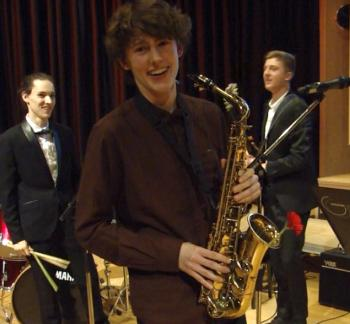
Eigentlich sollte ich nur ein Foto machen. Vom Detmolder Jugendorchester in Aktion, am Konzert-Ende, um die Andacht nicht zu stören. Aber das Ereignis war einfach zu vital, um es bei einem müden Foto zu belassen. Wie will man damit den Applaus des Publikums einfangen, das die Neue Aula komplett füllte ?
Das Konzert-Motto erwies sich als trefflich gewählt, weil vieldeutig. Zum einen hilft das Hereinholen von Spendengeld, den Flug über den Atlantik zum befreundeten McLean High School Orchestra zu finanzieren und damit auf den Schwingen des Fliegers ans Ziel zu gelangen; zum anderen beflügelte das breit angelegte Musik-Programm die jungen Musiker zur Himmelsstürmerei.
Denn hinsichtlich des Musikgeschmacks gab's schlicht keine Grenzen. Da brillierten Gina Keiko Friesicke (Violine) und Christian Gassenmeier (Klavier) mit Paganini und Chopin ganz klassisch an ihren Solo-Instrumenten, aber auch die Surpriseguys machten dem Publikum mit einem Mash-Up ihre Aufwartung. Poppig-rockiger Groove, zu dem die Musiker kundig die Instrumente wechselten. Lotte Knappmann etwa bediente Melodica, Gitarre, Keyboard und E-Bass, und die Vocals gingen allen flott von der Lippe. Pharrel Williams sollte die Stimmung beim USA-Trip illustrieren (Happy, 1973), der unverwüstliche Elton John machte mit Your Song seine Aufwartung und das Dschungel-Buch sorgte für den Schuss Wildheit im Menü.
Die Rolle des Schlussläufers im Staffeten-Rennen um das Goldene Kalb übernahm der gewaltige DJO-Klangkörper mit Medleys aus der West-Side-Story, Star Wars und den Pirates of the Caribbean. So etwas zieht immer; die Soundtracks bekannter und beliebter Filme sind in der Regel Ohrwürmer, die sich bis ins limbische System der Zuhörer durchfressen. Vorausgesetzt, sie werden ordentlich flottgemacht. Das ist beim DJO in seiner momentanen Verfassung gar keine Frage. Das Ensemble hat einen Lauf. Alle Zuhörer zeigten sich begeistert, geizten nicht mit Applaus - und spendeten reichlich Scheinchen für die Reisekasse.
„Oh, wie romantisch!“ so könnte das nächste Programm des Detmolder Jugendorchesters betitelt werden. Seit Beginn des Schuljahrs proben die Musikerinnen und Musiker an dem anspruchsvollen Winterprogramm. Auf dem Konzertprogramm stehen neben der einleitenden Ouvertüre „Hebriden“ von Felix Mendelssohn-Bartholdy, ein farbenreiches und orchestrales Cellokonzert von Camille Saint-Saëns in a-Moll und die zweisätzige letzte Sinfonie Schuberts, „die Unvollendete“. Die „Hebriden-Ouvertüre“ schildert in stimmungsvollen Bildern die schottische Landschaft und das Meer. Die Schönheit und Rauheit der schottischen Felsenküste wird lebendig in der Musik Mendelssohn-Bartholdys. Das Cellokonzert ist trotz seiner scheinbar einsätzig durchkomponierten Anlage ein ausgewachsenes dreisätziges Werk. So folgt der doppelten Exposition mit zwei kontrastierenden Themen ein menuettartiger Teil, der furios in dem Finale endet. Hans von Bülow urteilte über dieses virtuose Cellokonzert, es sei voller „Technik und Eleganz bon sens und Orginalität, Logik und Anmut“. Den Solopart wird die Solocellistin unseres DJO Hanna Bolling übernehmen. Schuberts „Unvollendete“ ist ein Werk herausragender Schönheit und schwelgt in romantischem, klaren Ton. Es gibt viele Thesen darüber, warum Schubert sie unvollendet gelassen hat. Die plausibelste scheint aber zu sein, dass Schubert nach einem menschlichen Ringen in h-Moll und einem himmlischen Ausklang in E-Dur das Werk als vollkommen ansah. Mit großem Engagement und teilweise ehrenamtlicher Unterstützung der Mitglieder des Orchesters des Landestheaters Detmold werden die Stimmen gelernt und in Stimm-und Tuttiproben musikalisch erarbeitet. Die Konzerte finden am Sonntag, den 29.01.2017 und Montag, den 30.01.2017 um 19:30 Uhr in der Neuen Aula statt. Der Eintritt ist frei. Als lohnender Ausblick sei erwähnt, dass das Detmolder Jugendorchester neben 14 weiteren Ensembles in die Endausscheidung des Orchesterwettbewerbes der Jeunesses musicales 2016/2017 gekommen ist und am 2.7.2017 sein Wettbewerbskonzert „Nordlichter“ spielen wird. Vorbereitet wird dieses Programm unter anderem mit der Orchesterreise nach Washington D.C. und einem Coaching zum Thema „Musikergesundheit“ durch Stephan Berg aus Frankfurt.
„Oh, wie romantisch!“ so könnte das nächste Programm des Detmolder Jugendorchesters betitelt werden. Seit Beginn des Schuljahrs proben die Musikerinnen und Musiker an dem anspruchsvollen Winterprogramm. Auf dem Konzertprogramm stehen neben der einleitenden Ouvertüre „Hebriden“ von Felix Mendelssohn-Bartholdy, ein farbenreiches und orchestrales Cellokonzert von Camille Saint-Saëns in a-Moll und die zweisätzige letzte Sinfonie Schuberts, „die Unvollendete“. Die „Hebriden-Ouvertüre“ schildert in stimmungsvollen Bildern die schottische Landschaft und das Meer. Die Schönheit und Rauheit der schottischen Felsenküste wird lebendig in der Musik Mendelssohn-Bartholdys. Das Cellokonzert ist trotz seiner scheinbar einsätzig durchkomponierten Anlage ein ausgewachsenes dreisätziges Werk. So folgt der doppelten Exposition mit zwei kontrastierenden Themen ein menuettartiger Teil, der furios in dem Finale endet. Hans von Bülow urteilte über dieses virtuose Cellokonzert, es sei voller „Technik und Eleganz bon sens und Orginalität, Logik und Anmut“. Den Solopart wird die Solocellistin unseres DJO Hanna Bolling übernehmen. Schuberts „Unvollendete“ ist ein Werk herausragender Schönheit und schwelgt in romantischem, klaren Ton. Es gibt viele Thesen darüber, warum Schubert sie unvollendet gelassen hat. Die plausibelste scheint aber zu sein, dass Schubert nach einem menschlichen Ringen in h-Moll und einem himmlischen Ausklang in E-Dur das Werk als vollkommen ansah. Mit großem Engagement und teilweise ehrenamtlicher Unterstützung der Mitglieder des Orchesters des Landestheaters Detmold werden die Stimmen gelernt und in Stimm-und Tuttiproben musikalisch erarbeitet. Die Konzerte finden am Sonntag, den 29.01.2017 und Montag, den 30.01.2017 um 19:30 Uhr in der Neuen Aula statt. Der Eintritt ist frei. Als lohnender Ausblick sei erwähnt, dass das Detmolder Jugendorchester neben 14 weiteren Ensembles in die Endausscheidung des Orchesterwettbewerbes der Jeunesses musicales 2016/2017 gekommen ist und am 2.7.2017 sein Wettbewerbskonzert „Nordlichter“ spielen wird. Vorbereitet wird dieses Programm unter anderem mit der Orchesterreise nach Washington D.C. und einem Coaching zum Thema „Musikergesundheit“ durch Stephan Berg aus Frankfurt.
Orchesteraustausch im Einklang trotz politischer Dissonanzen
Von Florian Wessel
Ende Mai sind wir, das Detmolder Jugendorchester, im Rahmen eines schon langjährig bestehenden Orchesteraustausches nach Washington D.C. geflogen. Die 10-tägige Reise, welche uns über den Atlantik auf einen anderen Kontinent führte, wurde durch zahlreiche Proben mit dem MacLean High School Orchestra und „Sightseeing“-Touren sowie viel Zeit mit unseren amerikanischen Freunden gestaltet. Das Ziel unserer Reise war ein erfolgreiches Konzert, welches am Ende unserer intensiven Probenwoche stand. In der Zeit bis zum Konzert lernten wir unsere amerikanischen Gastfamilien und Freunde kennen, welche wir zum Teil auch schon aus den vorherigen Jahren kannten. In dieser aufregenden, gemeinsamen Woche wurden neue und bestehende Freundschaften geknüpft und gefestigt. Wir sahen und erlebten in dieser Zeit auch viel der amerikanischen Kultur und des „American Way of Life“. Neben einer Fahrradtour durch Washington D.C. und zahlreichen Museumsbesuchen, wie zum Beispiel der Besichtigung des neu eröffneten „African-American History Museum“, hatten wir auch selber Zeit die Hauptstadt Amerikas näher zu erkunden. Von einer angespannten Situation, aufgrund des aktuellen deutsch-amerikanischen Verhältnisses, war, mit Ausnahme in der Deutschen Botschaft, nichts zu spüren. Diese besuchten wir am Ende unseres Aufenthalts. Dort wurden uns die Aufgaben der Botschaft erklärt und Fragen beantwortet. Als es jedoch zum heiklen Thema der politischen Beziehungen, sowie dem Thema Einreise kam, wurden wir gefragt, ob nicht das Musizieren der eigentliche Grund unseres Besuches sei und unsere ursprünglichen Fragen blieben im Raum stehen. Nach dem erfolgreichen Konzert am vorletzten Tag fiel uns der Abschied von unseren Freunden sehr schwer. Trotzdem ging es ein Tag später wieder auf die Rückreise nach Amsterdam und von da aus zurück nach Detmold. Wir freuen uns schon darauf die Amerikaner im Januar bei Ihrem Gegenbesuch bei uns in Detmold begrüßen zu dürfen. Wir möchten dem heimischen Publikum jedoch auf keinen Fall das Programm, welches wir in Amerika geprobt und aufgeführt haben, vorenthalten und laden alle aus diesem Grunde sehr herzlich in unsere Konzerte in der Aula des Grabbe Gymnasiums in Detmold am 2. und 3. Juli jeweils um 19:30 Uhr ein. Wir würden uns freuen, Sie begrüßen zu dürfen.
DJO in der Endrunde des Deutschen Jugendorchesterpreises
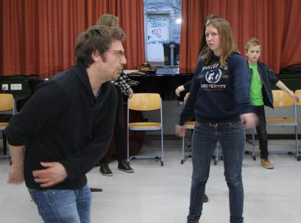
Detmold. Das Detmolder Jugendorchester ist nominiert für die Endrunde des Deutschen Jugendorchesterpreises der Jeunesses Musicales. Dabei geht’s nicht nur darum, ein tolles Konzert zu spielen und sich mit der rein musikalischen Leistung einen der drei Preise zu sichern. Der Wettbewerb ist vielmehr auf längere Sicht angelegt und will junge Musiker und ihre Orchesterleiter animieren, gemeinsam etwas auf die Beine zu stellen. Die Detmolder Akteure haben sich für ihr Projekt vom Disney-Film »Frozen« inspirieren lassen.
Und dafür gibt’s vom Verband Jeunesse Musicales Deutschland Unterstützung in Form eines Workshops. Die Musiker des Detmolder Jugendorchesters sind in ihrer Vorbereitung auf den Wettbewerb von Stefan Berg zum Thema »Gesundes Musizieren« gecoacht worden. »Ein toller Dozent«, berichtet der musikalische Leiter des Detmolder Jugendorchesters, Florian Wessel. Berg habe Violine und Barockvioline studiert und sei seit 2014 wissenschaftlicher Mitarbeiter und Doktorand am Institut für Sportwissenschaft und Motologie der Philipps-Universität Marburg.
Die Detmolder Musiker erfuhren von Stefan Berg viel Wissenswertes um den Aufbau des Bewegungsapparates und die Arbeitsweise des Körpers während des Musizierens – »aber schon bald konnten wir in kleineren Übungen selbst erfahren, wie unser Körper und unser Geist auch in aktiven und passiven Phasen dazulernen können«, berichtet Wessel. Die Instrumentalisten lernten, dass Musizieren mit kognitiven und physischen Anforderungen im Hochleistungssport vergleichbar sei und dass der Körper daher vor jedem Musizieren aufgewärmt werden müsse. »Wir absolvierten ein Warm-Up, und Stefan Berg zeigte uns Übungen, die uns fit machen, die Probe gesund und leistungsfähig zu überstehen«, so der Orchesterleiter.
Qualifiziert hatte sich das Detmolder Jugendorchester für den Wettbewerb bereits zuvor, indem die Akteure ihr Konzept für ihr Konzertprojekt eingereicht hatten. »Nordlichter« ist dieses überschrieben und knüpft an den Disney-Film »Die Eiskönigin – Völlig unverfroren (Frozen)« an. »Die Schüler waren und sind komplett eingebunden in die Kozeption des Programms«, erzählt Florian Wessel. »Zum Beispiel haben sie Moderationstexte geschrieben, und zwei Schülerinnen werden in den Rollen der Filmfiguren Anna und Elsa durchs Programm führen. Daran arbeiten sie gerade zusammen mit einer Schauspielerin.«
Im Einklang mit dem Motto wird das konzertante Programm nordisch geprägt sein. »Wir spielen auch Titel aus der Filmmusik zu ,Frozen‘, das Gros des Programms wird aber klassisch ausfallen«, sagt Florian Wessel und zählt auf: »Griegs Peer-Gynt-Suite, die Finlandia von Sibelius.« Parallel zu den musikalischen und szenischen Proben arbeite ein weiteres Team gerade an der Bühnen-Deko.
»Letztlich geht es nicht darum, ein Preisgeld zu gewinnen, sondern zu zeigen: Wir sind ein lebendiges Orchester, das gemeinsam etwas schafft«, sagt Florian Wessel. Ein Konzept, das offenbar aufgeht. Schon jetzt hat der Orchesterleiter festgestellt: »Die Schüler sind motivierter und ziehen viel stärker mit als in anderen Arbeitsphasen.«
An deren Ende steht das Kozert. Einer Fachjury der Jeunesse Musicales wird dafür nach Detmold reisen und sich die »Nordlichter« – genau wie die Konzerte der 14 anderen nominierten Orchester – anhören. Die Preise werden für die Gesamtleistung vergeben.
Aufführungen des Programms »Nordlichter« sind am Sonntag, 2. Juli, und am Montag, 3. Juli. Beginn ist jeweils um 19.30 Uhr in der Neuen Aula des Grabbe-Gymnasiums.
veröffentlicht von LZ Online am 24.03.2017 um 08:00 Uhr
* * * * *
Mit Grüßen aus Weikerheim fing alles an!
Von Florian Wessel
Im Rahmen der Wettbewerbsvorbereitung auf den Deutschen Jugendorchesterpreises 2017 der Jeunesses Musicales wurde das Detmolder Jugendorchester von Stefan Berg zum Thema „Gesundes Musizieren“ gecoacht.
Mit einer Videobotschaft und Grüßen aus Weikersheim, dem Stammsitz der Jeunesses Musicales fing alles an. Die Mitglieder des Detmolder Jugendorchesters hatten sich nach einer kurzen Probe im Musikraum versammelt und lauschten aufmerksam den Ausführungen des Coaches Stefan Berg. Vorerst ging es um den Aufbau unseres Bewegungsapparates und die Arbeitsweise unseres Körpers während des Musizierens, aber schon bald konnten wir in kleineren Übungen selbst erfahren, wie unser Körper und unser Geist auch in aktiven und passiven Phasen dazulernen können.
Wir lernten, dass Musizieren mit kognitiven und physischen Anforderungen im Hochleistungssport vergleichbar sei und dass daher vor jedem Musizieren unser Körper aufgewärmt werden müsse. Wir absolvierten ein Warm-Up und Stefan Berg zeigte uns Übungen, die uns fit machen, die Probe gesund und leistungsfähig zu überstehen. Neben dem „Warm-Werden“ erlebten wir, dass es zudem große Freude macht, sich in der Gruppe auf die Probe einzustellen. Auch Elemente des Cool-Down konnten wir selbst erfahren.
Mit Stefan Berg sandte uns die Jeunesses Musicales einen tollen Dozenten. Herr Berg hat Violine und Barockvioline studiert und ist seit 2014 wissenschaftlicher Mitarbeiter und Doktorand am Institut für Sportwissenschaft und Motologie der Philipps-Universität Marburg. Regelmäßig ist er mit der Durchführung gesundheitsfördernder und präventiver Maßnahmen im Rahmen der Präventionsprojekte „Musikergesundheit“ mit den Landesjugendorchestern Mecklenburg-Vorpommern und Sachsen betraut.
Das Detmolder Jugendorchester ist nominiert für die Endrunde des Deutschen Jugendorchesterpreises und wird am Sonntag, den 2.7.2017 um 19:30 in der Neue Aula sein Wettbewerbsprogramm „Nordlichter“ aufführen. Eine weitere Aufführung ist am Montag, dem 3.7.2017 um 19:30 in der Neuen Aula des Grabbe-Gymnasiums.
Das Programm wird sehr nordisch anmuten und zauberhaft eisköniglich…
2016
Sommerkonzert
DJO-Sommerkonzert
Präzision in der Romanze: Mit dieser Überschrift präsentiert LZ-Reporter André Gallisch seinen Bericht über das Sommerkonzert des Detmolder Jugendorchesters. Besonders hebt er Konzertmeister Gereon Mittmann hervor, der es verstanden habe, sein Instrument so gefühlvoll zu spielen, dass es in der gut gefüllten Aula ein Genuss war, ihm zuzuhören. Bei der Wiederholung des Konzertes hat das Grabbe den Titel Musikgymnasium verliehen bekommen.
Von Melanie Greschke [ Online-Magazin ,,Der Detmolder", 17. Juni 2015 ] und Thorsten Stüker (Fotos)
Detmold. Mit einem gelungenen Konzert mit dem Detmolder Jugendorchster (DJO) verabschiedete sich der langjährige Orchesterleiter und Lehrer des Grabbe-Gymnasiums, Udo Mönks, passend kurz vor den Sommerferien aus dem aktiven Dienst in den wohlverdienten Ruhestand und gab den Taktstock an seinen Nachfolger und Kollegen am Grabbe, Florian Wessel, weiter.
In der nahezu vollbesetzten neuen Aula der Schule eröffneten die jungen Musikerinnen und Musiker des DJO das gestrige Konzert mit einer Toccata und Fuge in d-Moll von Johann Sebastian Bach in dem Arrangement von Leopold Stokowski. Wie es bei den Konzerten unter der Leitung von Mönks seit 2004 bereits Brauch ist, nutzte dieser die Gelegenheit, nach dem ersten musikalischen Beitrag das Wort an das Auditorium zu richten. Dieses Mal nutzte der die Gelegenheit, sich besonders bei jenen Kollegen zu bedanken, die diese, für ihn letzte Orchester-Austauschreise nach Washington (USA) zu einem entspannten Erlebnis gemacht haben. Im Namen des gesamten Orchesters dankte Tilman Coers für gute und stets motivierende Zusammenarbeit bei den zahlreichen Proben und entschuldigte sich mit einem Augenzwinkern für das manchmal etwas laxe Disziplinverständnis des Orchesters bezüglich der Probenanfangszeiten. Im Namen aller Musikerinnen und Musiker dankte er auch für die Gelegenheit, stets so anspruchsvolle und ansprechende Stücke erarbeiten und schließlich aufführen zu können. Schließlich überreichten die Orchestermitglieder ihrem scheidenden Dirigenten jeder eine Sommerblume zum Zeichen der Anerkennung. Nach dem Stück „Jupiter“ aus „Die Planeten“ von Gustav Holst gab es eine musikalische Überraschung: Noch bevor es zur Pause ging, übernahm Florian Wessel kurzzeitig die Bühne und das Orchester. „Wir haben uns lange überlegt, wie wir dir danken können“, richtete Wessel das Wort an Udo Mönks und die Gäste. „Und es war schnell klar, dass dieses nur musikalisch geht“, so Wessel weiter. Also wurde ein Stuhl für Mönks im Zuschauerraum platziert und der „Udo-Mönks-Ehrenchor“ aus Freunden, Kollegen und Schülern zu beiden Seiten des Orchesters auf die Bühne gerufen. Mit einem Sanges-Solo von Wessel wurde Mönks auf seinen Ehrenplatz gerufen und Chor und Orchester würdigten ihn mit dem – textlich angepassten – Schluss-Chorstück aus Mozarts „Zauberflöte“. Bewegt gingen damit alle in die Pause.
Der zweite Teil des Konzerts wurde optisch durch die „Verwandlung“ der Abiturienten des Ensembles aufgepeppt, die als cowboys-boys und cowgirls zurechtgemacht aus der Pause kamen. Nach der Ouvertüre zu „Der Freischütz“ von Carl Maia von Weber spielte das DJO als letztes Stück unter der Leitung von Udo Mönks von George Gershwin nach dem Arrangement von John Whitney „An American in Paris“. Das mitreißende Stück profitierte besonders von der wirklich tollen Leistung von Eike Klein, der die erste Trompete in dem Orchester spielt. Auch die Solo-Passage von Tilman Coers auf dem Cello war sehr gelungen. Schulleiter Werner Klapproth kam anschließend zu Udo Mönks zur Bühne und wandte sich an seinen langjährigen Kollegen und an das Publikum: „Bevor ich dem wirklich großartigen Orchester danke, danke ich heute in besonderer Weise Herrn Mönks.“ Er betonte, wie bereits Florian Wessel vor ihm, die besonderen Leistungen, die Mönks für die Schule und die Musik nach innen wie auch nach außen erbrachte. Die inzwischen legendären Orchesterfahrten mit dem Orchester der Sekundarstufe I nach Kloster Brunnen hat Udo Mönks ins Leben gerufen. Startete die erste Fahrt noch in einem kleinen Bulli, so macht sich heute jedes Jahr ein großer 60-sitziger Reisebus auf den Weg. Auch die Orchester-Partnerschaft mit dem McLean-Orchester in Washington wurde von Mönks aufgebaut. Als eine besondere Anerkennung seiner geleisteten Arbeit überreichte Klapproth dem verdienten Lehrer die beiden großen Grabbe-Gs, zwei ineinander greifenden, transparenten Steelen, die auch als Grabbepreis verliehen werden.
„Ich freue mich, dass Ihr Nachfolger auch ein richtiger Lehrer bei uns an der Schule ist“, leitete Klapproth zum neuen Leiter des DJO, Florian Wessel, über. „Ihnen ist bewusst, Sie treten in große Fußstapfen, aber Sie haben die richtige Schuhgröße – Sie schaffen das“, so Klapproth zur bevorstehenden Übergabe des Taktstocks durch Udo Mönks an Wessel. „Nimm diesen Stock als Zeichen unseres Vertrauens!“, sagte Mönks bei der Übergabe.
Schwungvoll und voller Elan dirigierte Wessel im Anschluss das Orchester durch die Ouvertüre zu „Orpheus“ von Jacques Offenbach. Mit standing ovations für die beiden Dirigenten und das junge Orchester sowie zwei Zugaben fand das Konzert seinen krönenden Abschluss.
Wie das Detmolder Jugendorchester mit dem Grabbe-Gymnasium zusammenhängt
Von Udo Mönks
Das Detmolder Jugendorchester (DJO) wurde 1954 durch den Violin-Professor Wilhelm Isselmann und Dr. Friedrich Eberth, damals Musiklehrer der Schule, die später den Namen ,,Grabbe" tragen sollte, ins Leben gerufen. Nach dem Übergang Eberths zur Musikhochschule übernahm Hans Gresser als Musiklehrer und ,,Architekt" des musischen Zweiges 1959 das Ensemble. Mit der Nachfolge durch Joachim Bergmann leitete ab 1984 die dritte Musik-Lehrkraft unserer Schule bis 2004 das Orchester, das als Forum für alle begabten Instrumentalisten Detmolder Schulen fortbesteht. In der Folge der Einführung des Abiturs nach acht Jahren erhöhte sich der Anteil der Grabbe-Schüler. Die übergeordnete Bezeichnung ,,Detmolder Jugendorchester" ist als Tradition erhalten geblieben und wird zusätzlich im Logo als Teil unserer Schule aufgegriffen. Deshalb ist das große Symphonieorchester des Grabbe-Gymnasiums nicht unmittelbar als Teil unserer Schule zu erkennen.
2013
Sommerkonzert
Das Detmolder Jugendorchester hat in diesem Halbjahr an zwei großen Projekten gearbeitet: Der Austausch mit dem Orchester der McLean High School wurde mit der neunten Begegnung in Folge Ende Mai fortgesetzt. Das Konzert in Washington war ein großartiges Erlebnis für alle Beteiligten, und das intensive Zusammenleben mit den Gastgeberfamilien hat wieder sehr enge, freundschaftliche und dauerhafte Kontakte befördert.
Die in der kommenden Woche am Dienstag, 25. Juni, und Donnerstag, 27. Juni, jeweils um 19.30 Uhr anstehenden Konzerte stellen die besonderen Begabungen der Abiturienten dieses Doppeljahrgangs in den Mittelpunkt. Franziska Gula vom Leistungskurs Musik wird das Violinkonzert KV 216 von Mozart spielen. Das Konzert für zwei Klaviere und Orchester KV 365 stellt besondere Anforderungen an die Abiturientinnen Lena Unger und Sarah Romberger, und auch die Weite der Bühne in der Neuen Aula des Grabbe-Gymnasiums ist durch die zwei großen Instrumente stark gefordert. Drei Instrumentalisten setzt der finnische Komponist Berhard Henrik Crusell in seinem Concertino für Klarinette, Fagott und Waldhorn ein. Mit Friederike Krause, Klarinette, Sarah Romberger an ihrem ,,Zweitinstrument" Fagott und Tobias Bätge am Waldhorn finden sich überaus begabte Jugendliche zusammen. Umrahmt werden die Solokonzerte von der Ouvertüre zur Mozart-Oper ,,Die Zauberflöte" und einem Medley aus STAR WARS. Es spielt das Detmolder Jugendorchester, Leitung Udo Mönks. Der Eintritt ist frei.
Das Programm teilt sich in einen ernsteren ersten Teil mit der „heimlichen“ Nationalhymne Finlandia von Jean Sibelius sowie dem Konzert für Flöte und Orchester d-Moll des Frühromantikers Franz Danzi. Die Solistin ist Lea Polanski, Jungstudierende an der hiesigen Musikhochschule und Abiturientin dieses Jahrgangs. Der zweite Teil wird locker und beschwingt: Walzer von Paul Lincke und Johann Strauß, der Radetzky-Marsch von Johann Strauß Vater zum Mitklatschen und die schönsten Melodien aus dem MusicalCHICAGO versprechen angenehme Unterhaltung.
2011
The Typewriter
Das Video ist bei YouTube nicht gelistet. Es kann nur auf der Grabbe-Homepage gesehen werden und von den Freunden, die den Link kennen. hjg
Schottische Fantasie
Das Video ist bei YouTube nicht gelistet. Es kann nur auf der Grabbe-Homepage gesehen werden und von den Freunden, die den Link kennen. hjg
Zwei glanzvolle Juni-Konzerte in der Neuen Aula: opulente Werke von Wagner und Gershwin
Von Hajo Gärtner
LZ-Rezensent Andreas Schwabe attestiert den Musikern eine reife Leistung: ,,Detmolder Jugendorchester meistert anspruchsvolles Programm", titelt er in der Unterzeile der Überschrift. Hauptzeile: ,,Ein Überflieger am Klavier". Gemeint ist Soohong Park, der nicht nur ,,diesen vertrackten Triller'' hinbekommen hat, sondern auch ,,die brillanten Kaskaden, die rhythmischen Raffinessen und kreuzweise übereinander her springenden Hände'', das Ganze im ,,dichten Dialog mit dem Orchester". Auf dem Programm stand die Rhapsodie in Blue, jenes ,,Bravourstück, mit dem George Gershwin den Jazz im Konzertsaal etabliert hat". Eine Komposition, die dem Komponisten alles abverlange. Soohong Park hat alles gegeben und das Konzertpublikum in Begeisterung versetzt. Nicht nur er. Schwabe hebt auch Daniel ,,Klarinette" Romberger hervor, ,,mit jener frischen Phrasierung, die jeden Zuhörer sofort für das Kommende einnimmt". Ein Rezensent muss natürlich immer auch einen kritischen Aspekt finden und benennen: Christina Petersen habe sich ,,nicht ganz so eindrucksvoll in Szene setzen" können, weil ,,das Orchester sie häufig etwas zudeckte". Nichtsdestotrotz spiele sie eine ,,tolle Viola", wie die Zugabe bewiesen habe. Schwabes Abschlussurteil: ,,Das Orchester konnte die vielen Talente in seinen Reihen in den ganz schön schweren Polowetzer Tänzen von Alexander Borodin besonders schön ins Rampenlicht stellen."
Anfang Januar gibts am Grabbe-Gymnasium gleich zwei schöne und anspruchsvolle Konzerte, teilt Orchesterleiter Udo Mönks mit.
Das Mendelssohn Quartett Leipzig gastiert am Freitag, 9. Januar, um 19.30 Uhr in unserer Neuen Aula. Mitbegründer und "Primarius" ist Gunnar Harms, der den älteren KollegInnen sicher noch bekannt ist. Sein Weg hat ihn ins Gewandhausorchester Leipzig geführt, ein hoch angesehenes Ensemble.
Das Jugendorchester bereitet sich ebenfalls auf zwei Konzerte gleich zum Wiederbeginn der Schule im neuen Jahr vor. Mönks: ,,Wir haben in diesem Abi-Jahrgang mehrere sehr talentierte Musiker, die sich je mit einem Solo-Konzert verabschieden. Tigran Kharatyan spielt das Konzert für Violine und Orchester von Jean Sibelius. Annika Treutler (studiert inzwischen in Rostock) kehrt an ihre alte Schule in ihren Jahrgang zurück mit dem Konzert für Klavier und Orchester von Dimitri Schostakowitsch. Zu diesem Konzert hat der Komponist eine ebenfalls konzertierende Trompetenstimme hinzugefügt, die Markus Tappe (12) tragen wird."
Das Detmolder Jugendorchester veranstaltet am Sonntag und Montag, 21./22. Juni, ein Konzert mit Werken von Felix Mendelssohn-Bartholdy (,,Die Hebriden"), Alexandre Tansman (,,Concertino pour clarinette et orchestre") und Georges Bizet (Nr. 1 C-Dur). Als Solist tritt Benedikt Brenk an. Die Konzerte beginnen am Sonntag um 11.30 Uhr, am Montag um 19.30 Uhr in der Neuen Aula des Grabbe-Gymnasiums. Die Fotos sind bei den Proben entstanden.
Einstimmung auf Weihnachten: Am Dienstag und Mittwoch, 1. und 2. Dezember, geben Chor SII und unser Jugendorchester das Weihnachtskonzert 2009. Die Konzerte beginnen jeweils um 19.30 Uhr in der Erlöserkirche am Markt.
Das Jugendorchester eröffnet mit einer Weihnachtsouvertüre über ,,Vom Himmel hoch" von Otto Nicolai, in der der Komponist alle Register des Orchesters einsetzt um seine Weihnachtsfreude zu formulieren.
Festlicher Glanz wird auch verbreitet durch eine ,,Sonate à otto Viole con una Tromba" (Konzert für Trompete und zwei Streicherchöre) von Alessandro Stradella. Markus Tappe (Jg 13) spielt die Solo-Trompete.
Chor und Orchester finden sich zu zwei Werken zusammen: Im ,,Magnificat" von Dietrich Buxtehude, einem Komponisten, den J. S. Bach sehr geschätzt hat, bildet der Bibeltext aus dem Lukas-Evangelium die Grundlage der Komposition. ,,Der Stern von Bethlehem" ist durch Josef Gabriel Rheinberger im Jahre 1891 vertont worden. Seine Frau, Franziska von Hoffnaaß, gestaltet in ihrem Text eine sehr ,,romantische" Betrachtung des Weihnachtsfestes. Sie stellt den biblischen Text zusammen mit freien Überlegungen und anrührenden Betrachtungen. Ihr Mann setzt das volle spätromantische Sinfonieorchester ein und malt damit die schönsten Klangfarben.
Wir laden herzlich ein, an diesen Abenden die Hektik von Schule zu vergessen und die Schönheiten der Musik in feierlicher Umgebung zu genießen.
Detmolder Hornistin Victoria Duffin verleiht dem Konzert des Jugendorchesters einen ganz besonderen Glanz
Von Andreas Schwabe
Wer weiß schon, dass das Horn nicht nur nach Wald und Jagd klingt, sondern richtig singen, ja Samba tanzen kann? Jan Koetsier (1911 - 2006) weiß das. Der niederländische Komponist hat dem Horn ein kleines Konzert geschrieben, in dessen zweiten Satz dieses wegen seiner Klangfarbe durchaus respektierte, aber ansonsten stiefmütterlich behandelte Instrument richtig „singen“ und im dritten Satz richtig „tanzen“ muss. Und auch sonst kann im Hinblick auf die spieltechnischen und musikalischen Anforderungen an das Horn in diesem Werk mitnichten nur von einem „kleinen“ Konzert die Rede sein. Schließlich hat der Komponist das Werk dem Hornvirtuosen Hermann Baumann gewidmet. Victoria Duffin hat nicht ohne Grund einen ersten Preis auf Bundesebene von „Jugend musiziert“ gewonnen und schon mit 12 Jahren im Landesjugendorchester mitgespielt. Sie ist heute auch Mitglied des Bundesjugendorchesters und Stipendiatin der Jürgen-Ponto-Stiftung. Sie wusste auch am Sonntag und Montag in der Aula des Grabbe-Gymnasiums ihre Zuhörer zu begeistern. Ebenso das Detmolder Jugendorchester, dessen Leiter Udo Mönks seinen Streichersatz ganz besonders gut zu einem homogenen Klangkörper zusammengeschweißt hatte. Schon der Einstieg in das mit zwei Stunden Musik recht lange Konzert gelang prächtig. Voller Frische und mit schönen Schwung flanierte das Jugendorchester durch die zwischen Flöten und Streichern hin und her wehenden Farben in der d-moll-Sinfonie von Alessandro Scarlatti. An diesen überaus schönen ersten Teil konnten die jungen Leute nach der Pause nicht mehr so ganz anknüpfen. Tschaikowskis musikalischer Ausflug nach Italien verlangte eine immense Spannung, um die kontrastreiche Heiterkeit der Musik wirklich hörbar zu machen. Und um „Sgt. Pepper’s Lonely Hearts Club Band“ als sinfonisches Event auftreten zu lassen, hätten die Arrangements eigentlich mehr Pep gebraucht. Dabei hat das Orchester aus dem, was der Arrangeur aufgeschrieben hat, noch viel herausgeholt. Prompt löste auch dieses Stück bei den Zuhörern helle Begeisterung aus, so dass das Orchester nicht ohne Zugabe von der Bühne runter kam.
Bemerkenswerte Solistinnen: Bernadette Schäfer (links) und Luise Höcker. Foto: Franz-Nevermann
Die wundersame Wandlung
Ovationen für "Paulus"-Wiedergabe von Chören und Orchester des Grabbe
Detmold (Nv). Freundlicher Beifall am Anfang, stehende Ovationen am Ende - das Jugendorchester und den Chören des Grabe-Gymnasiums gelang am Samstagabend in der Christuskirche eine ebenso perfekte wie ergreifende Wiedergabe des Oratoriums "Paulus" von Felix Mendelssohn-Bartholdy.
Mit seinen Oratorien unternahm Felix Mendelssohn-Bartholdy den erfolgreichen Versuch, den protestantischen Gemeindechoral in die Form des Händel'schen Vorbilds zu integrieren. "Paulus" entstand sieben Jahre, nachdem der Komponist die Matthäus-Passion von Johann Sebastian Bach dem Vergessen entrissen hatte. Und so ist auch der Einfluss dieses Großmeisters unverkennbar. Das gilt für die der Besinnung dienenden Choräle, für den Einsatz des Chors als Vertreter verschiedener Bevölkerungsgruppen und für die oft erzählende und kommentierende Rolle des Vokalsolisten, aber auch für instrumentale Zwischenspiele. Das Oratorium beginnt mit der Steinigung des Stephanus und einem Jüngling, der "Wohlgefallen an seinem Tode hat". Der Weg dieses Saulus zum Paulus, vom fanatischen Eiferer zum demütigen Gottesdiener, wird in dramatischen Auseinandersetzungen mit den Vertretern anderer Religionen und in einer fast transzendent wirkenden Bekehrungsszene aufgezeigt. Dabei werden Passagen aus dem Alten Testament ebenso verwendet wie Texte aus der Apostelgeschichte, den Briefen des Paulus und der Offenbarung des Johannes. Mit hoch konzentriertem Einsatz und überragender Disziplin überzeugten das von Udo Mönks einstudierte Jugendorchester und die von Hanna Sentker geleiteten Chöre des Grabbe gleichermaßen. Respektable Leistungen boten unter anderem die den Aufruhr der Eiferer gestaltenden Streicher, die Flöten der anbetenden Heiden und die samtenen Celli, die eine Tenor-Kavatine untermalten. Der verschlungene und verflochtene Eingangschor gelang ebenso vorzüglich wie die triumphalen Aufbrüche und die eher lyrisch betonten, nachdenklich einhaltenden Szenen. Vier bemerkenswerte Vokalsolisten konnten für die Aufführung gewonnen werden. Bernadette Schäfer setzte die Strahlkraft ihres Soprans unter anderem in einer beängstigend gegenwärtigen Klage über Jerusalem ein, Luise Höcker (Alt) bot sanften Trost. Bohyeon Mun lieh seinen Tenor dem Erzähler und verschiedenen biblischen Gestalten. Der Bass Wolfgang Treutler überzeugte mit einer ebenso anrührenden wie ausdrucksvollen Gestaltung der Titelfigur. Wunderbar gelang ihm und allen Beteiligten die ergreifende Abschiedsszene des "Paulus", der sich von Ephesus aus in eine ungewisse Zukunft einschifft.
Johann Christian Bach (1735 – 1782) Sinfonia für Doppel-Orchester Op. 18 Nr. 3
Camille Saint-Saëns (1835 – 1921) Concerto pour Violoncelle et Orchestre No. 1 en la mineur Op. 33 Solist: Nico Treutler
Pause
Felix Mendelssohn Bartholdy (1809 – 1847) Ouvertüre zum Oratorium Paulus Op. 36
George Gershwin (1898 - 1937) An American in Paris Suite Arr.: John Whitney
Claude Michel Schönberg (* 1944) Selections from LES MISÉRABLES Arr.: Bob Lowden
Erläuterungen
Johann Christian Bach, der jüngste und in der zweiten Hälfte des 18. Jahrhunderts berühmteste Bach-Sohn, wird auch der „Mailänder“ oder „Londoner“ Bach genannt. In seinen Werken wird zunehmend seine Bedeutung als Meister des „galanten Stils“ erkannt, der mit seiner Vereinigung von italienischen und deutschen Form- und Ausdruckselementen der Klassik die Wege gebahnt und vor allen Dingen den „cantablen“ Stil seines großen Verehrers Mozart vorbereitet hat. Die D-Dur - Sinfonia für Doppelorchester stammt aus den Jahren 1774 – 77 und zeigt besonders im langsamen Satz den ganzen Zauber seiner süßen italienischen Melodik, gepaart mit deutscher Gemütstiefe (Fritz Stein, im Vorwort der Peters-Partitur).
Das außerordentliche musikalische Talent des französischen Pianisten, Organisten, Musikpädagogen und Komponisten Camille Saint-Saëns wurde früh entdeckt und gefördert. Nach Musikstudium und Organistentätigkeiten in Paris widmete er sich ab 1865 hauptsächlich der Komposition und der Lehre. Motiviert durch den deutsch-französischen Krieg setzte sich Saint-Saëns für eine nationale französische Musik ein.
Dieser Gesinnung entsprang im Jahr 1872 auch das Konzert für Violoncello und Orchester Nr. 1 a-Moll op. 33. Es verabschiedet sich von der traditionellen Form des mehr- bzw. dreisätzigen Solokonzertes. Der Komponist schuf vielmehr ein Werk aus einem Guss, das lediglich durch neue Themeneinsätze oder andere Tempobezeichnungen gegliedert wird. Die häufig wechselnde Aufgabenverteilung zwischen dem Solisten und dem Orchester zieht sich durch das gesamte Konzert. Auch die Regeln der Sonatenhauptsatzform, die bis zur Romantik im Allgemeinen dem Kopfsatz zu Grunde liegen, werden freier behandelt. Die Exposition wird vom Solocello mit dem Hauptthema eröffnet. Das Orchester, zu Anfang klar in begleitender Funktion, folgt dann ebenfalls mit dem Hauptthema, während das Solocello in den Hintergrund rückt. Danach kann es aber im lyrisch klagenden Seitenthema wieder seine klanglichen Möglichkeiten entfalten. Ein tänzerischer, aber verhalten schwebender zweiter großer Abschnitt des Konzertes tritt an die Stelle eines langsamen Satzes. Nach einer Wiederaufnahme des ersten Hauptthemas entwickelt sich der sehr kontrastreiche dritte Abschnitt. Ruhige expressive Melodien wechseln sich hier mit forschen Fanfarenklängen und raschen Sechzehntelketten ab, bevor ein kurzer, völlig neuartiger Teil in A-Dur das Konzert wie ein „Rausschmeißer“ beschließt.
Nico Treutler
Der 1988 in Bielefeld geborene Nico Treutler erhielt mit knapp 6 Jahren seinen ersten Cellounterricht bei Claus Hütterott in Paderborn. Bei zahlreichen Teilnahmen am Wettbewerb Jugend musiziert zwischen 1998 und 2003 errang er 1. Preise auf Landes- und Bundesebene. Seit Herbst 2001 unterrichtet ihn Prof. Tilmann Wick, der an der Hochschule für Musik und Theater Hannover lehrt. Dort wurde Nico Treutler zum Wintersemester 2005/2006 als Jungstudent aufgenommen. Den Cellisten des Detmolder Jugendorchesters gehört Nico Treutler seit 7 Jahren an, seit 2005 auch als Stimmführer. Außerdem nahm er regelmäßig bei der Kammermusikveranstaltung Serenata Grabbiana teil.
Gern macht das Jugendorchester auf seine neue CD aufmerksam. Im Foyer kann sie erworben werden.
Eingespielte Werke: Das Concertino für zwei Hörner und großes Orchester von Friedrich Kuhlau mit den Solisten Victoria und Carsten Duffin war Teil des Programms im März, die Sinfonia für acht obligate Pauken und Orchester von Johann Fischer mit Manuel Westermann an den Solo-Instrumenten im Juni 2005. Der Huldigungsmarsch aus „Sigurd Jorsalfar“ von Edvard Grieg erklang im Konzert Anfang 2006 gemeinsam mit dem Orchester der McLean High School. Wir wünschen Ihnen viel Vergnügen!
Schon seit über zehn Jahren existiert der Orchesteraustausch des Detmolder Jugendorchesters (DJO) mit dem Orchester der McLean High School (MHSO )in einem Vorort von Washington, DC. Gerade haben wir vom 24. Mai bis 02. Juni unsere Partner wieder besucht und nach gemeinsamen Proben ein interessantes und an Abwechslung reiches Programm aufgeführt, in das auch der dortige Schulchor eingebunden war. Einen Teil des „amerikanisch bunten“ Programms bietet das DJO nach der Pause.
Die enge Folge von Besuch und Gegenbesuch wird im Januar 2008 fortgesetzt, wenn das MHSO nach Detmold kommt. So ist ein intensives Kennenlernen der Jugendlichen möglich, das einen regen Gedankenaustausch und echte Freundschaften zur Folge hat.
Das Jugendorchester wird unterstützt von BRUDERHILFE-PAX-FAMILIENFÜRSORGE.
Presse-Echo
Cellist ist die treibende Kraft: Von Nico Treutler wird man noch hören
Detmolder Jugendorchester präsentierte sich in Hochform
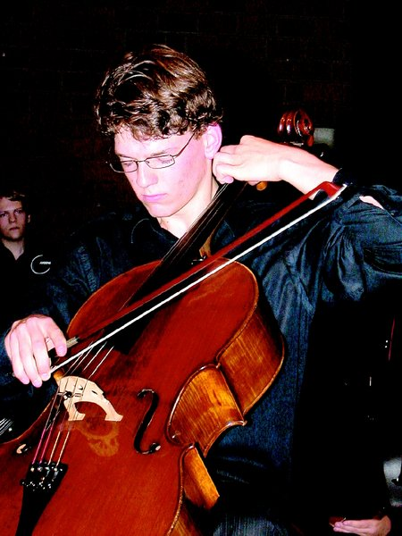
Von Andreas Schwabe (Text/Foto)
Detmold. Wenn einer eine Reise tut, dann kann er was erzählen, heißt es. Das Detmolder Jugendorchester präsentierte jetzt in zwei Konzerten seine ganz eigene Auslegung dieser Weisheit. Es erzählte nicht, es musizierte - und zwar in Hochform. Und es präsentierte mit Nico Treutler einen in den eigenen Reihen groß gewordenen Solisten, von dem man noch hören wird.
Die Reise ging in die USA, genauer gesagt, in die Nähe von Washington zur Partnerschule des Grabbe-Gymnasiums (die LZ berichtete). Zum dritten Mal kamen Schülerinnen und Schüler beider Schulen zusammen, um in diesem Jahr dort - im nächsten Jahr werden die Amis wieder hier sein - gemeinsam ein Konzert vorzubereiten und zu spielen. Klar, dass nach so intensiven zehn Tagen der Klang eines Orchesters enorm zusammenwächst. Vor einer Woche kamen die Jugendlichen wieder zurück, um jetzt im eigenen Konzertsaal den Funken auf ein jeweils erfreulich zahlreiches Publikum überspringen zu lassen und darüber hinaus im ersten Cellokonzert von Camille Saint-Saens reichlich Luft aus der Welt großen Musizierens zu schnuppern.
Nico Treutler wurde zur treibenden Kraft auf der Reise in dieses Wunderland der Musik. Im Grabbe-Gymnasium groß geworden, hat er so sich so in das Cellospiel vertieft, dass die beiden zu einer begeisternden Einheit zusammengewachsen sind. Insbesondere sein jetziger Lehrer Professor Tillmann Wieck hat dem Jungstudenten Türen geöffnet, die erstaunliche weitere Wege sichtbar werden lassen. Treutlers Ton hat ungemein an kerniger Ausstrahlung und fesselnder Intensität gewonnen. Er vermag schon spieltechnisch höchste Ansprüche nicht nur zu meistern, sondern organisch in ein musikalisches Geschehen einzubetten.
Achtsamkeit für musikalische Partner
Und das auch in großer Achtsamkeit für seinen musikalischen Partner, das Detmolder Jugendorchester, das in diesem Konzert geradezu über sich hinaus gewachsen ist. Udo Mönks hat seine jungen Musiker - der nicht nur hier brillant aufspielende Konzertmeister Michael Ziethen ist gerade mal 16 Jahre alt und sei einmal stellvertretend für die vielen anderen herausragenden Musiker genannt (Flöte und Horn etwa) - zu einem differenziert und einfühlsam mitgehenden Klangkörper zusammengeschlossen. Auch wenn rhythmisch klatschende Hände und trommelnde Füße den Solisten vehement zur Zugabe baten, in der Treutler mit einem atemberaubend gespielten ersten Satz aus Hindemiths Solo-Sonate noch mal eins drauf setzte. Der Beifall galt auch dem tollen Orchester.
Die Reise ging nach Amerika und prompt wartete das Programm mit einer Zusammenstellung auf, die im alten Europa auch heute noch so manche Stirn in Falten legt. In Amerika wird es kein Problem gewesen sein, Mendelssohns Ouvertüre zu seinem "Paulus" - diese tief berührende Orchestrierung des "Wachet auf ruft uns die Stimme" - in einem Atemzug mit einem Potpourri der bekanntesten Melodien aus dem Musical "Les Miserables" zu spielen. Dort ist die Empfindung des musikalisch Schönen lange nicht mehr so mit der des Guten und Wahren verknüpft wie noch hierzulande.
Ungeachtet dieser Tatsache ist dem Orchester nicht nur für diese beiden Stücke eine ganz ausgezeichnete Darstellung zu bescheinigen, auch wenn man sich so manche Musicalmelodie mit mehr Mut zur Sentimentalität hätte vorstellen können. Auch Gershwins mit vielen rhythmischen Fallstricken aufwartenden "Amerikaner in Paris" geriet ebenso zu einem echten Hörvergnügen wie die galant den Abend eröffnende Sinfonia für Doppelorchester von Johann Christian Bach.
Das Detmolder Jugendorchester gab sich die Ehre und führte den Zyklus „Mein Vaterland“ von Friedrich Smetana auf. Was haben die Zuhörer an zwei Abenden erlebt:
Spektakulär beginnt der erste Satz „Vysehrad“ mit einem ausgedehnten Harfen-Solo. Nach alter Sage sitzt der Dichter Lumir hoch über der Moldau auf dem Felsen Vysehrad bei Prag, und singt zur Harfe: Von der geheimnisvollen, untergegangenen Burg Vysehrad, von der Geschichte und den Mythen Böhmens.
Nach der „Moldau“ malt der Satz „Aus Böhmens Hain und Flur“ in weiten Zügen die Gedanken und Gefühle, die den Betrachter beim Anblick der böhmischen Landschaft erfassen. Aus dem weiten Umkreis dringt inniger Gesang zu seinen Ohren, alle Haine und die ganze blühende Flur singen ihre Weisen, fröhliche und traurige. Sie alle kommen zu Wort, die tiefen, dunklen Wälder - in den Solopartien der Hörner - und die sonnigen fruchtbaren Tiefebenen der Elbe und andere Teile des reichen, schönen Landes Böhmen. Ein Satz voller „schöner“ Passagen, der den Solisten des Orchesters einen breiten Raum gibt.
Es folgt “Tabor“: Das ist die feste Burg, von den Hussiten gegründet, zu Schutz und Trutz der kriegerischen Scharen. "Wer da ist ein Gotteskämpfer" tönt der düstere Choral, der die Streiter entflammt, aber Grauen verbreitet in den Reihen der Feinde. Es ist die Zeit böhmischer Kraft und Größe.
Ebenfalls auf eine Sage greift der letzte Satz zurück: Die Heiden der Hussitenzeit ruhen im Berge Blanik. Hirten weiden auf seinem Abhange ihre Herden. Unheil kommt über das Land. Da steigen die Ritter herauf, bringen Sieg und Rettung. Und in neuem Glanze strahlt der Ruhm des Böhmerlandes.
So endet der Zyklus „Mein Vaterland“ in einem jubelnden Tutti-Finale.
Smetana - ein Leben und Sterben für die Musik
Friedrich Smetana, * 2. März 1824 in Leitomischl, † 12. Mai 1884 in Prag
Seit 1843 widmete sich Smetana ganz der Musik. Da die Prager Verhältnisse damals künstlerisch wie politisch zu eng für seine Ansichten und Pläne waren, gelang ihm weder sein Vorhaben, ein Symphonieorchester, noch später einen Musikverein zu gründen. Gern nahm er daher ein Angebot an, nach Göteborg als Musikdirektor zu gehen. Diese Stellung, die er im Herbst 1856 antrat, gab ihm reichlich Gelegenheit, Erfahrungen als Chor- und Orchester- Dirigent zu sammeln. Die Zeit, die er dort verbrachte, war in materieller Hinsicht die Glanzperiode seines Lebens. Die Milderung des österreichischen Regimes in Böhmen nach dem Kaiserdiplom (1860) gab Smetanas Leben eine entscheidende Wendung. Sein nationales Bewusstsein, das infolge der deutschen Schulbildung und des überwiegend deutschen Umgangskreises, in dem er bisher gelebt hatte, einigermaßen eingeschlummert war, flammte auf. Smetana entschied sich, von nun an alle seine Kräfte ausschließlich der tschechischen Nation zu widmen. Zur Rückkehr nach Böhmen lockte ihn besonders die bevorstehende Eröffnung des selbstständigen tschechischen Theaters (1862). In Prag scheiterten vorläufig seine Hoffnungen auf eine Kapellmeister- Stelle beim Theater, doch entfaltete Smetana eine große kulturpolitische Aktivität. Sein Hauptinteresse galt dem Ziel, eine national geprägte tschechische, besonders dramatische Musik zu schaffen. Der Erfolg seiner ersten Opern (darunter Die Verkaufte Braut) war entscheidend für sein Engagement als 1.Theaterkapellmeister (1866). Während der acht Jahre, in denen er diese Stelle bekleidete, konnte er seine Pläne verwirklichen. Im Repertoire nahm er besonders auf die einheimische Produktion Rücksicht. Auch Werke des damals noch wenig bekannten Dvorak kamen hier zur Geltung. Seit Juli 1874 zeigten sich bei ihm Gehörstrübungen, die sich vereinzelt bereits um 1860 gemeldet hatten. In der Nacht des 20. Okt. 1874 trat völlige Taubheit ein. In der Folge litt er zusätzlich unter großer wirtschaftlicher Not. Smetana, der lange die Hoffnung auf Genesung von seiner Krankheit nicht aufgab, suchte vergeblich ärztliche Hilfe bei Spezialisten. Trotz seines schweren Schicksals erlahmte er nicht in seiner schöpferischen Tätigkeit: Er begann nun mit der Verwirklichung seines großen symphonischen Zyklus, dessen Konzeption eng mit den letzten Szenen seiner Oper Libuse zusammenhängt. Die Entstehung der ersten Teile, Vysehrad und Vltava (Die Moldau), fällt in die Zeit von Smetanas Katastrophe (Sept. bis Dez. 1874). Im nächsten Jahre schrieb er Sárka und Zceskych luhua háju (Aus Böhmens Hain und Fluren), und erst um die Jahreswende.
I. Vysehrad Die Harfe des Sängers Lumir erklang auf dem stolzen Vysehrad, dem Sitze der böhmischen Fürsten und Könige. Die Burg erstrahlte in Ruhm und Glanz. Wilde Kämpfe kamen und rissen die Pracht des Vysehrad in den Untergang. Wie ein Echo ertönt über ihm der längst verklungene Gesang Lumirs. II. Vltava Zunächst belauscht diese Komposition die beiden Quellen, die sogenannte "warme" und die "kalte" Moldau, die im Schatten des Böhmerwaldes entspringen. Ihre lustig dahinrauschenden Wellen vereinigen sich und erglänzen in den Strahlen der Morgensonne. Der Waldbach wird zum Fluß Moldau, der auf seinem Weg durch die böhmische Landschaft zu einem gewaltigen Strom anwächst. Er fließt durch dichte Waldungen, in denen das fröhliche Treiben einer Jagd hörbar wird. Er fließt durch Wiesen und Haine, wo unter lustigen Klängen ein Hochzeitsfest mit Gesang und Tanz gefeiert wird. In der Nacht tanzen die Wald- und Wassernymphen beim silbernen Mondschein auf den glänzenden Wellen ihre Reigen. Stolze Burgen, Schlösser und ehrwürdige Ruinen als Zeugen vergangener Herrlichkeit ziehen vorüber. 1878/79 entstanden die letzten Dichtungen, Tábor und Blaník, die das Ganze zum einheitlichen Zyklus vollendeten; bei der Drucklegung erhielt dieser den definitiven Titel Má vlast (Mein Vaterland). Smetana erfreute sich immer steigender Anerkennung der Öffentlichkeit: 100. Reprise der Verkauften Braut am 5. Mai 1882, erste Gesamtaufführung des Zyklus Má vlast am 5. Nov. 1882. Zunehmend musste er gesundheitlich mit Halluzinationen und Ohrensausen, Folgen seiner Krankheit, kämpfen, die sich im Laufe des nächsten Jahres unerträglich steigerten. Ende April 1884 musste er in die Prager Anstalt für Geisteskranke überführt werden, in der er bald darauf entschlief.
Der Strom braust und tost in den Katarakten von St. Johannes. Mit Gewalt und schäumenden Wellen bahnt er sich den Weg durch die Felsenspalte in das breite Flußbett, in welchem er mit majestätischer Ruhe weiter gen Prag dahinfließt, begrüßt vom altehrwürdigen Vysehrad, bis er schließlich in weiter Ferne den Augen des Dichters entschwindet und sich in die Elbe ergießt. IV. Aus Böhmens Hain und Flur Dieses symphonische Gedicht malt in weiten Zügen die Gedanken und Gefühle, die uns beim Anblick der böhmischen Landschaft erfassen. Aus dem weiten Umkreis dringt inniger Gesang zu unseren Ohren, alle Haine und die ganze blühende Flur singen ihre Weisen, fröhliche und traurige. Sie alle kommen zu Wort, die tiefen, dunklen Wälder - in den Solopartien der Hörner - und die sonnigen fruchtbaren Tiefebenen der Elbe und andere Teile des reichen, schönen Landes Böhmen. Ein jeder kann dieser Komposition die Erinnerung an das entnehmen, was er ins Herz geschlossen hat. Der Dichter hat freien Weg, er braucht sich nur an die Einzelheiten der Komposition zu halten. Das Detmolder Jugendorchester wird unterstützt von: V. Tábor Das ist die feste Burg, von den Hussiten gegründet, zu Schutz und Trotz der kriegerischen Scharen. "Wer da ist ein Gotteskämpfer" tönt der düstere Choral, der die Streiter entflammt, aber Grauen verbreitet in den Reihen der Feinde. Es ist die Zeit böhmischer Kraft und Größe. VI. Blanik: Die Heiden der Hussitenzeit ruhen im Berge Blanik. Hirten weiden auf seinem Abhange ihre Herden. Unheil kommt über das Land. Da steigen die Ritter herauf, bringen Sieg und Rettung. Und in neuem Glanze strahlt der Ruhm des Böhmerlandes. Nach: Europäisches Musikfest der Internationalen Bachakademie, Stuttgart (12.9.1993)
Langsam entspringt sie aus einer kalten und einer warmen Quelle im Schatten des Böhmerwaldes. "Die Moldau" ist wohl am meisten bekannt, doch auch die restlichen Sätze von Friedrich Smetanas "Mein Vaterland" dürfen nicht unterschätzt werden. Das Detmolder Jugendorchester (DJO) präsentierte zwei Mal "Mein Vaterland" in der neuen Aula und sorgte so für viel Applaus.
"Es ging uns darum, auch einmal die weniger bekannten Sätze aus 'Mein Vaterland' in ein Konzert zu bringen. 'Die Moldau' steht in vielen Schulen auf dem Lehrplan, die anderen Sätze jedoch geraten leicht in Vergessenheit", erklärte DJO-Leiter Udo Mönks die Motivation. 65 Orchestermitglieder studierten seit dem neuen Schuljahr das gesamte Konzertprogramm ein.
Dabei konnten die Zuschauer in der gut gefüllten Aula eine virtuelle und genussreiche Wanderung durch Böhmen unternehmen.
Im ersten Satz ("Vysehrad") war besonders die Harfe wichtig, die Hanna Rabe spielte. Sie erklang auf dem Sitz des böhmischen Fürsten und Königs. Gleich danach bahnte sich die bekannte Moldau ("Vltava") ihren Weg durch die böhmische Natur. Die Besucher hörten jedoch nicht nur das Wasser, sondern auch die übrige Umwelt mit einer Jagd, einem Hochzeitsfest oder die tanzenden Wald- und Wassernymphen. Die anfänglich kleine sprudelnde Quelle wird im Laufe der Zeit zu vielen schäumenden Wellen, die sich ihren eigenen Weg durch das Flussbett suchen. Erst am Ende dieses Satzes entschwindet die Moldau völlig und ergießt sich in die Elbe.
Der vierte Satz ("Aus Böhmens Hain und Flur")beschäftigt sich mit der wunderschönen Natur Böhmens, der fünfte Satz ("Tábor") mit der böhmischen Kraft und Größe und der sechste Satz (Blanik) mit Böhmens Rettung uns seinem Erstrahlen im neuen Glanz.
"Natürlich kann man die Qualität eines Konzertes nicht mit einer CD-Aufnahme vergleichen", erklärte Udo Mönks. Dennoch sah er durchaus Vorteile in einem Konzert: "Die Begeisterung, der Schwung und die Stimmung kommen so einfach viel besser herüber!"
Am Ende dankte er den Musiklehrern für ihre Mithilfe und vor allem dem gesamten Detmolder Jugendorchester für ihre Leistungen. Die Zuschauer waren begeistert von dem Konzert der Extraklasse.
Der vierte Satz ("Aus Böhmens Hain und Flur") beschäftigt sich mit der wunderschönen Natur Böhmens, der fünfte Satz ("Tábor") mit der böhmischen Kraft und Größe und der sechste Satz (Blanik) mit Böhmens Rettung uns seinem Erstrahlen im neuen Glanz.
"Natürlich kann man die Qualität eines Konzertes nicht mit einer CD-Aufnahme vergleichen", erklärte Udo Mönks. Dennoch sah er durchaus Vorteile in einem Konzert: "Die Begeisterung, der Schwung und die Stimmung kommen so einfach viel besser herüber!"
Am Ende dankte er den Musiklehrern für ihre Mithilfe und vor allem dem gesamten Detmolder Jugendorchester für ihre Leistungen. Die Zuschauer waren begeistert von dem Konzert der Extraklasse.
Bericht in der LZ
Musikalische Wanderung durch Böhmen
Ruhm, Stolz und Glanz: Detmolder Jugendorchester überzeugt mit der "Moldau"
Detmold (cd). "Ich wünsche Ihnen eine genussreiche Wanderung durch Böhmen", so begrüßte Schulleiter Walter Hunger das Publikum zum Konzert des Detmolder Jugendorchesters im Grabbe-Gymnasium. Gespielt wurde "Die Moldau" von Friedrich Smetana. Eine Komposition, die zum Mitwandern einlud, wurde sie doch meisterhaft und facettenreich von dem Orchester interpretiert.
"Die Moldau" ist das wohl berühmteste Werk aus Friedrich Smetanas Komposition "Mein Vaterland". Der tschechische Musiker folgte dem Ziel, eine national geprägte tschechische, besonders dramatische Musik zu schaffen, wie es im Programm des Orchesterkonzertes heißt.
Dem Jugendorchester gelang es, genau diese dramatische Seite der Komposition zum Vorschein zu bringen. Ruhm, Stolz und Glanz sind Schlagworte, die dieses Tongemälde prägen, und die die jungen Musiker zur Entfaltung brachten.
Auf diese Weise nahmen sie die interessiert lauschenden Eltern, Lehrer und viele andere Musikliebhaber mit auf eine Reise durch Böhmen und erzählten anhand des symphonischen Zyklus' Geschichten über wilde Kämpfe, stolze Burgen und herrliche Landschaften. So konnte schon zu Beginn die Harfe Raum schaffen für prachtvolle Klänge. "Vysehrad" berichtet von einer Prager Burg; einem Ort, der von Ruhm und Untergang zeugt.
Die Spannung dieser Geschichte vermochten vor allem die Geigen ausdrucksstark wiederzugeben: Das Spiel um Sieg und Niedergang wurde dann und wann musikalisch hinausgezögert. Derartige Gegensätze waren auch zu hören in den übrigen Teilen des Konzertes.
Pompöse wie zarte, gesangliche Partien machten die Musik aus. Das Orchester schaffte es aber durchaus, diese Charakteristika durch fließende Übergänge zu kombinieren. Dramatisch und doch poetisch-friedlich gaben sie die Geschichte der Moldau wieder: Der Satz "Vltava" ("Die Moldau") beschreibt, wie sich die "warme" und die "kalte" Quelle der Moldau vereinigen.
Dass das Proben einer solch facettenreichen Komposition viel Arbeit bedeutet, wissen vor allem die Musiker selbst. Benedikt Brenk (Klarinette) und Maximilian Weiß (Geige) sind seit etwa zwei bis drei Jahren dabei. Für sie ist die Musik ein Hobby. Viele der anderen Orchestermitglieder, 15 bis 16 Jahre alt, haben allerdings durchaus vor, Musik zu studieren. Leiter Udo Mönks motivierte alle jungen Leute dazu, ein solches Hobby in Angriff zu nehmen. Vor allem das Fagott sei ein Instrument, das bisher noch der Minderheit angehöre. So betonte Mönks: "Wer Fagott spielt, wird sicher nicht arbeitslos."
Gioacchino Rossini (1792 – 1868) Le Rendez-vous de Chasse
Georg Friedrich Händel (1685 – 1759) Feuerwerksmusik Ouvertüre – Bourree – La Paix – La Rejouissance – Menuett I – Menuett II
Pause
Franz Danzi (1763 – 1826) Concertante für Flöte, Klarinette und Orchester op. 41
Flöte: Charlotte Rewitzer Klarinette: Astrid Niebuhr Klaus Badelt Pirates of the Caribbean
John Williams Star Wars: The Empire Strikes Back
Ltg: Udo Mönks
Über die Komponisten
Rossinis Name steht allgemein für erfolgreiche Opern von "Der Barbier von Sevilla" (Rom 1816) bis "Wilhelm Tell" (Paris 1829). Seine Gelegenheitskomposition Le Rendez-vous de Chasse, eine Fanfare für vier Hörner, ist bearbeitet worden und schildert so musikalisch das Treffen zweier Jagdhorn-Gruppen im Wald.
Im Jahre 1749 feierte man in London das Ende des österreichischen Erbfolgekrieges, in den auch England verwickelt gewesen war. König Georg II. ordnete eine festliche Musik mit Feuerwerk an und beauftragte Händel mit der Komposition. Auf Anordnung des Königs durften jedoch keine Streicher eingesetzt werden. So kam es, dass Händel am Tag des Festes ein streicherloses Mammutensemble mit mindestens hundertzwölf Mitwirkenden dirigierte - darunter allein vierzig Trompeten und zwanzig Hörner. Die heute erklingende Fassung fällt bescheidener aus. Wir danken den Gasttrompetern (Eltern von Grabbe-Kindern) für ihren selbstlosen Einsatz.
Franz Danzi, geboren in der damaligen Musikmetropole Mannheim, wurde schon in jungen Jahren in seinem Talent gefördert und erhielt Unterricht z.B. bei dem berühmten "Abbé" Vogler. Das Konzert für Flöte, Klarinette und Orchester steht in der Mannheimer Tradition und nutzt geschickt die verschiedenen Register der Soloinstrumente. Besondere klangliche Effekte gelingen Danzi im langsamen zweiten Satz.
Das Genre Fimmusik existiert kaum 100 Jahre und führt sein Leben überwiegend im Verborgenen. Einige Titelmusiken jedoch setzen sich in den Ohren der Filmbetrachter fest, bekommen ein eigenes Leben, gewinnen Oskars und erobern Spitzenplätze. Der deutsche Komponist Klaus Badelt arbeitet international erfolgreich mit namhaften Produzenten ( u.a. Steven Spielberg) und landete mit der Musik zu Pirates of the Caribbean (dt Fluch der Karibik) einen echten "Hit". John Williams komponierte die Musik zu den sechs Teilen Star Wars und hält dadurch musikalisch die seit 1977 gedrehten Folgen zusammen.
Die Mitwirkenden
Gern macht das Jugendorchester auf seine neue CD aufmerksam. Im Foyer kann sie erworben werden.
Eingespielte Werke: Das Concertino für zwei Hörner und großes Orchester von Friedrich Kuhlau mit den Solisten Victoria und Carsten Duffin war Teil des Programms im März, die Sinfonia für acht obligate Pauken und Orchester von Johann Fischer mit Manuel Westermann an den Solo-Instrumenten im Juni 2005. Der Huldigungsmarsch aus „Sigurd Jorsalfar“ von Edvard Grieg erklang im Konzert Anfang 2006 gemeinsam mit dem Orchester der McLean High School. Wir wünschen Ihnen viel Vergnügen!
Schon seit über zehn Jahren existiert der Orchesteraustausch des Detmolder Jugendorchesters (DJO) mit dem Orchester der McLean High School in einem Vorort von Washington, DC. Die Reise des DJO in die USA vom 12. bis 20. Mai 2005 gelang wegen der allgemein bekannten Veruntreuung des Geldes durch den Leiter des betreuenden Reisebüros nur durch die großzügige Hilfe von verschiedenen Seiten. Nach dem Gegenbesuch des amerikanischen Orchesters soll die Reihe der gegenseitigen Besuche im Sommer 2007 in den USA fortgesetzt werden.
Die Solistinnen des Konzertes, Charlotte Rewitzer und Astrid Niebuhr, haben sich in ihrer Schulzeit in verschiedenen Ensembles des Grabbe-Gymnasiums verdienstvoll engagiert. Neben ihnen verabschiedet das Jugendorchester weitere Abiturienten, die über lange Jahre in wesentlichen Positionen Verantwortung übernommen haben: Dagmar Bathmann (Vc), Carsten Duffin (Cor), Ruth Engel (Vl), Caroline Falk (Vl), Hendrik Müller (Kb), Magnus Schröder (Pos), Benjamin Warlich (Vl), Eva Maria Weiß (Fg), Teresa Westermann (Vla).
Das Jugendorchester wird unterstützt von BRUDERHILFE-PAX-FAMILIENFÜRSORGE.
Doppelt genäht hält besser
Von Hajo Gärtner (Text) und Lisa Korte (Fotos/Film)
Udo Mönks stellte es in einer kurzen Ansprache klar: Es gehe nicht darum, Geld zu beschaffen. Die jungen Musiker des Detmolder Jugendorchesters hätten ihre Konzert-Offensive vielmehr aus Freude an der Musik gestartet und um ihrem Publikum einen Hörgenuss zu verschaffen. Wenn dabei auch noch ein bischen Geld herausspringt, um die Schulden im Gefolge der doppelt bezahlten Flugtickets nach Amerika zu begleichen, dann sei das dem Orchester aber durchaus recht. Und so boten sie ihrem durchaus großen Publikum in zwei Heimspielen eine grandiose Aufführung. Weil doppelt genäht besser hält. So konnten sich DJO-Freunde und Fans der klassischen Musik ein Bild davon machen, wie der Klangkörper in Amerika (McLean High School) gewirkt haben muss, denn die dort aufgeführten Werke standen auch in der Neuen Aula mit ihrer tollen Akustik auf dem Programm. Rund 600 Zuhörer kamen zu den beiden Konzerten, sparten nicht am Zwischenapplaus und belohnten die Akteure am Ende mit einem ausgedehnten Abschlussapplaus. Das Jugendorchester kam nicht ohne Zugabe aus der Neuen Aula heraus und legte einmal den Kaiserwalzer, dann die ,,Cadenza für 6 Pauken" von Peter Sadlo oben drauf. Wie ein Fels in der Brandung stand Manuel Westermann an seinem Trommel-Ensemble: Die Geigen gaben den Ton an, Manuel Westermann den Rhythmus. Begeisterung lösten seine Alleingänge aus: zum Beispiel ,,O when the saints go marching on" auf Trommeln. Das marschierte! Aber auch alle anderen Akteure standen dem an Enthusiasmus nicht nach und zeigten perfektes Zusammenspiel: So war die Aula erfüllt vom homogenen Klangbild eines starken Klangkörpers. Wenn Westermann aufspielte, dann war auch immer ein zweiter Mann im Spiel: Musikhochschulstudent Viacheslav Zaharov wechselte sich mit Orchesterleiter Udo Mönks am Taktstock ab.
Das Plakat
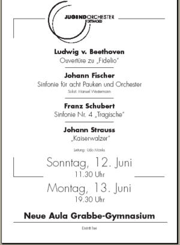
Anmerkungen
Sinfonie für acht obligate Pauken
Von Udo Mönks
Die zwei Pauken des klassischen Sinfonieorchesters, der Militärmusik entstammend und dort zu Pferde gespielt, sind im 18. Jh. in der Regel in Tonika- bzw. Dominant-Stimmung eingesetzt und werden zusammen mit den Bläsern für besondere klangliche Effekte herangezogen. Die Pauken besitzen somit harmonische Aufgaben. Um ein Instrumentalkonzert gestalten zu können, müssen die „melodischen“ Möglich-keiten wesentlich erweitert werden. Der Komponist Johann Carl Christian Fischer erreicht mit acht Pauken im Stimmumfang einer Oktave eine Balance zwischen Melodik und technischer Realisierbarkeit. Gemeinsam mit den Oboen oder auch solistisch, sogar mit einer eigenen Kadenz, setzt Fischer die Pauke als Melodieinstrument ein. Das Konzert eröffnet ein locker gefügter Moderato-Konzertsatz. Ein kurzes Adagio leitet in das Schlussrondo mit gegensätzlichen Abschnitten über. Der Komponist der vorliegenden „Sinfonia“ konnte erst vor wenigen Jahren weitgehend zweifelsfrei zugeordnet werden. Das Material wurde freundlicherweise von der Landesbibliothek in Schwerin zur Verfügung gestellt. Dass eine Aufführung mit acht Pauken selten ist, liegt wohl an der Kostenfrage, bedenkt man den Preis einer Konzertpauke. Wir danken der Hochschule für Musik, dass uns die Instrumente zur Verfügung gestellt wurden.
Schuberts "Tragische"
Wie bei seinen drei ersten Sinfonien weiß man auch bei Schuberts in den Jahren 1816-1818 entstandenen Sinfonien 4, 5 und 6 kaum etwas über ihre Entstehung. Skizzen oder Entwürfe zu diesen Werken sind nicht überliefert. Ebenso im Dunkel bleiben der genaue Anlass der Entstehung, sowie Ort und Datum der ersten Aufführung. Schubert datierte die Fertigstellung dieser Sinfonie auf den 27. April 1816 und fügte den Zusatz «Tragische» eigenhändig hinzu. Erst am 19. November 1849, also über 20 Jahre nach seinem Tod, wurde das Werk in der Leipziger Buchhändlerbörse unter der Leitung von Ferdinand Riccius das erste Mal öffentlich aufgeführt. Der Erstdruck der frühen Sinfonien Schuberts entstand unter der redaktionellen Aufsicht von Johannes Brahms im Jahr 1884.
Ihrer Form nach folgt die vierte Sinfonie den klassischen Mustern Haydns und Mozarts. So beginnt der erste Satz mit einer langsamen Einleitung, auf deren schwermütigen Charakter sich der Titel des Werkes beziehen könnte. Die Einleitung kommt mit einem zentralen musikalischen Gedanken aus, einer Lamento-Figur aus aufsteigender Mollsext und schmerzlich übermäßigem Sekundschritt. Das anschließende Thema des schnellen Hauptsatzes ist von großer Unruhe geprägt. Der zweite Satz (Andante) wurde in der Vergangenheit häufig wegen seiner Ausdehnung kritisiert. Über einem leisen Streicherteppich in As-Dur treten zunächst die Oboe, dann weitere Holzbläser hinzu. Zweimal bricht ein Moll-Mittelteil brutal in den friedlichen Ausdruck des Hauptthemas herein. Der dritte Satz in B-Dur ist zwar als Menuett bezeichnet, hat aber Scherzo-Charakter und verliert aufgrund der komplexen Chromatik den Eindruck einer Dur-Komposition. Der permanente Wechsel der Schwerpunkte gibt dem Satz einen spielerischen Charakter. Das Trio rückt schließlich die metrischen Verschiebungen wieder zurecht: Der Ländler im Dreivierteltakt erfüllt mit seiner schönen Melodie alle Klischees der Wiener Tanzmusik. Das Finale beginnt mit vier Bläsertakten, die den Charakter einer Eröffnungsfigur oder eines Auftaktes haben. Während das folgende eingängige Thema in c-Moll mit seinem drängenden Gestus charakteristisch für den gesamten Satz ist, überrascht das zweite Thema mit einem eigenartigen Wechselspiel zwischen Streichern und Bläsern über den bewegten Mittelstimmen, den zweiten Geigen und Bratschen. Nach der Durchführung endet das Werk, wie bereits der erste Satz, mit einem feierlichen Schluss in C-Dur.
Die Akteure
Flöte: Helen Dabringhaus (10m), Charlotte Rewitzer (12), Lisa Nahrwold (9m), Maresa Wendtland (9m) Oboe: Sibylle Schlevogt (L10), Alena Tamm (9m) Klarinette: Astrid Niebuhr (12), Benedikt Brenk (9m), Daniel Romberger (8m) Fagott: Eva-Maria Weiß (12), Kaja Strauß (G8)
Horn: Christian Dabringhaus (S13), Korbinian Riedl (11), Bonko Karadjov (11), Leonhard Fürst (12) Trompete: Julia Lober (8m), Karl M. Gehler (12), Nadine Hemminghaus (12) Posaune: Magnus Schröder (12), Daniel Böckenhoff (10m), TobiasLober (10m)
Pauken: Manuel Westermann (13)
Violine1: Benjamin Warlich (12), Kristina Bätge (9m), Dorothee Heining (9m), Maria Irrgang (9m), Aschot Kharatyan (10m), Tigran Kharatyan (9m), Maximilian Weiß (9m), Michael Ziethen (8m) Violine 2: Laura Ellermann (Abi04), Caroline Falk (12), Ruth Engel (12), Charlotte Höcker (8m), Nina Lanske (8m), Sascha Ludwig (S9), Ann Cathrin Roeske (8m), Nelly Schlaht (11), Tjorven Schröder(9m) Viola: Teresa Westermann (12), Katharina Güdemann(11), Julius Gunnemann (8m), Charlotte Höver (13), Nina Wilkenloh (S13) Cello: Nico Treutler (11), Benjamin Falk (S11), Frederic Gunnemann (10m), Ingrid Schlaht (13), Gereon Theis (8m), Jacob Warlich (7m) Kontrabass: Hendrik Müller (12), Arne Elias (9m), Christian Südfeld (11)
Manuel Westermann, 1985 in Bielefeld geboren, erhielt seinen ersten Schlagzeugunterricht im Alter von 9 Jahren bei Axel Knuth an der Musikschule Detmold. Seit 2002 ist er Jungstudent an der Kölner Hochschule für Musik, Abteilung Wuppertal und wird dort von Christian Roderburg betreut. Seit 9 Jahren ist er Mitglied des Detmolder Jugendorchesters.
2004 nahm Manuel am Wettbewerb „Jugend musiziert“ teil und erlangte einen 2. Preis auf Bundesebene in der Kategorie „Schlagzeug-Solo“. Als Folgeförderung dieses Wettbewerbs erhielt er ein Stipendium für die Teilnahme an der 1. Detmolder Sommerakademie unter der Leitung von Kurt Masur, bei der man ihm die Position des Solopaukers zuwies. Manuel wirkte unter anderem als Mitglied des „Landesjugendorchesters NRW“, des „Jungen Deutschen Klangforums“ und des „Bundesjugendorchesters“ (BJO) bei vielen bedeutenden Konzerten sowie verschiedenen CD-Produktionen, Rundfunk- und Fernsehaufnahmen mit. In diesem Sommer erwirbt er am Grabbe-Gymnasium sein Abitur.
Presse-Echo
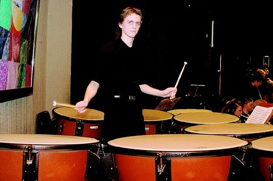
Gute Musik - nicht des Geldes wegen
Jugendorchester Detmold spielte im Grabbe-Gymnasium
Detmold (aga). Mit Franz Schuberts ,,Tragischer" hatte das Jugendorchester Detmold eine Sinfonie in sein Konzertprogramm aufgenommen, deren Titel nicht besser passen konnte. Zwar ist über die Hintergründe der Entstehung des Werkes recht wenig bekannt, aber die aktuelle finanzielle Situation des Orchesters und deren Entstehung kennzeichnet der Titel nur zu gut. Davon ließen sich die jungen Musiker in der Aula des Grabbe-Gymnasiums aber nichts anmerken. "Wir geben dieses Konzert der Musik wegen. Wir tun dieses, um Ihnen ein Hörvergnügen zu bereiten", kündigte Orchesterleiter Udo Mönks den mehr als 300 Gästen an. Dabei gehe es nicht in erster Linie um Geld, auch wenn das Orchester diese Auftritte nutze, den wirtschaftlichen Tiefschlag zu lindern. Anfang Mai waren dem Orchester zwei Tage vor der geplanten Reise zum befreundeten Orchester der McLean High School in Washington die Tickets von der Fluggesellschaft verweigert worden. Das betreuende Reisebüro hatte das Wochen zuvor eingezahlte Geld nicht an die Airline überwiesen. Der Fall beschäftigt nun die Justiz. Sponsoren waren kurzerhand eingesprungen, um die lange geplante Reise des Jugendorchesters dennoch zu ermöglichen. Nun sind die Musiker aus den Staaten zurück, das Orchester ist allerdings hoch verschuldet. Nicht mit Pauken und Trompeten untergehen, sondern, in diesem Fall besonders mit Pauken, die Misere überwinden. Bei der Sinfonie für acht Pauken und Orchester von Johann Fischer stand Solist Manuel Westermann, umringt von seinen Instrumenten, im Mittelpunkt. Mitreißend, was der Jungstudent der Kölner Hochschule für Musik in Köln auf seinen acht Kesselpauken veranstaltete. Stürmischer Applaus begleitete den Paukisten sowie den dieses Stück dirigierenden Studenten Viacheslav Zaharov von der Bühne. Das Publikum forderte noch vor der Pause eine sofortige Zugabe. Die erfüllte der 20-jährige Westermann, der im Sommer am Grabbe-Gymnasium sein Abitur erwirbt, auch prompt. "When the saints go marchin' in" erklang es plötzlich. Das Stück, allein von den acht Pauken intoniert, war schon ein besonderer Hörgenuss. Für den Auftakt hatte das Jugendorchester die vor allem zu Beginn für die Hörner sehr anspruchsvolle Ouvertüre zu Beethovens "Fidelio" gewählt. Mit dem "Kaiserwalzer" von Johann Strauß sorgte es darüber hinaus für einen beschwingten Abschluss. Die Idee einer Pausentombola hatten sich die jungen Musiker bei den Kollegen in den Vereinigten Staaten abgeschaut. Hauptgewinn war hier ein MP3-Player. Der Erlös dieser Tombola sowie des Getränkeverkaufs soll dazu beitragen helfen, die finanzielle Lage des Orchesters allmählich wieder etwas zu entspannen. LZ vom 15. Juni 2005
In Geldnot
Das Detmolder Jugendorchester braucht Geld, um Schulden zu begleichen. Die jungen Musiker haben so richtig viel Pech gehabt: Das Reisebüro, das den Flug für den geplanten Amerika-Trip mit Besuch der amerikanischen McLean Partner-High-School organisieren sollte, hat das eingezahlte Geld nicht an die Fluggesellschaft weitergeleitet oder in einen falschen Kanal gelenkt. Am Montag vor dem Abflug rief Iceland-Air an und teilte mit, es gebe keine Flugtickets, weil bei ihnen kein Geld eingegangen sei. Den Reisepreis von rund 28.000 Euro hatte Herr Mönks vier Wochen vorher bereits auf das Konto des Reisebüros eingezahlt. Das Projekt wäre deshalb fast ins Wasser gefallen, hätten nicht Sponsoren und ein großzügiger Kredit die Unternehmung gerettet. Nun stehen die Musiker vor der Aufgabe, das Geld für die Rückzahlung von rund 8000 Euro aufzubringen. Sie sehen eine gute Chance, das zu schaffen: mit ihrem musikalischen Können, das sie in den kommenden Wochen mit interessanten Konzerten einem großen Publikum anbieten. Zwei solcher Events stehen kurz bevor. Inzwischen ist der Vertragspartner der Amerika-Reise wieder in sein Office zurückgekehrt, nachdem er für die Grabbianer wochenlang unerreichbar gewesen ist. Ein Versuch, den eingezahlten Reisebetrag auf dem Weg gütlicher Einigung zurückzuholen, ist dem Vernehmen nach gescheitert. Die Schule muss nun versuchen, sich das Geld mit einem Antwalt zurückzuholen. Sie wirft dem Reisebüro betrügerisches Handeln vor, wenn das zuviel gezahlte Geld nicht zurücküberwiesen wird.
Einstimmung auf Weihnachten
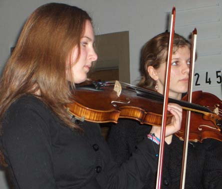
Von Walter Hunger (Text) und Lisa Korte (Fotos)
Verdienten Beifall ernteten Chöre und Orchester für ihre weihnachtlichen Konzerte in der Stadtkirche Horn und in der Martin-Luther-Kirche in Detmold. Das ansprechende Programm bot weihnachtliche Musik der Komponisten Buxtehude, Telemann, Bach, Corelli und Kretschmar. Unter der Leitung von Hanne Sentker, Wilhelm Michael und Udo Mönks musizierten Solisten und Ensemble engagiert, gekonnt und überzeugend.
Detmold. Über Schule lässt sich streiten: Schule befindet sich im unauflöslichen Widerspruch, Leistung zu fordern und gleichzeitig einen geschützten Raum bieten zu müssen. Beides geht nicht zusammen. Das Grabbe setzt da sogar noch einen drauf: Mit dem Anspruch, ein musisches Gymnasium zu sein, steht es latent im Wind einer Diskussion, der je nach Maßstab heftig wehen kann. Was also soll, kann und darf die Rezension eines Weihnachtskonzertes?
Weihnachten - Zeit der Zuwendung, Versöhnung, Vergebung. Wichtige Motive eines familiären Gefühls, das bis in die Schule hineinströmt. Nicht zuletzt deshalb sind Weihnachtskonzerte der Schulen Akte der Selbstspiegelung im Lichte der Freude und der Anerkennung und eben kein Anlass, über Maßstäbe zu diskutieren. Zu würdigen ist insbesondere, dass die Musiklehrer Hanne Sentker, Wilhelm Michael und Udo Mönks ein zweistündiges Programm mit so anspruchsvollen Kompositionen wie dem Concerto grosso Nr.8 von Arcangelo Corelli oder der Kantate "Kommst du, Licht der Heiden" von Dietrich Buxtehude einstudiert zu haben. Und welches lippische Gymnasium verfügt schon über einen vollständigen Streichersatz und kann zudem in Tigran und Ashot Karatyan (beide Geige) sowie Nico Treutler (Cello) drei Solisten für das Corelli-Konzerten aufbieten?
Anmutiger Unterstufenchor
Tigran hinterließ dabei einen besonders nachhaltigen Eindruck. Sandra Botor und Martin Wiese nahmen sich ihrer gesangssolistischen Aufgaben in Telemanns Weihnachtskantate "In dulci jubilo" mit viel Verve an und dokumentierten viel musikalisches Potential.
Die Auswahl der vier kleinen geistlichen Kantaten von Günther Kretzschmar schließlich bot dem Unterstufenchor Gelegenheit, sich mit dem an englische Folklore anlehnenden Klangbild sehr anmutig in Szene zu setzen. Die Akteure von der Unterstufe bis zu dem um Eltern und Lehrer erweiterten Chor sowie das Schulorchester in der vollen Martin-Luther-Kirche haben langen Applaus für das ihr Publikum in weiten Teilen berührende Erlebnis geerntet.
Eine Diskussion könnte an Intonationsfragen und an Fragen der engagierten Präsenz jeder einzelnen Sängerin und jedes einzelnen Sängers ansetzen. Wer hier Außergewöhnliches zu entwickeln vermag, kann Musik so zum Klingen bringen, dass diese, über eine familiäre Wirkung hinaus, vorbildlichen Eindruck macht. Wer sich die Musik auf seine Fahnen geschrieben hat, der darf sich eigentlich mit dem Üblichen, das natürlich schön ist, nicht zufrieden geben.
von Hajo Gärtner (Text) & Sabine Hilbert-Opitz (Fotos)
Die musikalische Ernte ist kolossal: Die amerikanischen Freunde haben das gemeinsame Konzert von DJO und MLHSO ins Netz gestellt. Komplette 90 Minuten. So können die in Deutschland zurückgebliebenen Freunde, Eltern, Großeltern, Onkel, Tanten und Sponsoren der Reise dieses Highlight nacherleben. Eine umfangreiche Fotostrecke bietet einen umfassenden Einblick in die Aspektvielfalt der freundschaftlichen Begegnung. Zusammensein (»be together«) ist schön. Aber »wunderbar together« ist mehr: ein Erlebnis. Das stellten die 39 USA-Reisenden vom Detmolder Jugend-Orchester (DJO) fest. Zusammen mit dem befreundeten McLean High School Orchestra (MLHSO), das seit mehr als 20 Jahren eine Partnerschaft mit dem Detmolder Ensemble unterhält, erlebten sie Musik auf eine besonders intensive Weise. Sie übten das gemeinsame Konzert ein und führten es erfolgreich auf: Dieses Mal in der German International School und der McLean High School in Washington.
Das Besondere dieser Reise: Sie fand im Deutschlandjahr statt (die Amerikaner feiern jedes Jahr ein spezielles Nationenjahr). Deshalb durften die deutschen Gäste das Weiße Haus besuchen und den Kongress; politisch exponierte Gebäude, die normalerweise nur amerikanischen Bürgern zugänglich sind. Chorleiter Florian Wessel voller Begeisterung: »Wir danken noch einmal ausdrücklich den Förderern dieser Reise von ganzem Herzen.« Die jungen Musiker hatten einen Videoclip hergestellt unter dem Motto: »Wir freuen uns auf Amerika«, den wir an dieser Stelle gern zeigen. Aber ein ganz besonderes Schmankerl ist wohl der komplette Konzertmitschnitt in akustisch hervorragender Qualität.
Voller Freude begrüßen wir unsere Gäste aus Washington D.C. Gemeinsam werden das Streichorchester aus McLean und das Detmolder Jugendorchester am 31.01.2018 um 19:30 Uhr in der Neuen Aula des Grabbe-Gymnasiums ein Konzert geben. Ich leite das Konzert zusammen mit Starlet Smith.
Anhand berühmter Melodien aus Bizets komischen Oper „Carmen“ werden wir dem Publikum einen dramatischen, berauschenden und zugleich tragischen Abend darbieten, der die Personen dieser Oper in Orchesterklängen musikalisch lebendig werden lässt.
Die Orchester spielen zusammen die erste und zweite Carmensuite von Georges Bizet und das Programm wird vervollständigt durch die Carmenfantasie für Violine und Orchester, gespielt von Gina Keiko Friesicke, welche die bekannten Melodien mit Ausdeutungen und einer virtuosen Konnotation ergänzt.
Die Orchester dürfen unter der Schirmherrschaft von Jürgen Hardt, Bundestagsmitglied und Koordinator für die transatlantische Zusammenarbeit des Auswärtigen Amtes, zusammen nach Berlin reisen und werden dort in der John-F.-Kennedy-Schule ein weiteres Konzert geben. Der Austausch wird dankenswerter Weise von der Jeunesses musicales Deutschland maßgeblich gefördert.
Bericht im Fernsehen
Aktuelle Stunde des WDR vom 30.1.2018 (Mitschnitt) [ in Arbeit ] =>
GMD Lutz Rademacher probt mit dem Austauschorchester im Grabbe
Von Florian Wessel (Text & Fotos)
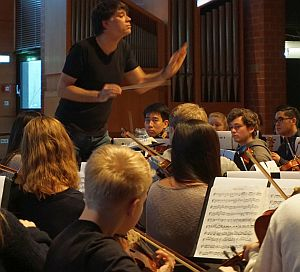
Nach einem erfolgreichen Start der Proben des Programms mit den amerikanischen Freunden und der weggeschlafenen Müdigkeit vom Samstag hatten wir musikalisch hohen Besuch im Grabbe-Gymnasium. GMD Lutz Rademacher probte eine intensive Stunde mit den Jugendlichen des 80-köpfigen Austauschorchesters in der Neuen Aula des Gymnasiums. Aufmerksam und konzentriert folgten die Musiker seinem inspirierenden Dirigat und konnten so ihr Orchesterspiel vervollkommnen. Wir danken für diese tolle Probe! Im Anschluss daran trainierten die Instrumentalisten in ihren Stimmgruppen unter Anleitung von erfahrenen Orchestermusikern des Landestheaters Detmold ihre Orchesterstimmen. Auch diesen fleißigen Helfern, die uns immer wieder neue Anregungen und Inspirationen geben, danken wir an dieser Stelle von ganzem Herzen. Die professionelle Anleitung ermöglicht uns, unsere volle Leistung abzurufen und über uns hinauszuwachsen. Wir freuen uns auf weitere Proben und erinnern an dieser Stelle an die beiden bevorstehenden Konzerte: Mittwoch, 20.01.2016, um 19:30 Uhr im Augustinum Detmold und am Donnerstag, 21.01.2016, um 19:30 Uhr in der Neue Aula des Grabbe-Gymnasiums
Das Streichorchester der McLEAN HIGH SCHOOL kommt wieder nach Detmold
Am Samstag ist es so weit und unser befreundetes Streichorchester aus Washington D.C., das McLean High School Orchestra kommt zum Gegenbesuch nach Detmold. Voller Vorfreude auf unsere amerikanischen Mitspieler proben wir im Detmolder Jugendorchester schon das vorwiegend romantische Programm. Neben Beethovens Egmont Ouvertüre und Mendelssohns Violinkonzert in e-Moll wird als Hauptwerk in unseren beiden Konzerten Dvoraks 8. Symphonie erklingen. Als Solistin wird Rachelle Betancourt mit uns spielen, die in ihrer eigenen Schulzeit als Mitglied des McLean High School Orchestra in Detmold zu Besuch war und heute im Radio-Sinfonie-Orchester Frankfurt spielt. Geleitet werden die Konzerte von Starlet Smith, der Dirigentin des MHSO, und Florian Wessel, der im letzten Sommer die Leitung des DJOs von Udo Mönks übernommen hat. Die Idee eines Austauschs zwischen dem Orchester der McLean High School in Washington D.C. und dem Detmolder Jugendorchester entstand 1994, als das MHSO auf einer Konzertreise in Detmold gastierte. 1998 folgte ein weiterer Besuch der Amerikaner, dieses Mal, um ein gemeinsames Konzert mit dem DJO zu geben. Seit mehr als 20 Jahren wird der Austausch nun fortgeführt und hat durch die dichte Folge der Begegnungen viele Kontakte und andauernde Freundschaften hervorgebracht. Das Detmolder Jugendorchester und seine amerikanischen Freunde laden alle herzlich zu den beiden Konzerten ein! Mittwoch, 20.01.2016, um 19:30 Uhr im Saal des Augustinums Detmold (Römerweg 9, 32760 Detmold), und am Donnerstag, 21.01., um 19:30 Uhr in der Neuen AULA des Grabbe-Gymnasiums. Der Eintritt zu beiden Konzerten ist frei.
Das Detmolder Jugendorchester (DJO) ist zu Gast beim McLean High School Orchestra (MSHO). Steven Förster berichtet in Text und Bild über die Begegnung. Hier seine Chronik; die Fotos präsentiert Grabbe Online als Bildergalerie auf BiD-OWL.
Tag 1
Unser Grabbe auf großer Fahrt. Zumindest für 45 Schülerinnen und Schüler startete heute die Reise in Richtung Amerika. Beginnend mit einem Bustransfer gen Amsterdam - bei dem der Busfahrer seine innige Liebe zum SC Paderborn in einer Endlosschleife wiederholte - ging es nach anfänglichen Schwierigkeiten beim Einchecken in die berühmte Polonaise der Gepäckabgabe. Hier bietet es sich wirklich an, eine Lehrkraft zu sein, denn schwuppdiwupp kann man bei derart langen Warteschlangen ein paar Plätze gut machen. Und nach dem langen Stehen kam das lange Sitzen, 8 1/2 Stunden. Damit uns die Zeit nicht lang wurde, gab es einige aufheiternde Spiele. Vor allem das ,,Fotografiere den schlafenden Lehrer" wurde quasi zum Volkssport erhoben - leider wurden meine aufgenommenen Bilder aufgrund persönlicher Verbindungen in voreiligem Gehorsam gleich wieder gelöscht. Und nach dem Sitzen kam wieder das Stehen - unterbrochen von einem als Entengang anmutenden Stop-and-Go bei der Einreisekontrolle. 2 Stunden später waren wir schon durch ... Aber nicht nur wir, sondern gleichsam auch ein ungebetener Gast auf dem amerikanischen Staatsgebiet. Wir hatten einen Apfel mit, quasi als illegalen Einwanderer, der leider nicht mehr zeitnah vertilgt werden konnte - und da dieser nicht weit vom Stamm fällt, wurde auch gleich die damit erwischte Schülerin belehrt. So waren wir froh, keine Pauke mitgenommen zu haben, denn wir bekamen zumindest eine sehr umfangreiche und in ihrer Formulierung auch sehr nachdrücklich wirkende Standpauke umsonst geliefert. Tiefes Durchatmen, als wir aus dem Flughafen mit guter Laune, aber ohne Apfel unseres Weges gehen konnten. Doch bei eben diesem ersten Atemzug nahmen wir auch gleich die enorme Luftfeuchtigkeit wahr. Nach drei bis vier weiteren Atemzügen saßen wir schon im Bus und fuhren in Richtung der McLean Highschool. Und was sahen wir da für eine Freude - vergleichbar in seiner Ekstase wohl einzig mit der Ankunft der deutschen Fußballnationalmannschaft nach ihrem wohl mehr als verdienten Sieg in der Weltmeisterschaft des Vorjahres. Es wurde umarmt, es wurde geherzt und schon wurde auch gehetzt - und zwar zur ersten Probe. Total übermüdet war es ungemein schwer, sich zu konzentrieren, sich zu fokussieren und aufrecht zu sitzen ... Doch wie muss es erst für die Schülerinnen und Schüler gewesen sein?
Tag 2
Aufwachen und sich noch einmal im Bett umdrehen ... All dies ist möglich, denn der heutige Tag begann etwas später. Was wie ein Traum klingt, wird hier im Land der unbegrenzten Möglichkeiten Realität. Erst gegen 8.45 Uhr Ortszeit mussten wir am Schulgebäude aufschlagen um uns dann stilecht mit einem gelben Schulbus uns Richtung Innenstadt zu bewegen. Zunächst stand der Besuch des Kennedy-Centers auf der Agenda - ein unglaublich kostbar ausgestatteter Komplex für Theateraufführungen und Opern. Wir konnten nicht nur außergewöhnliche Kunstwerke betrachten, sondern auch einen entzückten Blick in die Logen des Präsidenten werfen ...Hier sitzt also Mr. Obama und lauscht den künstlerischen Ergüssen der ,,freien Welt". Bei der Führung wurde eine Ausführung unseres Guide zur Endlosschleife: KEINE FOTOS VON DER BÜHNE ... COPYRIGHT! Eine Ansage, die in ihrer Nachdrücklichkeit und Artikulation sicherlich auch vom Sicherheitspersonal des Weißen Hauses hätte gegeben werden können. Umso aufgeregter wanderten unsere Blicke auf der ominösen Bühne und sahen: nichts. Aber wohl ein Nichts mit Copyright. Selbst eine komplett leere Bühne hat hier als Kunstwerk zu gelten ... Wir waren alle sehr sehr beeindruckt. Danach ging es spazierend bei 29 bis 30 Grad in Richtung Georgetown. Entlang des Potomac-River flanierten wir nicht nur in die eine und andere Lokalität, auch die ersten Geschäfte zur Ankurbelung der amerikanischen Wirtschaft wurden von uns beehrt. Die sich anschließende Probe wurde von unseren Schülern noch zur Übermittlung von Eindrücken genutzt, denn ohne es auch nur im Entferntesten zu ahnen, nutzen einige von ihnen die Pausen ihres Einsatzes um - ich traue mich gar nicht, dies mitzuteilen - um am HANDY rumzudaddeln. Dies wird sicherlich in den nächsten Tagen ein auslaufendes Phänomen darstellen - hoffe ich zumindest.
Tag 3
Tag 3 - der Familientag. Und bemerkenswert ist vor allem die flächendeckende Rückmeldung, dass sich dies (fast) wie die eigene Familie anfühlt. Eine solche Herzlichkeit ist wirklich überwältigend und nicht als selbstverständlich zu betrachten. Für mich ging es zunächst in ein wundervoll anmutenden chinesisches Restaurant. Die Möglichkeit alles probieren zu können, was man will (oder was die Gasteltern wollen), führte uns durch ein Potpourie von delikat zubereiteten Hühnerfüßen und Dingen, die ich gerade noch als Mägen übersetzen konnte - allerdings wollte ich danach gar nicht mehr das genaue Tier hierzu in Erfahrung bringen. Mit einem stets nachgeschenkten Grünen Tee war dies aber zumindest sättigend. Und schon ging es weiter zum Space-Museum. Eine wirklich riesig anmutende Flugzeughalle, in der nicht nur ein Stealth-Bomber zu sehen war (oder eben gerade nicht, der war aber auch sowas von gut getarnt). Neben einem Spaceshuttle erblickten wir auch die ,,Elona Gay". Der geneigte Historiker unter uns wird sicherlich mit diesem Namen etwas anfangen können... Doch der Besucher des Museums musste wohl durchaus über ein gehöriges Vorwissen verfügen, denn anscheinend war auf der Erklärungstafel kein Platz mehr, um die Folgen des ersten Atombombenabwurfes auch nur mit einem Halbsatz zu erwähnen, nun ja, auch in Amerika muss wohl gespart werden.
Tag 4
Tag 4 - ein Tag für die Vergegenwärtigung der äußerst interessanten Landesgeschichte. Nach einem reichhaltigen Frühstück führte uns der Weg zunächst in den hiesigen Deutsch-Unterricht. Unsere Schülerinnen und Schüler konnten punktuell eine große Bereicherung für die Deutschlehrer darstellen und waren doch gleichsam etwas überrascht, dass hier in den Stunden nicht nur Handys und Laptops erlaubt sind, sondern ebenso ein beherzter Biss ins Pausenbrot (das hier wohl dann Stundenbrot heißt) sowie ein kühner Zug aus dem mitgebrachten Wasserfläschchen widerspruchslos hingenommen wurde. Nach diesen durchaus neuen Erfahrungen ging es endlich in die Innenstadt zum langersehnten Fahrradausflug quer durch 120 Jahre Denkmalgeschichte. Es gibt anscheinend keinen besseren Weg durch Washington zu reisen, obschon etwas mehr Vorbereitung unsererseits sinnvoll gewesen wäre. Denn was fehlte, sahen wir am Ende unseres Ausflugs... Einige durften nicht nur spannende Eindrücke mitnehmen, sondern überdies auch einen gehörigen Sonnenbrand. Wenigstens können wir so für die Daheimgebliebenen nachweisen, dass wir in einer der heißesten Hauptstädte der nördlichen Hemisphäre waren. Nach einem kurzen Lunch ging es dann wieder in den Probenteil über. Um uns das Gefühl des Vormittags zu bewahren, wurde im Auditorium anscheinend die Klimaanlage ausgestellt - oder lag das Schwitzen vielleicht an den überaus gekonnten vorgebrachten Übungsteilen? Wer weiß ...
Tag 5
Morgenstund hat nicht nur Gold im Mund, sondern auch im Ohr. Und dieses Gold bekam heute, anmutend wirkend, aus den Instrumenten des kompletten Orchesters unser Geburtstagskind Udo Mönks zum 65. Ehrentag. Mit einem so freudigen Anlass übt es sich doch gleich noch begeisternder. Nach einigen lobenden Worten von Seiten der Orchesterleitung schienen die Schülerinnen und Schüler gleich ein gehöriges Stück größer zu wirken - vielleicht liegt dies aber auch an den zwischenzeitlich aufgebauten Podesten im hinteren Teil der Aula-Bühne. Folglich ist nicht nur der visuelle Eindruck noch imposanter wirkend, sondern gleichsam auch der außergewöhnliche Klang. Nach diesen Proben ging es via Schulbus erneut in die Innenstadt. Auf der Agenda stand diesmal das im neoklassizistischen Stil gehaltene Gebäude der ,,National Gallery of Art" - einen unglaublichen Kunstschatz beherbergend. Wir ließen Zeit und Raum hinter uns, tauchten zunächst in die frühe Renaissance aus Florenz ein (1420-1470), um abschließend bei Meisterwerken der amerikanischen Landschaftsmalerei des 19. Jahrhunderts anzukommen. Auf unserem Rundgang sahen wir mit Pinseln erschaffene Welten, gingen vorbei an den wahren Meistern einer 500jährigen Kunstgeschichte. Beginnend mit Werken von Filippo Lippi, Leonardo da Vincis ,,Ginevra de' Benci", Bellini und Titians ,,The feast of the gods" führte unser Weg durch Peter Paul Rubens Kunstschätze des Holländischen Barock. Über Rembrandt, Peter Claesz, Jan Weenix sowie Eduard Manet zogen uns abschließend die Werke von Gilbert Stuart und Thomas Cole's ,,Voyage of Life" aus dem Jahre 1842 in ihren Bann. Ein unglaublicher Gewinn für alle Teilnehmer dieses Austausches - das Leuchten in den Augen unserer Schüler wird noch sehr lange anhalten. Nach zwei Stunden der freien Museenauswahl ging es dann per Metro ins alte Feuerwehrhaus zum gemeinsamen Abendessen. Kulinarische Höhepunkte aus Amerika, aus Asien und aus Mexiko umspielten unseren Gaumen und stärkten uns für die letzte Probenrunde ab 19.30 Uhr. Wir sind alle sehr müde, aber auch sehr dankbar, Teil dieses wundervollen Austausches sein zu dürfen.
Tag 6
Nach erneut sehr ehrgeizigen Versuchen, den Deutschunterricht als obligatorisches Fach an der McLean Highschool zu etablieren, kamen unsere Schülerinnen und Schüler direkt aus den Klassenräumen in unseren schon wohlbekannten gelben Schulbus. Vorbei an einigen Monuments wurden nochmals einige durchaus spannende Fragen gestellt. Warum ist zum Beispiel das sehr eindrucksvolle Memorial von Martin Luther King Jr. (auf dem er in Überlebensgröße steht) gerade in weißem und nicht in schwarzem Stein gemeißelt, hm ... Selbst unser Guide konnte dies nicht adhoc erklären (liegt wohl an den höheren Kontrastwerten und dem Schattenwurf bei veränderter Sonnenstellung). Diesmal führte uns das ambitionierte Programm ins National Museum of the American Indians, wobei hier nicht nur die Geschichte und Kultur der nordamerikanischen Ureinwohner eindrucksvoll dargestellt wurde, sondern ebenso die südamerikanischen Völker eine breite Würdigung erfuhren. Nach einem Spaziergang zum Capitol ging es erneut zum Museum, um die Spezialitäten der native americans zu kosten. Etwaige Kommunikationsschwierigkeiten bei den Treffpunkten gab es heute erfreulicherweise nicht. Somit konnten alle Teilnehmer unseres Austausches geschlossen zur Highschool fahren und nicht der eine oder andere Lehrer, als letztes Aufgebot wartend, einen deutlich verlängerten Aufenthalt im Stadtzentrum verleben. Abends wurde geprobt, geübt, verbessert, perfektioniert und alles noch einmal durchgespielt. Gerade die unterschiedlichen Stile und individuellen Besonderheiten unserer drei Dirigenten - Starlet Smith, Udo Mönks und Florian Wessel - bringen eine so wunderbare Melange mit sich, dass wir das morgige Konzert kaum erwarten können.
Tag 7
Das gestrige Abendessen wurde individuell in der Stadt eingenommen, was auch zu sehr individuellen Gesichtsausdrücken - gut eine Stunde nach Essenaufnahme - führte. Strahlten einige Schüler mit gesättigten Mägen um die Wette, konnten andere den strahlenden Inhalt Ihrer Mägen erneut in Augenschein nehmen. Doch mit ein bisschen Frischluft, einem beherzten Fluch in Richtung der unterschiedlichen Gastronomien und dem Bewusstsein, sich für das Orchester auch mit flauem Magen durchzubeißen, wurde heute Vormittag die letzte Probe angesetzt. Zur Ablenkung gab es ab 12 Uhr die Gelegenheit für eine weitere Ankurbelung der US-Wirtschaft. In der zwölftgrößten Mall der USA, mit mehr als 200.000 Quadratmeter Verkaufsfläche, fanden wir mehr als 300 Geschäfte vor. Einige Neuverhandlungen mit den heimischen Taschengeld-Finanziers werden wohl nach unserer Rückreise auf der Agenda stehen. Hier kann man arm werden, aber nur, falls man es vorher noch nicht war. Die Zeit verrann in diesem Konsumtempel und unser Konzert kam Stück für Stück näher... dann war es endlich soweit... der Höhepunkt unserer Reise... der Saal füllt sich und das Licht wird immer schwächer... das Orchester kommt, das Dirigententrio ist vor Ort, die knisternde Spannung ist allgegenwärtig - die ersten Noten erklingen und in diesem Moment befindet man sich bereits mitten in dem Strudel der hörbaren Impressionen. Mitgerissen, ja fortgerissen, getragen in Sphären jenseits des Alltages. Es ist wie ein Urlaub für die Seele, ein Auftanken in der stressigen Welt, ein Durchatmen bei aller Schnelllebigkeit der Gegenwart. Zwischen Bach und Offenbach war das Publikum offen für neue klangliche Bäche, Flüsse, Ströme und Meere - eine derartige Euphorie nach einem Konzert habe ich bislang noch nirgendwo gesehen. Der schier endlos erklingende Applaus wollte nicht abebben und der Wunsch, das Konzert sofort wieder beginnen zu lassen, war mehr als nur greifbar. Eine tiefe Freundschaft entwickelt sich durch unsere Musik - ein Verständnis für den Anderen und erneut eine überwältigende Dankbarkeit, ein kleiner Teil dieses äußerst wertvollen Projektes sein zu dürfen.
Tag 8
Wir freuten uns auf deutsche Brötchen, Kaffee aus der Heimat und wohlbekannte Geschmacksrichtungen beider Marmelade ... und bekamen in der deutschen Botschaft ein typisch amerikanisches Frühstück. Auf deutschem Boden zu sein provozierte natürlich gleich die Frage, ob hier die Erlaubnis, Alkohol zu konsumieren, wieder von 21 auf 18 Jahre gesenkt wird - wir ignorierten geflissentlich diese Frage, da uns eine etwaige Umsetzung einfach unvorstellbar erschien. Spannende Fakten wurden uns hier präsentiert. Bei einer jährlichen Umfrage nach der Beliebtheit in 20 Ländern konnte Deutschland zum vierten Mal in Folge den zweiten Rang erringen. Deutschland wird besonders als glaubwürdiges, stabiles und innovatives Partnerland betrachtet. Als Nachteil wurde die geringe Willkommenskultur erwähnt, ebenso die diagnostizierten Eigenschaften, dass Deutsche kühl und nüchtern seien. Dies ist bei den teilweise tropischen Temperaturen aber durchaus als erfreulich zu betrachten und auch wir sind sehr dankbar, dass unsere Schüler hier die ganze Zeit nüchtern sind! Weiter ging es mit dem Bus nach Chinatown und zum German-American-Heritage-Museum. Seit 1607 sind mehr als 7 Millionen Deutsche nach Nordamerika ausgewandert. Nach einer Reise von mehr als 4 bis 6 Monaten versuchten diese ihr Glück im Land der unbegrenzten Möglichkeiten zu finden. Wir hörten sehr interessante Fakten bezüglich der Deutschen in den USA. So wurde die Unabhängigkeitserklärung bereits einen Tag vor der eigentlichen Bekanntgabe in Deutsch formuliert. Ebenso waren eingewanderte Deutsche involviert im Bürgerkrieg, zu 90 Prozent auf der Seite der Nordstaaten kämpfend. Sehr interessant waren auch die Tatsachen, dass im Jahr 1900 New York die Stadt war, in der nach Berlin und Wien die meisten Menschen Deutsch sprachen und dass die Begrifflichkeit Dollar vom deutschen Wort Taler entlehnt ist. Eine Schnitzeljagd durch das Museum rundete diesen Programmpunkt ab. Danach gab es zwar kein Schnitzel, aber erneut ein leckeres Mittagessen, diesmal neben dem Verizon-Center, der Heimstätte des lokalen Eishockey und Basketballteams. Und schon ging es Schlag auf Schlag weiter... diesmal beim Baseball. Bevor das Spiel begann, durften wir ,,Detmolder Jugendorchester" auf der Anzeigetafel lesen ... was für eine coole Geschichte! Und es begann wirklich spannend - ohne genaue Regeln zu kennen, klatschten wir mit unseren amerikanischen Familien. Und bei unglücklichen Entscheidungen versuchten wir ein paar Tränchen zu quetschen. Interessant war vor allem die Pausengestaltung. Eigentlich hätte es schon weiter gehen können, aber im live übertragenden Fernsehen war die Werbung noch nicht vorbei. Also wartete das ganze Stadion - sensationell. Ab dem dritten Inning war unsere Aufmerksamkeit erloschen. Wir konzentrieren uns danach nur noch auf die atemberaubende Konstruktion des Stadions. Als wir um halb 10 auf die Uhr schauten, war es erst viertel vor 9!
Viel zu schnell ist die gemeinsame Zeit von MHSO und DJO hier in Detmold vergangen. Es war eine intensive Woche - voll mit ganz viel Musik, Proben und einem umfangreichen Programm: Stadtführung, Empfang beim Bürgermeister, Schlossbesichtigung, Besuch des Geigenbauers (Danke, Herr Weiken), Besuch des Erich-Thienhaus-Instituts der HfM mit Vorführung der Wellenfeldsynthese (Danke, Professor Kob), Besuch des Instrumentenmuseums in der Burg Sternberg (Danke, Herr Waidosch), Theaterführung, Fahrt nach Münster..... Wie Ms Smith im Konzert hervorhob, war das gemeinsam erarbeitete Programm für ein Schülerorchester sehr anspruchsvoll ( "not High School but University level" ). Umso erfreulicher war es, zu erleben, wie sich die musikalische Qualität von der ersten Probe bis hin zum zweiten Konzert kontinuierlich steigerte und die gemeinsame Arbeit in zwei ganz tolle, vom Publikum begeistert aufgenommene Konzerte mündete. Als Dank und als Zeichen der Verbundenheit überreichte der Schulleiter des Grabbe- Gymnasiums, Herr Klapproth, den für diesen Anlass neu geschaffenen ’Grabbe Pokal’ an die Dirigentin des McLean High School Orchestras, Ms Starlet Smith. Danach wurde stilvoll zu "Royal Sec" angestoßen. Höhepunkt des Freizeitprogramms war ein ,,zauberhafter" Abend im Hangar. Jens Heuwinkel hatte keine Mühe gescheut und ein großartiges Team von Tutoren für Einrad- und Jonglage zusammengestellt, darunter einige am Grabbe bekannte Gesichter (schön Euch mal wiederzusehen!) aber auch zwei Einradprofis aus England und Kanada, die extra für uns nach Detmold gekommen waren! Der Abend begann mit einer tollen Show, in der die Profis ihr Können vorführten – und die Freiwilligen, über die gesprungen wurde, Nerven beweisen mussten. Dann waren alle eingeladen, sich selbst zu erproben. Die Stimmung war die ganze Woche lang unheimlich gut. Wachsende Müdigkeit wurde einfach ignoriert, Spaß gab verbrauchte Energie wieder zurück. Schnell wuchsen Kontakte und Freundschaften, die abendlichen ’Nebentätigkeiten’ waren zudem ein für amerikanische Jugendliche gänzlich ungewohntes Vergnügen.
Zurück bleiben viele schöne Erinnerungen, Freundschaften und Dankbarkeit. Thank you all: Starlet Smith, Gretta Sandberg, MHSO students and chaperones for being such wonderful guests and friends!! Die Jugendlichen haben die Bedeutung dieser langjährigen Orchesterpartnerschaft so zusammengefasst :
MHSO & DJO best friends forever
Phil Rosenfelt, langjähriger Begleiter dieses Austauschs, schreibt:
We are home safely after nine days of the wonderful exchange visit of the McLean High School Orchestra to the Detmolder Jugendorchester from the Christian-Dietrich-Grabbe-Gymnasium in Detmold. The hosts were incredible, the tours were very educational, and the music was magnificent--Bizet, Gilbert and Sullivan, Dvorak, Herbert, and Mendelsohn. It has been twenty years of incredible relationships, great music, and a chance to make the world a smaller and friendlier place. We hope for many, more more years of a terrific cultural exchange program!
Music's so wonderful
MHSO & DJO - 20 Years of Making Music together!
Von Tilman Coers
Eine wunderbare Austauschwoche des Detmolder Jugendorchesters mit dem McLean Highschool Orchestra liegt hinter allen Beteiligten. Eine Woche voller Musik, voller Freunschaft, voller abwechslungsreicher Erlebnisse, voller Erfolge. Ja, tatsächlich war die Woche sehr „voll“ und ging trotzdem viel zu schnell zuende.
Samstag
Gestern ist die Delegation des McLean Highschool Orchestras angekommen, zwar erschöpft und müde aufgrund des langen Fluges, aber voller Freude und Tatendrang. Die Zeit in den Familien wurde zum ersten Kennenlernen oder Wiedersehen sowie für erste Unternehmungen genutzt. Am Abend stand die erste Probe an. Wie erwartet waren die Ergebnisse noch nicht sehr überzeugend, da man sich noch in der Findungsphase befand.
Daran soll heute in einer vierstündigen Probe gearbeitet werden. Anfangs herrscht in der neuen Aula des Grabbe Gymnasiums noch keine Probenstimmung, es wird geredet, fotografiert, einige Klangfetzen von verschiedensten Instrumenten sind zu vernehmen. Als schließlich alle auf der Bühne versammelt sind und die ersten Stücke erklingen, kommt wieder Hoffnung auf. Eine deutliche Verbesserung ist zu verbuchen. Trotzdem muss noch viel passieren, Abläufe müssen verinnerlicht, Soli müssen geübt und Zusammenspiel muss gelernt werden.
Der Samstagabend ist frei, die Aktivitätsmöglichkeiten sind vielseitig. Einige nutzen die Zeit zum „Sightseeing“, der Hermann und die Externsteine sind beliebte Anlaufpunkte für die Amerikaner.
Andere treffen sich auf Partys, die deutsch-amerikanische Zusammenkunft muss schließlich gefeiert werden. Trotzdem wird die Nacht nicht zum Tag gemacht, denn morgen wartet wieder viel Arbeit auf die Gruppe.
Montag
Die Schulwoche beginnt für die Mitglieder des DJOs eigentlich so wie immer. In aller Frühe aufstehen, frühstücken und dann auf zum Unterricht. Doch wohin mit den Amerikanern? Die müssen natürlich auch aus den Federn, sie können entweder am Unterricht teilnehmen oder entspannt in der Mensa sitzen, während die Köpfe ihrer deutschen Freunde rauchen. Schon heute sind müde Gesichter zu sehen, denn gestern Abend war die gesamte Gruppe bowlen. Doch Anstrengung und Verausgabung sind immer Teil eines Austauschs, neben Probenarbeit darf natürlich auch die Zeit für gemeinsame Aktivitäten nicht zu kurz kommen.
Ein weiteres Highlight steht nach der Nachmittagsprobe an: Der Besuch der Burg Sternberg. Hier können vor allem historische Musikinstrumente bestaunt und sogar ausprobiert werden. Man führt die 50 Mann starke Gruppe durch ausgewählte Räumlichkeiten und stellt die Musikartefakte aus der Vergangenheit vor.
Auf der Rückfahrt um 21:45 Uhr werden die Lichter im Bus ausgemacht, einige wenige nutzen tatsächlich die Gelegenheit um etwas Schlaf nachzuholen, doch der Großteil scheint hellwach zu sein und unterhält sich, die gemeinsame Zeit ist schließlich knapp bemessen.
Dienstag
Der letzte Tag vor den Konzerten. Die Spannung steigt. Der Plan sieht für heute allerdings nur drei Stunden Probe vor, aber mehr Zeit bleibt neben Schule und Freizeitaktivitäten einfach nicht. Deshalb gilt es, die Vorhandene besonders gut auszunutzen. Alle Stücke müssen noch einmal „poliert“ werden, denn noch fehlt der nötige Feinschliff. Doch nach Probenende herrscht positive Stimmung und Vorfreude, die Konzerte können kommen.
Das Abendprogramm für heute wurde im Vorhinein als „secret group activity“ angekündigt, sie soll im Hangar 21 stattfinden. Dort angekommen stellt sich der Akrobat und Entertainer Jens Heuwinkel vor und präsentiert mit seinem Team Kostproben feinster Zirkuskunst. So können Kunststücke auf dem Einrad, mit dem Diabolo oder mit Devil Sticks bestaunt werden. Eine wirklich verblüffende und respekteinflößende Show!
Tatsächlich beginnt erst jetzt die eigentliche Betätigung, denn nun dürfen die Übungen nachgemacht werden. Es stehen etliche Einräder bereit, Anleitung wird durch das Team gewährleistet. Obwohl der Erfolg, einmal mit dem Einrad durch die Halle zu fahren, den meisten verwährt bleibt, ist die Stimmung ausgelassen. Man hilft sich gegenseitig, lacht und trauert mit den Freunden. Als die Zeit um 21:30 vorrüber ist, blickt man in erschöpfte, aber fröhliche Gesichter. Einige sind nur schwer von den neu erlangten Leidenschaften zu trennen. Ein gelungener Abend!
Donnerstag
Der letzte gemeinsame Tag ist angebrochen. Münster steht auf dem Programm, der Bus fährt in aller Frühe, damit in der Universitätsstadt genügend Zeit zur Verfügung steht.
Zunächst werden die Amerikaner durch die Stadt geführt und haben die Möglichkeit, ihnen so unbekannte alte Gebäude und Kunstwerke zu betrachten. In der Stadthalle gibt es sogar einen englischen Audioguide. Danach haben die „Touristen“ Freizeit, welche fast ausschließlich zum Shoppen genutzt wird. Das letzte Reisegeld wird ausgegeben, Geschenke für Freunde und Familie werden gekauft, noch scheint keine Abreisestimmung eingetreten.
Das zweite Konzert soll noch besser werden als das gestrige, obwohl dieses schon zufriedenstellend gewesen war. Vor allem die große Anzahl der Zuschauer war für alle Beteiligten wunderbar!
Für die angestrebte erneute Steigerung werden einzelne Abschnitte in der Generalprobe noch einmal verinnerlicht.
Mit Erfolg. Nach Abschluss des zweiten Konzerts sind alle einer Meinung: Das haben wir gut gemacht! Diese wird auch durch das euphorische Publikum reflektiert, welches die Orchestervereinigung großzügig beklatscht und bejubelt.
Natürlich muss der gelungene Austausch und das musikalische Ergebnis gemeinsam gefeiert werden. Von 22:00 Uhr bis 24:00 stehen den Orchestermitgliedern die Räumlichkeiten der Schule zum Essen, Trinken und Tanzen zur Verfügung. Alle haben Spaß und genießen das Zusammensein, und auch nach zwölf feiern die meisten noch weiter. Das hat sich die Gruppe aber auch wirklich verdient.
Freitag
Abschied! Als sich die Austauschschüler vor dem Bus das letzte Mal sehen, fließen einige Tränen, gute Wünsche werden ausgesprochen. Natürlich wurden im Vorfeld fleißig Adressen und Handynummern ausgetauscht, schließlich ist Amerika im Zeitalter des Smartphones längst nicht mehr unerreichbar. Jetzt heißt es warten, bis die Detmolder Delegation im Sommer 2015 nach Washington aufbricht, um den wunderbaren Austausch fortzuführen.
Ein Orchesteraustausch verbindet zwei Ziele, nämlich das gemeinsame Musizieren und das Knüpfen internationaler Freundschaften. Dass diese beiden Ziele erreicht wurden, steht außer Frage, jedoch ist dies nicht selbstverständlich. Nur durch exakte Planung, harte Arbeit und vielseitige Unterstützung kann ein solches Projekt realisiert werden. DANKE! an alle Beteiligten.
Großer Bahnhof beim Empfang des DJO in Washington - und schon geht's weiter im Programm: Ankommen in der Gastfamilie, Freizeit für erste Erkundungen und die erste gemeinsame Probe. Wie gut, dass dieser Tag nicht nur 24 Stunden hat. Wie immer in der fast 20-jährigen Geschichte des Orchesteraustausches freuen sich alle auf eine aufregende Zeit randvoll mit Begegnungen, neuen Erfahrungen und Musik, Musik, Musik...
Amerikanische Gastgeber bereiten Grabbianern einen herzlichen Empfang
Von Christian Oesterwinter & Heike Fiedler (Text/Fotos)
Wir sind gut und pünktlich in Dulles Airport in Washington gelandet und nach ungefähr zwei Stunden waren auch unsere Einreiseformalitäten erledigt. Mit dem Bus ging es dann zur McLean Highschool, wo uns unsere Gastgeberfamilien mit Dudelsackmusik und deutsch geschriebenen Plakaten erwarteten. Einige Gäste und Gastgeber sind schon alte Bekannte, die meisten kannten sich aber noch nicht oder erst nur per Email. Es ist für uns alle ein langer Tag gewesen, schließlich waren wir ja seit 3 Uhr morgens auf, und als wie in McLean ankamen, war es nach deutscher Zeit wohl 9 Uhr abends. Aber in der freudigen Aufregung der Begegnung mit unseren Gastfamilien war alle Müdigkeit vergessen. Heute geht es um 11 Uhr in die Stadt. Es ist der Tag vor Memorial-Day; Motorradfahrer aus allen Staaten der USA treffen sich in Washinton zum ,,Rolling Thunder". Abends kommt der spannende Augenblick der ersten gemeinsamen Orchesterprobe. Beginn mit einer Sequenz aus dem 4. Satz von Beethovens c-Moll-Symphonie.
Heute Morgen: Rolling Thunder auf der Straße. Halb Washington war gesperrt, denn die Byker ritten ein. Mit riesigen Fahnen geschmückte Harleys, Hondas, Kawas, nichts unter 1000 ccm, kamen den Hügel, auf dem Arlington National Cemetary liegt, herunter über die Washington Bridge gedonnert. Ursprünglich einmal als Protest gegen das Vergessen der Kriegsveteranen gedacht, hat sich Rolling Thunder zu einem Spektakel am Vortag von Memorial, dem Tag des Gedenkens der Gefallenen aler Kriege, entwickelt.
Die Morgenstunden des Konzerttages verbrachten die Schülerinnen und Schüler des Grabbe-Gymnasiums im Newseum, das die Geschichte der Nachrichtenvermittlung durch Zeitung, Telegrafie, Radio, Fernsehen und Internet zum Thema hat und gleichzeitig einen Rückblick auf wichtige Ereignisse der amerikanische Geschichte bietet, da es deren Medienwirksamkeit darstellt. Auch der Stellenwert der Medien in Zusammenhang mit der Verfassung wird in der Ausstellung thematisiert. Viele der jungen Musiker erklärten, dass sie die Fotos der Pulitzer-Preis-Gewinner der letzten Jahrzehnte am meisten beeindruckt habe. Seinen Abschluss fand der Besuch Downtown in der Union Station aus dem Jahre 1907 mit ihrer imposanten Halle und den Statuen, die nach römischen Vorbild erstellt wurden. Der Nachmittag galt der Vorbereitung auf ein gemeinsames Konzert, das 2011 German American Exchange Concert, ein gemeinschaftliches Projekt des McLean High School Orchestras unter der Leitung von Katie O’Hara LaBrie und des Detmolder Jugendorchesters unter der Leitung von Udo Mönks. Das Konzert, das um 19 Uhr begann, fand mit Unterstützung des Goethe-Institutes und des Bundesministeriums für Familie, Senioren, Frauen und Jugend im Craighill S. Burks Auditorium in der McLean High School statt. Das anspruchsvolle Programm beinhaltete Andersons The Typewriter, Borodins In the Steppes of Central Asia, Griegs Concerto in A Major for Piano and Orchestra, Op 16, Movement, Beethovens Symphony No. 5 in C und Badelts Pirates of the Carribean und erntete Standing Ovations vom Publikum. Sie haben es geschafft! They did it! Und nicht nur das, sie waren großartig. Thank you McLeanies! Thank you Grabbies!
Im Rahmen verschiedener Dankesreden wurde insbesondere der langjährige Enthusiasmus und Einsatz „unserer“ Frau Hilbert-Opitz gelobt, durch deren engagierte und unermüdliche Arbeit alles Erreichte dieser Kooperation erst möglich wurde. Der Tenor lautete „Thank you, Sabine Hilbert-Opitz!“.
* * * * *
Die Vorgeschichte
34 Grad Celsius und ein leeres Grab
Busfahrten, Besichtigungen, Shopping Center, Pool Party und fünfstündige Orchesterproben
Von Heike Fiedler (Text & Fotos)
Unerschrocken, bei 34 Grad Celsius und trotz Ausfalls der Klimaanlage im gelben landestypischen Schulbus, machte sich das Detmolder Jugendorchester auf zum Capitol und konnte sich einen Eindruck von der morgendlichen Verkehrsdichte auf den Einfallsstraßen in der US-amerikanischen Hauptstadt machen. Dort besuchten wir die der Öffentlichkeit zugänglichen Räume, die auch Staatsbesuchen dienen, und konnten uns dort von der weittragenden Akustik überzeugen. Wir sahen das für George Washington vorgesehene Grab in der Krypta und fanden heraus, warum er nicht im Capitol, sondern auf seinem geliebten Anwesen Mount Vernon seine letzte Ruhestätte gefunden hat. Danach fanden Proben statt und abschließend gönnten sich die jungen Musiker einen Besuch im bekannten und unter den Jugendlichen sehr beliebten Tyson`s Corner Shopping Center. Der Mittwoch war mit Probeblöcken von insgesamt fünf Stunden, Museumsbesuchen auf der National Mall und einem Abendessen mit dern McLeanies in einem chenisischen Restaurant gut gefüllt. All das bei hochsommerlichen Temperaturen von 34 Grad Celsius.
* * * * *
Das Ziel war am folgenden Tag das Smithonian National Air and Space Museum - Steven F. Udvar-Hazy Center - mit seiner beindruckenden Sammlung der unterschiedlichsten Flugkörper. Unerreicht der Blick aus dem Tower. Nach den nachmittäglichen Proben lud das McLean High School Orchester die Musiker des Jugendorchesters in das Old Firehouse zur Tanzstunde, die begeisterten Zuspruch fand und bald brillierten die Schülerinnen und Schüler gemeinsam in Salsa und ChaCha. Der gelungene Ausklang eines Tages voller Eindrücke und Erlebnisse!
Arnold Schwarzenegger, Gouverneur von Kalifornien, am Telefon
Von Udo Mönks (Text und Fotos)
Montag, sehr früh. Die Anreise per Bahn von Detmold zum Flughafen Frankfurt ist kein Problem für Frühaufsteher. Nur in Herford in den ICE umsteigen, dann kann man bis zum Terminal 1 durchfahren. Dort in der ,,Business Lounge" erkennt man die Mitreisenden (insgesamt etwa 30 Personen, davon 15 Journalisten) an den von der Staatskanzlei zugesandten Ansteckern mit Namen und Funktion. Unser Ministerpräsident begrüßt alle persönlich mit Handschlag. Abflug planmäßig. In Washington kommt dann abends schon die Wetternachricht: Schneesturm am Dienstagabend, Flughäfen schließen dann, die Schulen bleiben bis zum 16. Februar dicht! Es wird diskutiert, gleich am nächsten Tag nach Kalifornien weiter zu fliegen. Zu spät: Alle Flüge sind bereits ausgebucht. Das Team richtet sich auf den Verbleib in Washington ein.
Dienstag, 9. Februar. Also kleines Programm: Gespräche mit Regierungsvertretern führt Herr Rüttgers, die Journalisten empfangen ihn nach seiner Rückkehr mit Fotoapparat und Kameras. Gesprächsrunde mittags mit dem Botschafter, Einladung zum Essen/Empfang abends. Die Fahrt zur Deutschen Botschaft ist recht abenteuerlich. Der Schneesturm setzt tatsächlich ein. und was für einer!
Beim Empfang treffe ich Mrs Jackson, die Schulleiterin der McLean High School. Eine herzliche Begrüßung, ein kurzes Gespräch, eine Einladung zum Besuch 2011. Gut! Ach ja: Das Essen war lecker, der Wein aus Baden. Nachts tobt der Schneesturm ums Hotel. Am Mittwochmorgen wagen sich die Mutigen zum German American History Intitute - und bleiben auf der Rückfahrt in einer Schneewehe stecken. Die Strecke vom Hotel dorthin war eigentlich kurz. Man hätte auch laufen können - aber in Halbschuhen? Herr Rüttgers schiebt den Bus wieder frei. Der Busfahrer hilft mit Vollgas. Spinning wheels! Der Film und die Fotos gehen durch die Fernsehnachrichten in ganz Deutschland. Nein, der freundliche Schieber neben unserem Ministerpräsidenten ist ein junger Mann von der Security! Ich bin im Hotel geblieben und habe mit den McLeanern telefoniert. Aber selbst meine Tochter glaubt ihren Vater am Bus erkannt zu haben!?!
Der Mittwoch klingt mit einem Abendessen im Hotel aus. Die Journalisten freuen sich über ein ,,Kamingespräch" mit Herrn Rüttgers. Ein sehr persönliches Gespräch über alle möglichen Themen der Landes- und Bundespolitik. Oft heißt es: Das bleibt aber hier unter uns!
Es steht jetzt fest: Sobald der Flughafen wieder eröffnet, werden wir fliegen, und zwar nach Frankfurt zurück! Arnold Schwarzenegger wird nur telefonisch kontaktiert. Er lässt grüßen, sagt der Ministerpräsident.
Donnerstag: Strahlend blauer Himmel! Die Sonne lacht über einer glänzenden weißen Pracht. Für das Frühstück hat sich unser Freund Phil Rosenfeld angesagt. Gemeinsam mit dem für die inhaltliche Abstimmung zuständigen Vertreter der Staatskanzlei erörtern wir drei die Absichten und Grundzüge der Obama-Administration. Die Schulpolitik der 50 Bundesstaaten der USA soll vereinheitlicht werden. Dazu lockt die Bundesregierung mit Geld ... Uns kommen Parallelen zur Schulpolitik in Deutschland in den Sinn. Das Gespräch wird später mit Herrn Rüttgers und zwei Staatssekretären fortgesetzt. Während unser Ministerpräsident einen Termin im Weißen Haus wahrnimmt, tritt die Presse in die ,,Schulrunde" und befragt nach einer einleitenden Information die amerikanischen Vertreter. Zum Abschluss wird das Austauschmodell von MHSO und DJO lobend erwähnt. Jetzt noch einen kleinen Imbiss, dann geht es zum Flughafen. Die Hauptstraßen sind geräumt. Vor dem Hotel traue ich meinen Augen nicht: Eine ausgewachsene Planierraupe auf Ketten schiebt die Kreuzung frei! Ein ,,normaler" Schneeschieber hätte es doch auch getan, aber so etwas sehen wir erst am Flughafen im Einsatz!
Mit mehrstündiger Verspätung fliegen wir etwa um 20.00 Uhr Ortszeit los und erreichen Frankfurt gegen 11.00 Uhr MEZ. Unser Ministerpräsident verabschiedet sich vorbildlich von jedem Einzelnen seines Reiseteams. Gut! Er holt seinen Koffer selber vom Band - das hätte ich so nicht erwartet.
Muss ich über die Bahnfahrt nach Detmold berichten? Dass die ICEs alle in Kurzform gefahren werden? Dass sie alle total überfüllt sind? Dass ich nach langem Stehen endlich einen Sitzplatz ergattern kann? Dass der Zug wegen technischer Probleme langsamer fährt und die Verspätung immer größer wird .... Gegen 17.00 Uhr bin ich wieder zu Hause. Es hat geschneit in Detmold!! Na sowas! Dann werde ich meine Schneewette in Kloster Brunnen ja wieder einmal gewinnen!
Das Detmolder Jugendorchester hat eine sehr schöne und ereignisreiche Reise in die USA hinter sich gebracht. Im Austausch mit dem Jugendorchester der McLean-Highschool, der wenn möglich jährlich am Laufen gehalten wird, waren diesmal wieder die Detmolder zu Besuch in Gastfamilien aus McLean, einem Vorort von Washington DC. Neben den Proben für das gemeinsame Konzert, das am Donnerstag, 28. Mai 2009, in der Schulaula stattfand, standen viele gemeinsame Aktivitäten rund um Washington auf dem Programm, darunter auch Klassenbesuche in der Highschool. Das Jugendorchester unter der Aufsicht des Dirigenten Udo Mönks und den beiden Begleitpersonen Frau Hilbert-Opitz und Frau Hohrath nimmt viele Eindrücke, ein bisschen ,,American-Feeling" und vor allem den Kontakt zu den vielen netten Menschen, die uns dort aufgenommen haben, also die Orchestermitglieder und Gastfamilien mit Eltern, Geschwistern etc., mit nach Hause. Unser besonderer Dank gilt der tollen Organisation auf amerikanischer Seite, die von Eltern übernommen wurde, und der Orchesterleiterin des MHO (McLean Highschool Orchestra), Mrs. Gretta Sandberg, die das Orchester zum Ende dieses Schuljahres abgibt und die diesen Austausch vor vielen Jahren in die Wege leitete.
Donnerstag, 21. Mai, halb zwölf Uhr nachts
Hier beginnt unsere Reise in das Land der unendlichen... naja, Sie wissen schon. Aber auch für amerikanische Verhältnisse ist es sicherlich kein selbstverständliches Ereignis, dass sich um kurz vor Mitternacht ein 50-Mann starke Gruppe mit Rollkoffern in der Hand um einen Reisebus schart, der sich in diesem Fall auf dem Kronenplatz befindet. Doch handelt es sich um eine notwendige Vorsichtsmaßnahme, denn unser Flieger startet in Frankfurt um halb acht - morgens. Also fahren wir mit etwas Verspätung - es muss sich ja noch von den Eltern, Freunden, Oma und Opa verabschiedet werden - los, um dann ein bisschen Wartezeit am Terminal in Frankfurt verbringen zu können. Wir fliegen über Paris und unsere Fluggesellschaft heißt AirFrance - was im Lichte aktueller Ereignisse einen bitteren Nachgeschmack hat. Jedenfalls heißt unser Flug AF028, den wir um Viertel nach zehn starten und - Wunder der Zeitumstellung - um halb eins am selben Freitag in Washington beenden. Leider hinkt der menschliche Körper diesem Wunder noch etwas hinterher, weswegen wir die acht Stunden Flug über den Atlantik leider trotzdem in unseren Knochen haben. Nach Absolvierung amerikanischer Sicherheitsmaßnahmen, inklusive eines persönlichen Gesprächs mit einem Sicherheitsbeamten, findet der Bustransfer zur Highschool statt, wo gleich die Gastfamilien warten und uns in Empfang nehmen, wodurch wir den Rest des Tages mit einer ersten Kontaktaufnahme - ein paar kennen sich auch schon von vergangenen Austauschen - verbringen. Manche nutzen diesen Nachmittag noch, um sich in der Einkaufsmeile Tysons Corner zu verabreden - andere legen sich erstmal ins Bett und schlafen.
Wochenende 23. + 24. + 25. Mai
Drei Tage Wochenende? Richtig, denn wie so oft, wenn wir nach Amerika fahren, treffen wir zum Zeitpunkt eines Nationalfeiertages, des ,,Memorial Day", ein, an dem der im Vietnam-Krieg gefallenen Soldaten gedacht wird und die Kriegsveteranen zu ihren Ehren kommen. Am Samstag nach unserer Ankunft schlafen wir allerdings zunächst aus oder nutzen den Morgen anderweitig. Denn erst um zwölf Uhr mittags (sechs Uhr abends deutscher Zeit) beginnt unsere erste Probe zusammen mit dem McLean Highschool Orchestra. Dieses besteht eigentlich nur aus Streichern, weswegen sich das vordere Feld des Orchesters nun mindestens verdoppelt hat. Die Bläsergruppe im Hintergrund muss aber nicht ganz ohne amerikanische Unterstützung auskommen, denn es haben sich noch Schüler der Highschool gefunden, die Fagott, Posaune und Horn spielen können. Nach Ende der Probe um drei Uhr erwacht in den Verantwortlichen langsam die Erkenntnis: Die Stücke sind schwer... brauchen wir vielleicht sogar noch Verstärkung? Noch in dieser Nacht werden erste Telefongespräche geführt... Doch diese spannenden Vorgänge geschehen ganz unter Ausschluss der Orchestermitglieder, die sich währenddessen in ihren Gastfamilien gestärkt haben und nun bereit sind, sich im Ausüben des ,,Swing Dance" zu probieren. Dieses steht nämlich abends um acht Uhr auf dem Programm, und so betreten wir den ,,Spanischen Tanzsaal" inmitten des Glen Echo Parks, um den Anweisungen eines Tanzlehrers Folge zu leisten. Bis maximal um zwölf Uhr wird wahlweise getanzt oder sich auf den Bänken im Park unterhalten. Be,,swing"t von dieser Erfahrung machen wir uns am nächsten Tag auf nach Washington DC, um das Spektakel des ,,Rolling Thunder" (,,rollendes Gewitter") zu bestaunen. Dieser Name ist historisch mit dem Vietnam-Krieg verbunden und bedeutet heutzutage, dass sich zahlreiche Motorrad-Freaks auf ihre Harleys setzen und auf den Straßen Washingtons gen Stadtmitte donnern. Weil der Strom von begeisterten ,,"Rolling Thunders" nicht abreißen will, haben wir Schwierigkeiten, uns fortzubewegen, weil wir kaum eine Straße überqueren können, aber schließlich gelangen wir doch zu den zahlreichen Denkmälern, darunter das berühmte Lincoln-Memorial, die wir in Kleingruppen besichtigen. Danach geht es auf zu einer ,,Pool Party" im ,,Highlands Swim Club", einem Freibad, wo wir auch essensmäßig am Barbecue versorgt werden. Angrenzend gibt es sogar ein paar Tennisplätze, auf denen wir uns vergnügen können, und so lernen wir uns in lockerer Atmosphäre und bei toller Rundum-Versorgung der Organisatoren immer besser kennen.
Am Montag ist dann der eigentliche "Memorial Day", weswegen unsere Gastgeber weiterhin keine Schule haben. Dennoch müssen sie, wie wir alle, um zehn Uhr zur Probe in der Schulaula antreten. Und da kommt es ans Licht: Die Verantwortlichen haben tatsächlich Verstärkung angefordert, die sich bereits im Anflug befindet. Bestandteile der Detmolder Delegation, die das Ruder noch herumreißen soll: Michi, der so dringlich vermisste Wundergeiger, Herr Mönks' Ass im Ärmel, und seine Begleitperson, die keine Kosten und Mühen scheuende Frau Hohrath. Nach einer Probe, die noch einmal allen die Dringlichkeit dieser ungewöhnlichen Maßnahme vor Augen führt, legen wir die Instrumente nieder und machen uns auf zu einem Picknick, das allerdings nicht im Great Falls Park stattfinden kann - dorthin wollen so viele, dass sich ein langer Stau gebildet hat - sondern eben in einem angrenzenden Park. Nachdem sich dort die meisten im Schatten der Bäume ausruhen und ein paar wenige beim Fußballspielen verausgaben trennt sich die Gruppe mal wieder: Während die einen zum Schlittschuhlaufen fahren, steht für die anderen ein Besuch in der Mall auf dem Programm. Hier nehmen wir denn auch unser schmerzlich vermisstes Mitglied Michi mit Freuden in Empfang. Seine Version der Geschichte - er hätte noch bei einem Probenwochenende eines anderen Orchesters dabei sein müssen, und überhaupt sei diese Aktion schon seit langem geplant gewesen - kaufen wir ihm natürlich nicht ab.
Dienstag, 26. Mai
ist der erste Schultag auf dieser Reise! Das frühe Aufstehen - die Schule beginnt um 20 nach sieben - scheint einigen Amerikanern schwerer zu fallen als ihren deutschen Gästen. Wir erhalten die Erlaubnis, mit unseren "Hosts" deren Unterricht zu besuchen, solange es uns interessiert. Falls nicht, können wir in einem gemeinsamen Aufenthaltsraum die Zeit bis zur ersten Probe um neun Uhr totschlagen. Langsam kristallisieren sich nun die einzelnen Stücke heraus, und nach einer Mittagspause von halb zwölf bis halb drei widmen wir uns auch am Nachmittag der Musik. Den Abend gestalten wir unterschiedlich, manche steuern das beliebte Ziel Tysons Corner an, um dort etwa einen Film zu sehen, andere gehen mit ihren Familien Essen, usw.
Mittwoch, 27. Mai
Während unsere Gastgeber wieder im grauen Schulalltag gefangen sind, machen wir Detmolder einen Ausflug nach Baltimore in den US-Staat Maryland, womit wir immerhin schon den zweiten US-Staat (nach Virginia) besuchen. Nachdem wir dort angekommen sind, sehen wir uns das National Aquarium direkt am Hafen an, das unter anderem eine Delphin-Show (die wir allerdings nur vom "Beckeninneren" aus beobachten können) und ein Stück nachgemachten Tropenwald bereithält. Warenhäuser und Buchhandlungen sowie ein "Hard-Rock-Café" an der Hafenpromenade laden zu weiteren Besichtigungen und Einkäufen ein, bis wir schließlich die Rückreise antreten und pünktlich zur Probe in McLean um halb drei parat stehen. Diesmal musizieren wir mit kleineren Unterbrechungen bis neun Uhr durch, und das nicht ohne Grund, denn der
Donnerstag, 28.Mai
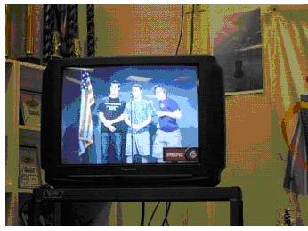
ist bereits unser Konzerttag! Wieder haben wir die Gelegenheit, die Amerikaner in ihren Klassen zu besuchen. Wer das nicht will, sieht sich im Aufenthaltsraum Filme an, darunter passenderweise "Grease", das Musical, dessen bekannte Melodien wir in einem Medley als Zugabe spielen. Nach der ersten Probe am Vormittag gibt es aber auch noch eine andere interessante Sendung zu sehen: In den täglichen TV-News der Schule, von Schülern moderiert, preisen Christoph und sein "Host" Bobby unser gemeinsames Konzert an diesem Abend, sieben Uhr 30, an.
In diesem Sinne proben wir auch noch fleißig weiter, und damit die steigende Spannung nicht auf einen leeren Magen trifft, veranstalten die Organisatoren unter eifriger Mitwirkung von allen beteiligten Eltern um sechs Uhr ein "Pot Luck Dinner" in der Cafeteria der Schule, ein üppiges Büffet mit zahlreichen Gerichten, Vor- und Nachspeisen, die die Familien selbst zubereitet haben. Unter diesen guten Vorzeichen wird das Konzert, das wir vor ordentlich besetzten Rängen spielen, tatsächlich ein großer Erfolg. Besonders die Verabschiedung von Mrs Sandberg, der die DJO-interne Boygroup mit einer tollen Performance das Lied "Total egal" darbietet, sorgt für viel Emotion und reichlich Ovationen. Außerdem überreichen uns die McLeaners zu unserer Überraschung jedem von uns ein T-Shirt, auf dem die beiden Orchester in elegantem Design verknüpft sind. Nach dem Konzert kehren wir erleichtert und erschöpft in unsere Gastfamilien zurück.
Freitag, 29. Mai
Auch an diesem Morgen steht es uns frei, Klassenbesuche mit unseren Gastgebern zu machen. Um neun Uhr trennen wir uns allerdings von ihnen, um in einen stilechten gelben Schulbus zu steigen und das "John F. Kennedy Center" zu besuchen. Dieses Veranstaltungsgebäude, in Gedenken an seinen Namensgeber errichtet, beinhaltet, wie wir bei einer Führung erfahren, mehrere Theater für Konzert-, Theater- und Musicalaufführungen, von denen wir teilweise auch die Präsidentenloge ansehen können. Außerdem kann man Geschenke verschiedener Nationen in Form von Kunstwerken bestaunen, wie etwa das "japanische Zimmer".
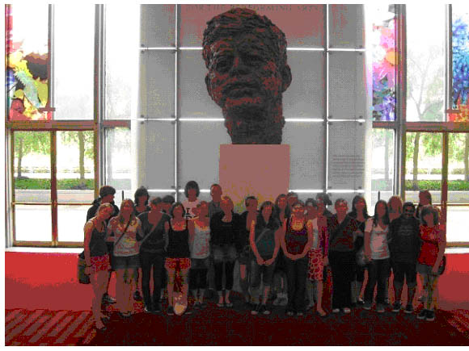
Danach fährt uns der Bus in das Zentrum von Washington DC, wo ein Teil der Gruppe das "International Spy Museum" besucht, in dem es über Bond-Spielzeuge bis zu Biographien von echten Spionen einiges zu entdecken gibt, während sich der andere Teil frei in der Hauptstadt bewegt und sich andere Museen ansieht, wie das "National Museum of Natural History", das "National Air&Space Museum" oder das "National Museum of American History", um nur einige zu nennen. Schließlich trudeln wir langsam an unserem Treffpunkt, dem "Art Sculpture Garden", ein, wo wir uns um fünf Uhr gemeinsam mit einigen dazugestoßenen Amerikanern den "Young Lions" Jazz unter freiem Himmel anhören. Leider ist der Schauplatz zu diesem Zeitpunkt nicht so optimal gewählt, den immer wieder regnet es ein wenig. Poetisch betrachtet scheint der Wettergott nicht übersehen zu haben, dass dies schon unser letzter voller Tag in Amerika ist und vergießt ein paar Abschiedstränen... dass der Abschiedsschmerz allerdings binnen weniger Minuten - die Gruppe befindet sich schon auf dem Weg zu einer nahegelegenen Metrostation - sintflutartige Züge annimmt, hätte keiner erwartet. In kurzer Zeit sind die meisten von uns klatschnass und rennen mit ihren im Wasser schwimmenden Füßen zum nächsten Unterstand. Ohne, dass jemand noch einen Überblick hätte, kommen wir in kleinen Grüppchen an der Metrostation an und treffen nach und nach an der Station "West Falls Church" ein, wo uns unsere Gasteltern abholen und nach Hause fahren. Wir ziehen uns schnell um, denn bereits um sieben Uhr beginnt die Abschiedsfeier - "Farewell Party" - im "Old Firehouse". Neben Billardtischen und einer XBox mit "Guitar Hero" kriegen wir auch Pizzen serviert, mit denen wir uns stärken um uns dann auf der Tanzfläche austoben. Nach einem weiteren großartigen Konzert unserer Boygroup - wir sind stolz, dass wir sie haben - feiern wir noch lange weiter.
Abfahrt- und flug, 30. + 31. Mai
Wenn wir um zwölf Uhr mittags an der Schule zusammenkommen, geht für uns eine ereignisreiche Woche zu Ende. Die Verabschiedung von den Gastfamilien dauert natürlich viel länger als erwartet - aber wir lassen uns auch von einem drängelnden Busfahrer nicht hetzen. Ein Abschiedsfoto noch vor dem "Rock" - dem Stein, den die McLeaners jedes Mal mit den deutschen Nationalfarben bemalen, wenn wir da sind - und dann ist es schließlich Zeit, in den Bus einzusteigen. Hier und da fließen ein paar Tränen, weswegen wir nur hoffen, dass wir die Amerikaner schon nächsten Februar wieder bei uns in Empfang nehmen können!
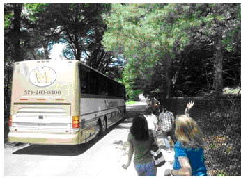
Die Reise zurück verläuft unspektakulär, dauert aber natürlich wieder seine Zeit - um halb zwei am Nachmittag (deutscher Zeit!) am Sonntag, den 31. Mai, kommen wir endlich am Kronenplatz an und werden von unseren Familien in Empfang genommen. Nicht nur der Jet-Lag, den wir in den nächsten Tagen zu spüren bekommen, wirkt nach, sondern auch der Kontakt zu unseren tollen Gastgebern, der dank Facebook glücklicherweise nicht abreißt.
Das Jugendorchester hat ein Wochenende mit Proben im Sauerland im bekannten Kloster Brunnen verbracht. Auf dem Übungsprogramm stand die Sinfonie Nr 4, die ,,Italienische", von Mendelssohn. Natürlich kam bei aller Arbeit der Spaßfaktor nicht zu kurz: Tischtennis- und Kickerturniere füllten die Pausen und die Abende, berichtet Musiklehrer und Musik-Coach Udo Mönks. Das Training gelte den Konzerten im Januar, wenn das Orchester der McLean Highschool aus USA zum Besuch ans Grabbe kommt.
arrangiert und produziert von Hajo Gärtner (Detmold)
Die lange Anreise
Von Christian Oesterwinter (auf einer amerikanischen Tastatur)
Ein bisschen steckt er uns allen immer noch in den Knochen, der lange Tag gestern. Die Busfahrt nach Frankfurt verlief ja noch gemütlich, für das Einchecken blieb Zeit genug, aber in Paris wurde es ein bisschen hektisch. Sofort am Flugzeug wurden wir von Flughafenpersonal abgefangen, denn alle, die Paris nur als Zwischenstation nach Washington benutzten, mussten in einem Eilmarsch der uns Kilometer lang vorkam, durch das Gebäude gelotst werden, um rechtzeitig den Flug nach Amerika zu erreichen. Dann 8 Stunden Flug, unter uns nichts zu sehen als langweilige Wolken, bis endlich Labrador auftauchte. Der Flug folgte der Ostküste Kanadas und der Neuenglandstaaten, bei New York ging es merkbar nach unten, Manhattan war gut zu sehen. Bald danach Beifall im ganzen Flugzeug, die Landung war einigermaßen sanft ausgefallen. Nur noch die Einreisekontrolle! Nur ist gut. Mit einem Video, das wir in der im Schneckentempo vorankommenden Warteschlange mindesten 5 Mal genießen konnten, wurde uns erklärt, die Einreiseformalitäten seien „as easy as one, two, three“. Waren sie aber nicht. Wir hatten auf den Einreisepapieren, die wir schon im Flugzeug ausgefüllt hatten, die Hausnummer der McLean High School offengelassen, weil wir sie nicht wussten. Das war für die Beamten in Washington ein Problem. Einige von uns hatten einfach eine möglichst vierstellige Nummer erfunden und eingesetzt. Die kamen ohne Probleme durch. Von den anderen wurden einige doch von der Sicherheitskontrolle ganz schön zur Schnecke gemacht. Das Gepäck war tatsächlich trotz des kurzen Aufenthalts in Paris korrekt und vollständig mit uns in Washington angekommen, nur Jonathan vermisste seines und leugnete hartnäckig, dass der einzige herrenlose Koffer auf dem ganzen Flughafen seiner war, bis wir ihn anhand des Kofferschildes überzeugen konnten.
Gretta Sandberg und Phil Rosenfelt empfingen uns schon am Flughafen, die Gastfamilien warteten an der Schule in McLean. Dort hatte ein riesiger Findling vor dem Gebäude eine schwarz-rot-goldene Bemalung verpasst bekommen und die Aufschrift „Wilkomme DJO“. Nahezu ausgeschlafen kamen dann alle heute Morgen zur ersten Probe, Frau Sandberg war sehr zufrieden. Abends gab es ein großes Pizza-Essen, danach Laser adventure im Ultrazone, the hottest game spot in town. Die Gastgeberschüler hatten das ins Programm gebracht, viele von uns kannten es schon. Na ja.
Überhaupt fühlen sich wohl alle Gastschüler in ihren Familien wohl, und wenn es Probleme gibt, können sie mit einem vernünftigen Gespräch aus der Welt geschafft werden. Morgen geht es nach Mt. Vernon, davon morgen Abend mehr.
Samstag, Mt Vernon. Heute ist erst am späteren Nachmittag Probe, vorher wollen wir mit dem Bus nach Mt. Vernon fahren. Da hatte sich George Washington niedergelassen, nachdem der Unabhängigkeitskrieg gegen England beendet war. Die Plantage liegt sagenhaft auf einem Hügel über dem Potomac. Das Wetter ist hochsommerlich, es ist kein Arbeitstag und wir sind wahrhaftig nicht alleine in diesem amerikanischen Nationalheiligtum. Die Schlange meist amerikanischer Touristen vor dem Herrenhaus ist ziemlich lang. Schon am Eingang des Geländes ist uns ein komischer Vogel begegnet, jemand in einer Kostümierung, als wäre er aus dem 18. Jahrhundert entsprungen. Es ist ein Schüler der McLean High School, der mit ungefähr 100 weiteren Mitschülern ein Projekt über die Zeit der Aufklärung macht. Sie kriechen in die Rolle einer historischen Figur aus Washingtons Umgebung und spielen sie mit Perfektion. Sogar das um 1800 noch sehr englische Amerikanisch wird mit vielen Schnörkeln und Verzierungen zelebriert. Geschichte lernen by doing. Aber was habe ich von der Aufklärung begriffen, wenn ich George Washingtons Gärtner perfekt spielen kann? Das Schlangestehen ist nicht unsere Sache, man muss ja nicht unbedingt in das Haus. Man kann sich auch wie die Vier aus der 9M dahinter auf die Wiese setzen und sich von Jonathan aus seinem letzten Schmöker erzählen lassen. Nach dem Mittagessen ist dann wieder 3 Stunden Probe in McLean.
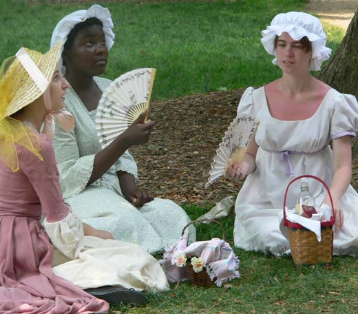
Konzert mit Festreden
Von Christian Oesterwinter
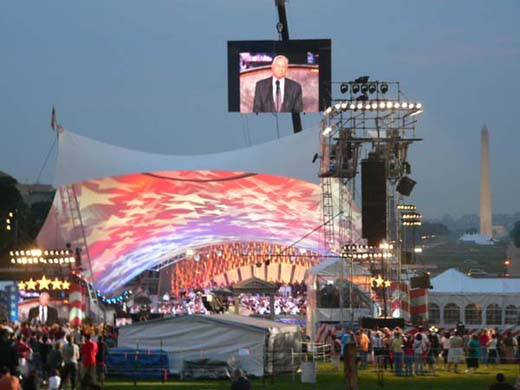
Washington DC, Sonntag, 27. Mai, National Memorial Concert Heute war Probe von 12.30 bis 15.30 Uhr, dann wurden noch Podeste aufgebaut, ein Chor soll auch noch auf der Bühne Platz haben. Man merkt, das Konzert rückt näher.
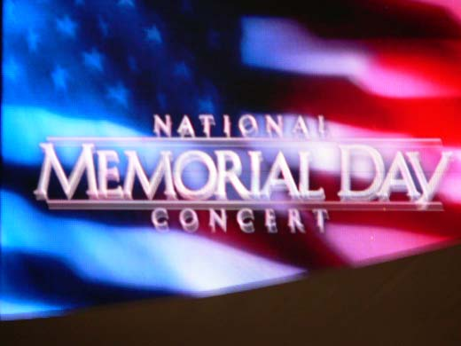
Wer Interesse hatte, fuhr danach mit uns zur National Mall, um vor dem Capitol das Konzert des National Sinfony Orchestra zu Ehren der Gefallenen in den Kriegen seit dem zweiten Weltkrieg zu hören. Nach den hochsommerlich heißen Tagen schien sich ein Gewitter zusammenzubrauen, als wir in die U-Bahn stiegen. Nach einer halben Stunde hörten wir, das Konzert sei abgesagt, nach den pudelnassen Leuten zu urteilen, die zwischendurch eingestiegen waren, musste es wohl heftig regnen. Die Stimmung unter uns war trotzdem prima, einige vertrieben sich die Wartezeit an den U-Bahnstationen mit Raps. Schließlich war das Konzert aber doch nur etwas verschoben worden und wir kamen rechtzeitig an, um noch den Anfang mitzubekommen. Ich hatte mir so etwas vorgestellt wie die Night of the Proms in London, aber natürlich wurde das Konzert als nationales Ereignis zelebriert. Als wir die Sicherheitskontrolle hinter uns hatten, hörten wir gerade General Collin Powell etwas zur Wiedereingliederung der Soldaten sagen, die zurückkommen. Viele von ihnen finden nicht mehr zurück in ein normales Leben. Sie haben ihr Leben durch den Krieg hindurch gerettet, aber es ist zerstört. Dann wieder Musik, getragene Lieder, ein Medley der Musik aller Waffengattungen, ein Video über eine Frau, die ihren 19-jährigen Sohn vor 3 Monaten in Afghanistan verloren hat: „19 Jahre“ horte ich einen von unseren Jungen vor mir nachdenklich wiederholen. Die Mutter kam wöchentlich einmal zum Grab ihres Sohnes nach Arlington National Cemetery, saß dort bei Regen oder Schnee, und unterhielt sich mit ihrem Sohn, indem sie Tagebuch schrieb. Eine Schauspielerin las, was sie geschrieben hatte. Später sang eine Solistin, begleitet von NSO, das Vater Unser. Ein Admiral des Joint Chiefs of Staffs sprach: „We are a nation at war! ... ordinary people doing the extraordinary ... , giving all they can give for our freedom ..., our Gold Mothers”. Ich habe nur diese Fetzen behalten. Noch einmal das Medley von vorhin, dann war das Konzert zuende. „Freedom is not free“, heißt es hier in Memorial-Day-Reden, das soll heißen: Man muss dafür bezahlen. Bezweifelt wirklich niemand, ob es im Irak oder anderswo überhaupt um die Freiheit Amerikas geht?
Einstein zum Klettern
Von Christian Oesterwinter
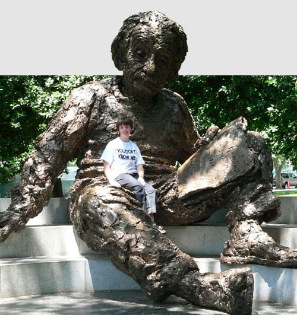
McLean. Dienstag, 29. Mai. Mehr als 15 Stunden Proben liegen hinter uns, jeden Tag wenigstens 3 Stunden, Sonntag wie Alltag. Heute kam zum ersten Mal der Chor dazu, außerdem wurde die Beschallung des Theatersaals justiert. Alle Stücke klingen schon recht gut, aber morgen gibt es vor dem Konzert noch zwei Proben, eine morgens und eine nachmittags. Dann gibt es in der Schule ein Essen. Die Eltern bauen ein Buffet auf, Pot Luck Dinner heißt so etwas hier. Den Einsatz vieler Gastelternfamilien nicht nur für ihre Gäste sondern auch für das Konzert und das Gelingen der verschiedenen Programmpunkte kann man gar nicht hoch genug schätzen: Ob Schüler von oder zu den Proben gefahren werden müssen, ob wie gestern ein Schwimmbadfest in einem Schwimmclub mit Grillen und der Möglichkeit zum Tennis Spielen organisiert wird, immer finden sich Eltern, die helfen. Bei Janet DuBose laufen alle Fäden zusammen, sie übersieht, wie viel Zeit für alles gebraucht wird, telefoniert Hilfe herbei, falls nötig, ihre Handynummer ist oft gefragt. Wo lässt man seine Tasche mit Photoapparat und allen anderen unverzichtbaren Kleinigkeiten, wenn man ins Weiße Haus will, wohin man nichts davon mitnehmen darf? Denn davor steht ein Drachen von einem weiblichen Parkranger, die einen ankeift: "You are not allowed to take this into the White House! Put it in the trash can over there!" Natürlich weiß man so etwas hier vorher, ein Vater kommt mit einem Kleinbus zu der U-Bahn-Station, an der wir uns zur Fahrt nach Washington treffen, wir packen alles dahinein. Nach dem Besuch im Weißen Haus steht er da und wir können unsere Habseligkeiten wieder an uns nehmen. Praktisch für uns, dass dieser Vater drei Arbeitsstunden geopfert hat. Ach ja, wie war es überhaupt im Weißen Haus? Sehr kurz. Auch unsere Gastgeber hatten erwartet, daß mehr zu sehen wäre. Vom Weißen Haus wird den meisten die kratzbürstige Sicherheitsbeamtin in Erinnerung bleiben. "Get off that fence!", You may not sit on that wall!" "Line up in a single queue by alphabetical order!" Ostdeutsche Bürger haben das gerade gut 18 Jahre hinter sich. Janet hat uns dann noch die berühmteren Denkmäler auf der Mall gezeigt. Denkmäler sind so eine Sache, für die meisten nicht der Hit. Aber nun liegt ja das Jefferson Memorial sehr malerisch in der Landschaft. Das Roosevelt Memorial hatte noch niemand von uns gesehen und zeigt, dass man Präsidenten auch so verewigen kann, dass man sich erstaunt fragt, was das für ein Mann war. Zum Schluss kamen wir bei Albert Einstein vorbei, auf dem kann man herrlich herumkraxeln. Nach diesem langen Marsch nachmittags noch eine anständige Probe abzuliefern war schon eine gepflegte Leistung.
Ein wunderbarer Abend
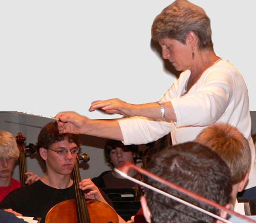
Das Konzert
Von Christian Oesterwinter
Mittwoch, 30. Mai 2007 Noch einmal 6 Stunden Probe mit einer 3-stündigen Mittagspause. Vor dem Konzert haben die Gasteltern ein beeindruckendes Buffet in der Cafeteria aufgebaut, das berühmte Pot Luck Dinner. Langsam kommen immer mehr Gäste dazu, meistens Eltern von amerikanischen Orchestermitgliedern. Unter den Musikern macht sich langsam etwas Nervosität breit. Das Essen ist zuende, die Aula füllt sich. Das Konzert beginnt mit einem Stück. Das ist wie ein Glas Sekt zum Empfang: Royal Sec von Victor Herbert. Dann wird es historisch. Worte von Thomas Jefferson, vertont von Randall Thompson, The Testament of Freedom. Ein Chor der McLean High School singt die Texte. Zwei Choräle aus der Bach-Kantate ,,Wachet auf, ruft uns die Stimme" folgen, dann beschließt die Ouverture des Oratoriums ,,Paulus" von Mendelssohn den ersten Teil des Programms. Es war ja schon in den Proben zu bemerken, wie dieses große Orchester von Mal zu Mal besser wurde, aber heute Abend spielen sie, wie sie noch nie vorher gespielt haben. Und der Funke springt über, das Publikum ist begeistert. In der Pause werden die Mitglieder des McLean Chamber Orchestra feierlich in das Detmolder Jugendorchester aufgenommen, sie bekommen ein T-Shirt mit unserem Logo überreicht. Mitglieder des Jugendorchesters bedanken sich bei den Gasteltern, die sich mit der Planung unseres Aufenthaltes, dem Grillfest und dem heutigen Dinner, unserem Abschiedsfest morgen und vielen anderen Dingen so viel Mühe gegeben haben. Im zweiten Teil mit der ,,Moldau", dem Walzer ,,An der schönen blauen Donau" und dem ,,Amerikaner in Paris" wird stehend applaudiert. Nach dem Konzert dauert es lange bis sich das Schulgebäude leert, überall stehen Konzertbesucher und Orschestermitglieder zusammen, es gibt sehr viel verdiente Anerkennung. Es war ein wunderbarer Abend.
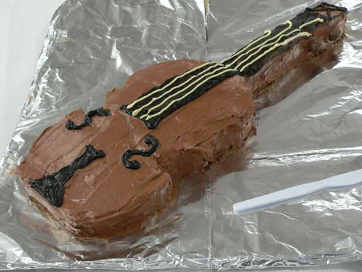
2006 in Detmold
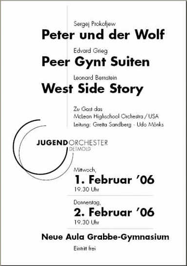
Mit diesen beiden Konzerten stellt das Jugendorchester seine neue CD vor.
Das Concertino für zwei Hörner und großes Orchester von Friedrich Kuhlau mit den Solisten Victoria und Carsten Duffin war Teil des Programms im März, die Sinfonia für acht obligate Pauken und Orchester von Johann Fischer mit Manuel Westermann an den Solo-Instrumenten im Juni 2005. Das dritte Werk hören Sie heute: Der Huldigungsmarsch aus „Sigurd Jorsalfar“ von Edvard Grieg. Wir wünschen Ihnen viel Vergnügen!
Schon seit über zehn Jahren existiert der Orchesteraustausch des Detmolder Jugendorchesters (DJO) mit dem Orchester der McLean High School in einem Vorort von Washington. Die Reise des DJO in die USA vom 12. bis 20. Mai im vergangenen Jahr gelang wegen der allgemein bekannten Veruntreuung des Geldes durch den Leiter des betreuenden Reisebüros nur durch die großzügige Hilfe von verschiedenen Seiten. Das Jugendorchester freut sich in diesem Konzert die Partner aus USA neben sich an den Pulten zu haben, gemeinsam musizieren und feiern zu können. Dieser Gegenbesuch erhält und festigt die gerade geknüpften Verbindungen der Musiker untereinander. Wir danken der Leiterin, Frau Gretta Sandberg, sowie ihren Begleitern, dass sie die Mühen der Organisation einer solchen Fahrt auf sich genommen haben! Thank you!
Für Getränke bei der Abschiedsparty sorgt Meinberger Brunnen
Programm
Edvard Grieg (1843 - 1907) Huldigungsmarsch op. 22 aus der Bühnenmusik zum Schauspiel „Sigurd Jorsalfar“
Sergej Prokofjew (1891 - 1953) Peter und der Wolf op. 67 Sinfonisches Märchen für Kinder
Sprecher: Maximilian Streicher (Jg. 13)
Pause
Edvard Grieg (1843 - 1907) Peer Gynt Suiten I op. 46 und II op. 55
Morgenstimmung Åses Tod Anitras Tanz In der Halle des Bergkönigs
Aaron Copland (1900 - 1990) Our Town Music from the film score Leonard Bernstein gewidmet
Leonard Bernstein (1918 – 1990) Selections from „West Side Story“ arr. Jack Mason
Über die Komponisten
Edvard Grieg: Huldigungsmarsch aus „Sigurd Jorsalfar“ op. 22 Suiten zu „Peer Gynt“ op. 46 und 55 Grieg war ein Dramatiker, der sein Leben lang eine Oper schreiben wollte; es blieb jedoch bei drei Bühnenmusiken: „Sigurd Jorsalfar“ (1872), ein Bühnendrama, das die Suche nach nationaler Identität im nordischen Altertum zum Vorwurf hat, „Olav Trygvason“ und „Peer Gynt“.
Edvard Grieg war gerade 30 Jahre alt, als Henrik Ibsen ihn 1874 anregte, ihm Musik zu seinem Drama „Peer Gynt“ zu schreiben. Da er finanziell gerade etwas knapp war, nahm Grieg das Angebot sogleich an, brauchte jedoch anderthalb Jahre, bis er die Partitur fertig gestellt hatte. Wie auch andere Komponisten haderte er sehr mit sich und war mit seiner Arbeit nicht zufrieden. Der Uraufführung des Bühnenstücks am 24. Februar 1876 in Oslo blieb Grieg fern: aus Angst vor einer Enttäuschung. Das Publikum aber nahm die Musik begeistert auf, so begeistert, dass Grieg aus den beliebtesten Stücken 1888 und 1893 seine beiden je viersätzigen Peer-Gynt-Suiten formte, die heute Griegs andauernden Ruhm wesentlich begründen.
„Peer Gynt“, der sympathische Herumtreiber, Lügenbold und Tunichtgut, dem es genügt, sich selbst zu verwirklichen, der laut und selbstsicher durch die Welt irrt, sich auf der Suche nach Liebe, Abwechslung, Vergnügen und Abenteuer in eine Traumwelt hinein lebt, der von Trollen gejagt wird und den es bis nach Marokko verschlägt, der am Ende um seine Seele kämpft und erkennen muss, sein Leben sei umsonst gewesen, der schließlich von Solvejg erlöst wird, die sein Leben lang auf ihn gewartet hat – dieser „Peer Gynt“ war Edvard Grieg eine Inspiration zu einer ungeheuer bilderreichen Musik. Die Jagd der Trolle, der groteske Tanz der Tochter des Bergkönigs, der verführerische Bauchtanz Anitras, die Melancholie von Åses Tod, die stürmisch-strahlende völlig unromantische Heimkehr: jeder Satz ist ein Kleinod für sich.
Sergej Prokofjew: Peter und der Wolf (1936) Die von jedem Kind geliebte Musik entstand nach der Rückkehr des Komponisten in seine russische Heimat im Sinne des „Sozialistischen Realismus“. Der „Pionier Petja“ nimmt mutig den Kampf mit der gierigen kapitalistischen Welt auf: »Pioniere wie er haben keine Angst vor Wölfen.«
Leonard Bernstein: West Side Story (1957) Dieses Werk, zwischen Musical und Oper rangierend, präsentiert das „Romeo und Julia“ Sujet auf einer aktuellen amerikanischen Ebene. Die „Selections“ fassen die populärsten Ideen des Komponisten in einem reizvollen Arrangement zusammen.
Aaron Copland: Our Town (1940) Der Name Aaron Copland, Sohn eines litauischen Einwanderers, wird häufig gleich gesetzt mit amerikanischer Musik. Seine Werke zeichnet ein dezenter Modernismus sowie bunte, farbenfrohe Orchestrierungen aus, eigenständig und vom europäischen Einfluss abgewandt. Neben dem Schaffen für den Konzertsaal, hat er auch – wie in diesem Beispiel – umfangreich für die „Traumfabrik Hollywood“ gearbeitet.
Udo Mönks
Austausch in Dur
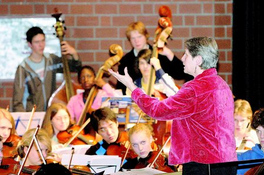
Gretta Sandberg am Pult: Die jungen Musiker aus Detmold und dem amerikanischen McLean haben in den vergangenen Tagen jede freie Minute in die Proben für ihre beiden Konzerte investiert. Foto: Preuss
Detmolder Jugendorchester hat Besuch aus USA
Detmold (blu). Das Orchester ist groß. Sehr groß. Nur mit einem vorgebauten Podest finden alle Musiker auf der Bühne der Neuen Aula im Grabbe-Gymnasium Platz. Der Grund für die große Besetzung: Das Detmolder Jugendorchester hat sich für seine Konzerte heute und morgen Abend Verstärkung geholt. Und zwar gleich aus Amerika.
Das Detmolder Jugendorchester und das Streichorchester der McLean Highschool aus den USA verbindet bereits eine lange Freundschaft. Vor zehn Jahren gabs die ersten Kontakte, im vergangenen Jahr waren die jungen Instrumentalisten aus Detmold wieder einmal zu Gast in McLean - und jetzt sind 25 amerikanische Streicher zum Gegenbesuch in Lippe. Neben einem Ausflug nach Köln, den morgendlichen Schulbesuchen sowie gemeinsamen Unternehmungen in der Gruppe und mit den Gastfamilien, in denen die jungen Amerikaner untergebracht sind, steht natürlich das Musizieren im Mittelpunkt dieser transatlantischen Begegnung. "Wir proben in jeder freien Minute", erzählt der Leiter des Detmolder Jugendorchesters, Udo Mönks. Kein Wunder: Heute und morgen gestaltet das insgesamt 85 Instrumentalisten zählende Orchester schließlich zwei große Konzerte. Der internationale Gedanke zieht sich durch das komplette Projekt. Mit Kompositionen von Edvard Grieg (unter anderem die Peer-Gynt-Suiten) und Sergej Prokofjews "Peter und der Wolf" stehen typisch europäische Werke auf dem Programm, mit Aaron Copland und Leonard Bernstein (das Orchester spielt Ausschnitte aus der "West Side Story") typisch amerikanische Komponisten. Und auch am Pult gibts einen deutsch-amerikanischen Stabwechsel: Udo Mönks und seine amerikanische Kollegin Gretta Sandberg wechseln sich beim Dirigieren ab.
"Musik gemeinsam zum Klingen bringen"
Udo Mönks
Für Mönks liegen die Vorteile dieses Austausches klar auf der Hand. "Zum einen lernen unsere Schüler die Lebensart der Amerikaner kennen, diese etwas lockerere Einstellung. Außerdem haben sie Gelegenheit, ihre Sprachkenntnisse zu trainieren - im musikalischen Sektor und ganz normal im Alltag mit den amerikanischen Gästen." Und wenn das mit der Verständigung mal nicht sofort hundertprozentig klappt, dann ist da ja immer noch die Musik. "Die Musik zu fühlen und gemeinsam zum Klingen zu bringen - das hat die beiden Orchester wirklich schnell zusammengebracht", sagt Mönks. Und wenn die jungen Musiker mal nicht verstehen, was der anderssprachige Dirigent von ihnen will, dann hilft nur eines: Die Frau oder der Mann am Pult singen den Schülern einfach vor, was sie meinen.
Die Ergebnisse der Probenarbeit sind heute und morgen Abend jeweils ab 19.30 Uhr in der Neuen Aula des Grabbe-Gymnasiums zu hören.
LZ vom 1. Februar 2006
Ein Raum voller Musik
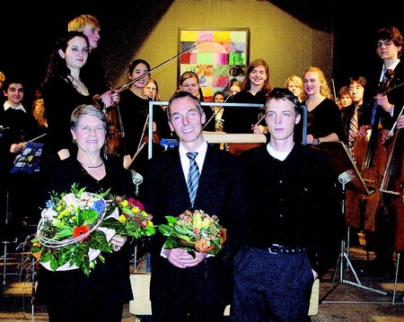
Freuen sich über eine gelungene Aufführung: Die Orchesterleiter Gretta Sandberg und Udo Mönks sowie Rezitator Maximilian Streicher (von links). Foto: Schwabe
Konzert des Jugendorchesters: Krönender Abschluss einer Begegnung der anderen Art
Detmold (ans). Schneller, höher, weiter - das sind die Ingredenzien einer individualisierten Gesellschaft, die den Erfolg des Einzelnen über die Begegnung der Menschen untereinander stellt. Dabei ist doch die Begegnung mit dem Anderen ein Wesensmerkmal des Menschen. Was geschieht, wenn der Andere nicht der Konkurrent, der "Mitbewerber", der Gegner ist, war am Mittwoch und Donnerstag im Grabbe-Gymnasium in eindrucksvoller Weise zu hören.
An zwei Abenden wurde die neue Aula des Gymnasiums, das gegen alle Tendenzen aus Politik und Gesellschaft für sich ein auf die klassische Musik bezogenes Profil erhalten will, zu einem Raum voller sinfonischer Musik. Ein großes Orchester mit acht Celli, fünf Kontrabässen, drei Hörnern, Flöten, um nur einige Besonderheiten zu nennen, war kaum auf der Bühne zu platzieren. Dieser wahrhaft sinfonische Klangkörper war nur möglich, weil allein 23 Streicher den weiten Weg aus Washington nicht gescheut haben, um hier mit ihren deutschen Freunden in einer Woche ein gemeinsames Programm von über zwei Stunden Länge zu erarbeiten (die LZ berichtete).
Die gut 400 Leute durften einmal mehr erleben, wie aus dem Zusammenklang gemeinsamen Handelns kompetenter Individuen etwas entsteht, das mit dem Wort Gemeinschaft nur unzulänglich beschrieben werden kann, weil dieses Wort das harmonische Geschehen, das hier unter kompetenter Leitung von Gretta Sandberg und Udo Mönks entwickelt wurde, nicht wirklich mitklingen lässt. Um diese Harmonie in all ihren Sinn stiftenden Spannungen und klanglichen Facetten entstehen zu lassen, hatten die beiden musikalischen Köpfe eine hervorragende Idee. Sie ließen ihr Orchester Geschichten erzählen. Von Tod und Tänzen, von Liebe, Heimkehr und Lebenslust. Geschichten, mit denen die Jugendlichen diesseits und jenseits des Atlantiks etwas verbinden, so dass sie anspruchsvolle Hörbilder eindrucksvoll umsetzten konnten.
So zum Beispiel "Ases Tod" aus der ersten Peer-Gynt-Suite von Edvard Grieg, oder viele der Figuren aus dem sinfonischen Märchen "Peter und der Wolf" von Sergej Prokofjew wie Peter, den Vogel, die Katze, den Großvater oder die Jäger. Maximilian Streicher las das Märchen mit viel Ausdruck vor. Dabei hätte er gar nicht als Tierstimmenimitator auftreten müssen. Den Part hat ja das Orchester.
Mit Verve warfen die jungen Musiker sich auch in Griegs "Huldigungsmarsch" oder in die Auswahl der schönsten Melodien und Musiken aus Leonard Bernsteins "West Side Story". Einige mussten als Zugabe gleich wiederholt werden, nachdem sich alle Beteiligten bei den vielen Freunden bedankt hatten, die diese Begegnung erst möglich machten.
LZ-Bericht vom 4. Februar 2006
Sek-I-Orchester
2018
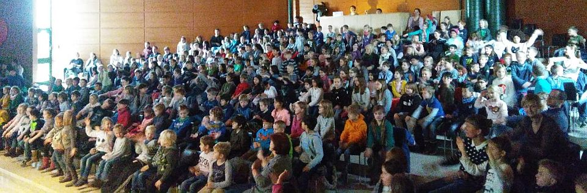
Volle Aula in zwei Konzerten. Foto: Hanno Meyer
Nikolauskonzert
Drei Haselnüsse für Aschenbrödel
Am 6.12.2018 folgten 700 Schüler aus Detmolder Grundschulen der Einladung ins Grabbe-Gymnasium und erlebten märchenhafte Konzerte der 70 Musikerinnen und Musiker des SI-Orchesters unter Leitung von Florian Wessel.
Zu Beginn intonierte das Orchester Teile der Filmmusik aus „Drei Haselnüsse für Aschenbrödel“ und zum Rahmen der Handlung konnten die Grundschüler mitsingen und mitmachen. In eigens für den Anlass geschriebenen Sätzen für Blechbläser sangen alle Konzertbesucher und Mitwirkende schwungvoll Advents- und Weihnachtslieder. „O du fröhliche, o du selige“ erklang stimmungsvoll und stimmgewaltig in der Neuen Aula des Grabbe-Gymnasiums. Auch beim „Stern über Bethlehem“ und „Morgen kommt der Weihnachtsmann“ waren die Schülerinnen und Schüler textsicher und freudig dabei.
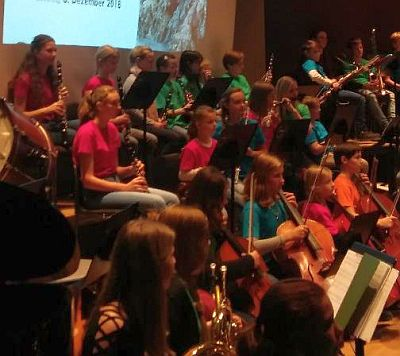
Zur Orchesterversion des „Ungarischen Tanzes Nr. 5“ von Johannes Brahms tanzten die Grundschüler mit ihren Armen und Beinen im Takt der Musik. Bei Dvoraks „Humoreske“ überraschten die Schlagwerker des Orchesters mit einem plötzlichen Forte-Einsatz, welcher in der Geschichte mit dem Verlieren von Aschenbrödels Schuh auf ihrer rasanten Flucht aus dem Schloss verbunden wurde. So in Schwung durften sogar einige Grundschüler das Orchester dirigieren, was vom aufmerksamen Publikum mit großem Applaus honoriert wurde. Abschließend spielte das Orchester in klanglicher Ausgewogenheit und eindrucksvoll voluminös die Filmmusik aus dem Film „Drei Haselnüsse für Aschenbrödel“.
„Ein tolles und sehr eindrucksvolles Konzert“, sagten die Zuhörer. „So ein Orchester macht richtig Spaß“ und „da will ich auch später mitspielen“ berichteten die begeisterten Kinder.
Das sinfonisch-vollbesetzte SI-Orchester mit Schülern aus den 5. bis 9. Klassen des Grabbe-Gymnasiums und mit Unterstützung durch junge Musiker aus dem Bildungshaus Weerthschule überraschte mit großer Spielfreunde, Lust an musikalischer Differenzierung und großer Leidenschaft unter der gekonnten Leitung von Moderator und Dirigent Florian Wessel.
Die Konzerte bleiben noch lange in Erinnerung und waren ein stimmungsvoller Auftakt in die Advents- und Weihnachtszeit.
Am Montag, 28. Februar, fuhr das SI-Orchester des Grabbe-Gymnasiums zum 30. Mal auf Orchesterfahrt nach Klosterbrunnen. 51 Kinder fieberten dem Ziel entgegen, wenn auch manche sich nur schwer von ihren Familien trennen konnten. Angekommen, wurde zunächst die Zimmerverteilung vorgelesen und von den meisten mit einem leisen Jubelruf entgegengenommen. Ich war nun schon in der 8. Klasse, das heißt leider das letzte Mal dabei. Das letzte Jahr ist aber immer etwas ganz Besonderes. Die 8-Klässler dürfen nämlich immer in „die Wohnung“. Das ist ein abgeteilter Bereich mit je drei Dreierzimmern, einem eigenen Bad und einem Sofa! Außerdem gebührt den 8-Klässlern die Ehre, den bunten Abend zu gestalten. Darauf komme ich aber später nochmal zurück. Die Betten bezogen und den Koffer ausgepackt, ging es auch schon gleich los mit der ersten Probe. Auf dem Programm standen Stücke aus dem Dschungelbuch, König der Löwen und Dvoraks „Furiant“. Danach gab es zur Kaffeestunde Kuchen. Nach weiteren Probenstunden zauberten die Küchenfrauen ein leckeres Abendessen. Am nächsten Tag ging es relativ früh weiter. Wir frühstückten und probten und probten und probten …. Zwischendurch gab es natürlich immer wieder Pausen und Freizeit. Irgendwann fing es dann an zu schneien. Am Mittwoch lag dann soviel Schnee, dass wir sogar Schlitten fahren konnten. Am Abend, als alles dunkel war, haben wir dann die alljährliche Nachtwanderung gemacht. Es ist eine Art Ritual, dass die 8-Klässler sich zwischen den Bäumen verstecken und versuchen, die Jüngeren zu erschrecken. Am Donnerstag fingen dann am späten Nachmittag endlich die Vorbereitungen für den bunten Abend an. Da die Orchesterfahrt ja immer in der Woche nach Rosenmontag (also über die Karnevalstage) stattfindet, ist der bunte Abend ein Kostümfest. Dieses Jahr verkleideten sich alle zu dem Thema „Ein musikalischer Dschungel“. Da wir Ältesten das Highlight der Woche vorbereiten und gestalten dürfen, saßen wir in den Pausen zusammen und bastelten Kronen für die Gewinner der Gruppenspiele sowie für den Kostüm- und Tanzwettbewerb. Ebenfalls kümmerten wir uns um Musik, Licht und Unterhaltung. Um den bunten Abend dem Thema anzupassen, haben wir dieses Jahr einen „Dschungelkrimi“ vorbereitet. Dabei ging es darum, der Entführung von Mogli auf die Spur zu kommen und bei lustigen Gruppenspielen Hinweise bezüglich des Täters zu bekommen. Viel Spaß gab es beim Gummibärchen schmecken, Schleichtiere erfühlen, Tigerweitsprung, Liederheulen oder beim Geier-Eierlaufen. Am Ende gab es natürlich auch eine Gewinnergruppe, die sich über kleine Preise freute. Am Freitag, dem letzten Tag, wurden nach der Probe die Koffer gepackt. Ein letztes Foto und „Auf Wiedersehen Klosterbrunnen bis zum nächsten Mal“ – für die meisten zumindest. Abschließend möchte ich als Konzertmeisterin ein herzliches Dankeschön an Frau Hilbert-Opitz und Herrn Wessel richten, und eines kann ich hinsichtlich des kommenden Konzertes versprechen: Es wird tierisch gut!!!
2016
Haensel_&_Gretel
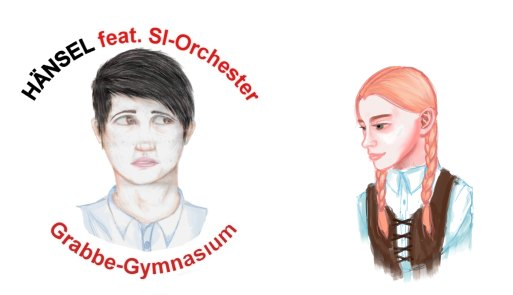
Schuld an allem war der Milchtopf
Das SI-Orchester führt Humperdincks „HÄNSEL und GRETEL“ auf
Die 55 Mitglieder des Unter- und Mittelstufenorchesters haben ein halbes Jahr geprobt und bringen nun Humperdincks berühmte Märchenoper instrumental zu Gehör. Leidenschaftlich, märchenhaft und manchmal auch opulent erklingen die zauberhaften Melodien der Orchesterfassung dieser populären Oper. Zu Beginn erklingt fast eine ländliche Idylle mit zwei tanzenden und spielenden Kindern, Hänsel und Gretel, doch im Verlauf der Handlung wird es dann doch gruselig. Wir treffen auf die fürchterlich-schaurige Knusperhexe, die uns versucht zu verführen. Im Bann des Hexenrittes und des Knusperwalzers tanzen wir der Rettung entgegen. Die Orchesterfassung wird ergänzt durch Bilder der KunstAG des Grabbe Gymnasium. Florian Wessel leitet und moderiert das Konzert und die MITMACHAKTIONEN. Eintritt frei am Sonntag, 4. Dezember, ab 16 Uhr in der Neuen Aula.
Szenische Lesung beim Konzert, passend zu den Musiktiteln
Von Walter Hunger (Text, Fotos, Video-Kamera)
Die Zuhörerinnen und Zuhörer konnten am letzten Donnerstag im Februar in der vollbesetzten Neuen Aula des Grabbe-Gymnasiums/unserer Schule die Musiker des „kleinen“ Orchesters in Bestform erleben. Was die Mädchen und Jungen in den letzten Monaten einstudiert hatten, woran sie während der intensiven Probetage im abgeschiedenen Kloster Brunnen Anfang des Monats gefeilt hatten, erfreute das Publikum uneingeschränkt. Das musikalische Gerüst bildete Mozarts Oper „Figaros Hochzeit“, das Geschehen der Oper wurde in Form einer szenischen Lesung von ausgewählten Mitgliedern des Orchesters vorn an der Bühne ausdrucksstark und mit viel Witz vorgestellt. So ergab sich ein reizvolles Wechselspiel von szenischer Darbietung und den entsprechenden Musiktiteln. Beides erhielt immer wieder Beifall, und die jungen Künstler zeigten sich dem Anspruch der Musik und der nicht immer einfachen Handlung gewachsen. Können, Spielfreude und Temperament seiner Musiker wusste der Dirigent Herr Wessel gekonnt aufzugreifen und abwechslungsreich zu gestalten. Nicht fehlen durfte bei dieser Aufführung der Dank an die Instrumentallehrkräfte, der Dank an die Eltern und der Dank an die Kollegin Frau Hilbert-Opitz, die die große Gruppe während der Tage in Kloster Brunnen unermüdlich unterstützte. Mit unermüdlichem Beifall erzwang sich das Publikum drei Zugaben. Ein wunderschöner Abend! Dank an alle Beteiligten für ihr Engagement!
Fünf Tage hat das 50köpfige SIOrchester des Christian-Dietrich-Grabbe-Gymnasiums unter der Leitung des Dirigenten Florian Wessel fleißig geübt und mehrere Stücke auf die Beine gestellt. Mal ganz ohne Internet und Empfang genoss das Orchester die Ruhe und das gute Essen in Kloster Brunnen im Sauerlauland. Die „Achter“ verabschiedeten sich am letzten Abend traditionell mit lustigen Challenges, lauter Musik und viel Tanz bis tief in die Nacht, da für sie nun die Möglichkeit besteht in das Detmolder Jugendorchester einzutreten. Die Ergebnisse der Probenwoche sind am Mittwoch, 4.März, im Konzert um 18:00 Uhr in der Neuen Aula des Grabbe-Gymnasium zu hören. Natürlich bietet das SIOrchesters auch wieder Grundschulklassen in sogenannten Musikvermittlungskonzerten an, Musik, Instrumente und Musiker kennenzulernen. Interessierte rufen zwecks Terminvereinbarung folgende Internetseite auf: musikvermittlung@gmx.de
Fulminante Aufführung des Sek-I-Orchesters in gut gefüllter Neuer Aula
Von Hajo Gärtner (Text & Fotos)
Die Beifallsstürme seien »prächtig« gewesen, »eine Zugabe unvermeidlich«: So enthusiastisch im Urteil beginnt Andreas Schwabe seine Rezension vom Konzert in der Neuen Aula. Dann scheint er diese hochfliegende Wertung relativieren zu wollen: Wenn die eigenen Kinder auf der Bühne musizieren, sei der Erfolg garantiert. Applaus also vorprogrammiert; komme, was da wolle.
So herb kann es der LZ-Kritiker aber nicht gemeint haben, denn die lobenden Anmerkungen reißen in der Folge nicht mehr ab und münden in der Anerkennung: »Das Orchester hat alles Lob verdient, hat es sich doch gut durch die schwere Partitur gehangelt und einzelne Stellen etwa in der Flöte schon so musikalisch dargestellt, dass etwas von der Tiefe mozartscher Musik spürbar wurde.«
Im Klartext: An der musikalischen Leistung des Sek-I-Orchesters gibt es nichts auszusetzen, im Gegenteil. Denn die »Zauberflöte« sei, wenn man sich die Noten genau anschaue, »ganz schön schwer«. Eine schwere Aufgabe also, luftig-locker-leicht gelöst. So wie von einer Turnerin, deren Meisterschaft sich darin zeigt, dass sie bei den schwierigsten Übungen geradezu federleicht über dem Boden schwebt.
Etwas Anderes hat dem Kritiker hingegen gar nicht gefallen, und das betrifft die optische Illustration mit Manga-Bildern, mächtig auf die große Leinwand gebeamt. Was er von der Idee an sich hält, darüber schweigt sich der Rezensent aus. Aber beim Tamino kocht ihm die Galle hoch, weil der wie ein Yedi-Ritter ausschaut und sein Schwert schwingt, statt die Zauberflöte zu blasen. Der Priester Sarastro mutiere zum Biest, das der schönen Pamina seine Klauen entgegenstrecke.
Dann wird Schwabe gar oberlehrerhaft: »Bei allem Respekt vor künstlerischer Freiheit hätten die Verantwortlichen solchen groben Missverständnissen frühzeitig entgegen wirken sollen«. Respekt, Herr Schwabe, das ist eine mutige Kampfansage. Sie beruht allerdings auf einem Missverständnis: Die Manga-Illustrationen setzen die Figuren der Oper gar nicht in Szene; schließlich tritt niemand auf die Bühne, um eine klassische Arie zu schmettern. Vielmehr handelt es sich um instrumentale Reduktion, wenn man so will: eine Abstraktion der bekannten Oper. Da wäre eine Optik geradezu verfehlt, die auf eine fotorealistische Veranschaulichung aus ist. Die Manga-Zeichnungen sind ordentlich weit weg von einem solchen Fehlgriff und liefern einen künstlerischen Mehrwert. Unter rein ästhetischen Gesichtspunkten betrachtet, sind die Zeichnungen von Emma Göke und Jenny Unrau eine Wucht in Tüten. Das hat auch der LZ-Rezensent gespürt: Er bescheinigt ihnen »viel Talent« und »guten Schwung«.
Ich lese die Kritik als Würdigung der musikalischen Leistung und denke mir ein Lob für die innovative ästhetische Gestaltung hinzu. Fügt man beides zusammen, kommt man nah an die Wahrheit der Aufführung heran. Ganz nebenbei: Die Neue Aula war gut gefüllt mit einem Publikum, das mit ehrlichem Beifall nicht geizte und sich am Ende zu einem minutenlangen Schlussapplaus hinreißen ließ. Und ich habe niemanden gesehen oder gehört, der jene Zauberflöte optisch vermisst hätte, die »alle Seelen friedvoll werden lässt« (Schwabe). Dann lieber das Schwert einer wuchtigen Inszenierung, die uns von den Stühlen haut.
Magie des Zaubertons
Entdeckung von Mozarts Zauberflöte
Von Florian Wessel
Am Rosenmontag war es wieder soweit und 54 Schülerinnen und Schüler der 5. bis 8. Jahrgangsstufe stiegen in den Bus nach Kloster Brunnen im Sauerland, um im Rahmen der traditionellen Orchesterfahrt des SI-Orchesters intensiv zu proben. Fern ab von Handyempfang und Internet wurden die Hits der Zauberflöte erarbeitet und aus vielen Instrumentalisten ein Orchester geformt. Zurück in Detmold wollen die Schülerinnen und Schüler des SI- Orchesters ihre Begeisterung und ihr Können zeigen und laden dazu alle dritten und vierten Klassen der Grundschulen der Umgebung ein, sich mit mir als dem neuen Dirigenten des Orchesters auf eine zauberhafte musikalische Reise in die Märchenwelt der Oper – diesmal allerdings ohne Sänger - zu begeben. Das Konzert wird moderiert und natürlich fehlt es nicht an bekannten Charakteren, wie dem unbeschwerten Naturburschen Papageno und dem liebenden, sich in Prüfungen bewährenden Helden Prinz Tamino. Illustriert werden die Hauptfiguren im Manga-Stil von der Comic-AG. Musikalisch werden in den Gestalten von Sarastro und der Königin der Nacht „gut“ und „böse“ lebendig und von einzelnen Instrumentengruppen nachvollziehbar dargestellt. Interessierte Lehrerinnen und Lehrer können sich zwecks Terminabsprache für exklusive Vormittagskonzerte an mich wenden: musikvermittlung@gmx.de. Das öffentliche Konzert mit der „Zauberflöte“ beginnt am Donnerstag, 27. März, um 18 Uhr in der Neuen Aula des Grabbe-Gymnasiums. Der Eintritt ist frei.
Wie aus dem ,,Vororchester" ein eigenständiger Klangkörper wurde
Von Udo Mönks
Das Orchester SI, gebildet durch gut 50 Schülerinnen und Schüler der Klassen 5 bis 8, hat über Rosenmontag wieder die traditionelle Probenwoche in Kloster Brunnen verbracht.
Damit ist das Orchester unter meiner Leitung das 25. Jahr in Folge ins Sauerland gefahren. Dort, im Naturpark Homert, liegt weitab von Stadt (Sundern) und Dorf (Brenschede) einsam das ehemalige Kloster im Wald, ideal für die Bedürfnisse unbändig spielfreudiger junger Instrumentalisten. Unsere Zeiten können wir frei gestalten, auch abendliches Musizieren stört niemanden, denn wir sind dort ganz allein - jedoch zum Essen vorzüglich betreut von einem Team von Köchinnen, die sogar den Kuchen für das Kaffeetrinken selber backen! Lecker!
Wie begann eigentlich diese ,,Serie"? Das Orchester SI trug früher einmal den Namen ,,Vororchester" - wenig attraktiv! Damals, 1976/77, bestand das Ensemble aus ungefähr neun Schülerinnen und Schülern. Till und Friederike am Cello, Gabi spielte Oboe, Peter und Katharina Flöte, Kyra, Gesine, Sabine, Ulf spielten Geige; die Namen sind noch geläufig und müssten jetzt zu über 40-Jährigen passen! Schon in den nächsten Jahren wuchs das Ensemble beträchtlich. Fahrten nach Saint Omer 1980 und 1982 folgten jeweils um die Osterzeit herum. Mit dem Chor ,,A Cœur Joie" haben wir mehrere Jahre Kontakt gehabt und auch mehrmals am ,,Festival d´Art Amateur" in Saint Omer teilgenommen. Die vorliegenden Fahrtberichte lassen ein recht abenteuerliches Bild erstehen.
Schriftlich fixiert ist der erste Aufenthalt in Kloster Brunnen schließlich über ,,Weiberfastnacht" bis ,,Veilchendienstag" 1987. Am nachfolgenden Schultag Aschermittwoch fehlten die meisten Orchestermitglieder in der Schule, weil sie sich von den Strapazen der Arbeit erholen mussten...
Anstrengend ist das Proben, das gemeinsame Essen, das gemeinsame Aufräumen, die gemeinsamen Wanderungen/Spaziergänge etc. allemal. Aber die Freude am Musizieren wiegt das alles auf!
Davon konnten sich die Zuhörer beim Konzert des SI-Orchesters in der Konzertaula unserer Schule überzeugen.
Videoclip
2011
Der Clip ist auf dem Youtube-Server im Modus ,,nicht gelistet" abgelegt, kann also mit der allgemeinen Suchmaschine nicht gefunden werden. Das Video ist nur auf der Grabbe-Homepage zu sehen und von Freunden, die den exakten Link kennen. [hjg]
Am 24. November 2016 folgten 56 Sängerinnen und Sänger der Young Grabbe Voices der Einladung des WDR nach Köln.
Bei dem Projekt „Chor@school“ mit dem WDR Rundfunkchor Anfang des Jahres hatten die Grabbianer den WDR so beeindruckt, dass die Sechst- bis Neuntklässler spontan in die Domstadt eingeladen wurden, um die Kooperation zu vertiefen.
In Köln angekommen lernten sie zuerst die Altstadt bei einer sehr kurzweiligen Führung ein wenig kennen, bevor es zum Mittagessen auf den Weihnachtsmarkt oder in die örtlichen Restaurants ging.
Anschließend wurde die Gruppe aufgeteilt:
Die jüngeren Young Grabbe Voices der Klassen 6 und 7 besuchten zunächst 1Live. Hier konnten sie mitverfolgen, wie und wo eine Radiosendung entsteht, welche Stars schon zu Besuch waren und welche Jobs es beim Radio gibt. Besonders beeindruckend war für Viele die 1Live „Star-Wand“, vor welcher sich nicht nur die Berühmtheiten regelmäßig fotografieren lassen, sondern auch die Sechst- und Siebtklässler sich mit einem Foto verewigten. Anschließend ging es in die Medienwerkstatt, wo die Schülerinnen und Schüler in einem dreistündigen Workshop lernten, ihre eigene Radiosendung zu produzieren. Hier hatte jeder einen ganz bestimmten Job (Moderatoren, Musikredakteure, Redakteure zu bestimmten Themen, Technik, …) zu erledigen, wobei die Profis vor Ort natürlich tatkräftige Unterstützung leisteten.
Auf ähnliche Hilfe konnten auch die älteren Young Grabbe Voices bauen. Die Acht- und Neuntklässler besuchten einen Workshop, in dem sie ihr eigenes Fernsehmagazin erstellten. Die Aufgaben hierbei waren schon ein ganzes Stück komplexer, vor allem im technischen Bereich: von der Kamerafrau über die Toningenieurin zur Maske, von der Aufnahmeleitung über die Regisseurin zu Moderatoren oder eingeladenen Gästen – jeder konnte eine Aufgabe finden, die ihr/ihm lag und sie/ihn ca. 3,5 Stunden herausforderte.
Am Abschluss stand für beide Gruppen die Aufnahme. Die beiden imposanten und wirklich gelungenen Ergebnisse hat jeder Teilnehmer in den nächsten Tagen zur privaten Nutzung bei sich auf dem Computer. Leider ist aus datenschutzrechtlichen Gründen eine Veröffentlichung an dieser Stelle nicht erlaubt.
Als Lohn für den zweiten Platz im Wettbewerb der Schulchöre erwarteten die Young Grabbe Voices gut vorbereitet ausgewählte Mitglieder des WDR Rundfunkchores. Und sie kamen! In den Tagen vor dem Auftritt wurde am Grabbe noch intensiv geprobt, am letzten Donnerstag dann nur noch Einsingen und Warten. Dem Profi-Chor reichten ein paar Stimmproben auf der Bühne der NA. Der stellvertretende Schulleiter Herr Hüls begrüßte Anwesende und Gäste und vor allem die Mitglieder des WDR Rundfunkchores. Frau Engelskirchen, die Chorleiterin, gestaltete mit den Young Grabbe Voices den ersten Teil des Konzertes anhand des jüngst erarbeiteten Repertoires. Die jungen Sängerinnen und Sänger übertrafen sich selbst, die intensiven Übungsphasen und das vorbereitende Coaching von Frau Nüsse vom WDR-Chor verwandelten sich in einen temperamentvoll ausgeführten, sauber gestalteten Chorklang. Am Flügel konnte zur Erleichterung aller Charlotte Stärk nach einer gerade ausgestandenen Grippe in gewohnt souveräner Form begleiten, ein Streicherensemble aus Schülerinnen und Schülern der Oberstufe bereicherte den Chor. Eine überzeugende Bühnenpräsenz! Reicher Beifall belohnte jeden Vortrag. Im zweiten Teil führte der Moderator des WDR Rundfunkchores, Johannes Döbbelt, die Zuhörerschaft durch tausend Jahre Chormusik, vom gregorianischen „Veni Creator Spiritus“ über Orlando Lasso, J.S.Bach und Mendelssohn bis in die aktuelle Chormusik, wobei das tragische Ende der Stubenfliege in der Marmelade (im „Süßen Tod“) durch die Gestaltung des Solisten und des Chores doch eine humoristische Wendung bekam. Die sachkundige, mit leichter Hand vorgetragene Musikgeschichte und die überzeugende musikalische Gestaltung der jeweiligen Chorsätze ergänzten sich aufs Beste. Der WDR Rundfunkchor mit seinem Dirigenten Robert Blank zeigte den Schülerinnen und Schülern aus dem Musikbereich des Grabbe-Gymnasium und allen Gästen eindrucksvoll und begeisternd, zu welchen Leistungen ein professionell ausgebildeter und geführter Chor fähig ist. Mit wieviel Humor Musik gestaltet werden kann, bewies der Chor am Ende mit seiner Interpretation des Blääck Föss-Liedes „Das Wasser von Kölle“. Ein großes Lob und Dankeschön für die Arbeit aller Beteiligten: Die Young Grabbe Voices mit ihrer Leiterin Frau Engelskirchen, an Charlotte Stärk und das Streicherensemble, der WDR Rundfunkchor mit seinem Leiter Robert Blank und dem Moderator Johannes Döbbelt, ein Dankeschön für die Lichttechnik an Pauline Depping und Maja Seele (9k)! Nicht zuletzt ein Dankeschön an ein konzentriert, aufmerksam und rhythmisch versiert teilnehmendes Publikum!
Die Young Grabbe Voices bewerben sich um Radio-Partnerschaft
Von Stefanie Engelskirchen
Unsere Tonmeister von der Hochschule für Musik haben nun unseren Bewerbungsclip vom Chor Young Grabbe Voices fertiggestellt. Mit dem knapp 10-minütigen Film bewerben wir uns Ende September beim WDR in Köln für die folgende 2 Projekte:
1. CHOR@SCHOOL
Der WDR Rundfunkchor kommt an die Schule! Mit einer kurzweili- gen Reise durch die Chorgeschichte tourt der WDR Rundfunkchor eine Woche lang durch NRW und gibt vor Ort an weiterführenden Schulen Konzerte. Schulen, die einen Schulchor haben, treten nicht nur als Vorgruppe im Konzert auf, sondern die Nachwuchssänge- rinnen und -sänger bekommen auch einen Nachmittag lang ein Gesangscoaching von Profis aus dem WDR Rundfunkchor. Mehr als eine Aula mit vielen Plätzen und Schülerinnen und Schüler, die Lust und Freude am Singen haben, braucht es nicht – das WDR-Team freut sich auf die NRW-Chortournee.
2. WDR-SCHULCHORPATENSCHAFT
Der WDR Rundfunkchor lädt Schulchöre in NRW ein, ein Schuljahr lang intensiv die Arbeit eines Profichores kennenzulernen. In Chorproben, die von Mitgliedern des WDR Rundfunkchors geleitet werden, bereiten sich die Schulchöre für einen gemeinsa- men Auftritt mit dem WDR-Rundfunkchor im WDR-Funkhaus vor. Darüber hinaus unterstützen die Profisängerinnen und -sänger die jungen Choristen bei der Vorbereitung eines schuleigenen Konzertes. Die Mitglieder des Schulchores dürfen außerdem zwei Konzerte des WDR Rundfunkchores kostenlos besuchen und über den Konzertbesuch eine Konzertkritik verfassen, die auf der Homepage des WDR Rundfunkchores veröffentlicht wird.
Musikprojekt_5m
Musical
Oliver einfügen
Odysseus_2018
Coco_Superstar_2014 durchforsten und ergänzen: ENK WES
Nach vier Jahren - unvergessen: Löwenherz - wieder eine großformatige Musical-Aufführung
Von Hajo Gärtner (Text, Fotos, Videoclip)
Auf rund 400 Zuschauer schätzt der LZ-Berichterstatter das Publikum des Musicals ,,Coco Superstar'' an den beiden Aufführungsabenden. Die gelungene Inszenierung hat einmal mehr bewiesen, dass groß angelegte Musik-Projekte auch schon mit ganz jungen Grabbe-Musikern möglich sind. ,,Regelmäßig ausufernde Begeisterung'' registrierte der LZ-Rezensent bei den Auftritten von Aljana Arning in der Rolle des Hausmeisters. Auch die Auftritte in großer Formation ernteten kräftigen Applaus.
Die Handlung: Coco, der neueste Stern am Casting-Himmel, gibt ein Konzert in Detmold. Doch damit nicht genug: Ihr Manager verkündet, dass ein Vertreter des Grabbe-Gymnasiums, männlich oder weiblich, Coco Superstar backstage besuchen darf. Damit nimmt der Wahnsinn seinen Lauf: Wer hat es am ehesten verdient, Coco livehaftig zu treffen?
Für den Schulleiter ist selbstverständlich, dass der beste Schüler backstage zu Coco-Superstar darf. Aber wer ist der ,,beste''? Der mit den super Noten? Sagen Noten wirklich etwas über den Wert eines Schülers aus? Da gibt es doch noch so viele andere wichtige Aspeke: zum Beispiel Engagement, Sozialverhalten, Beliebtheit, Interesse an Musik. Auf der Suche dem ,,dem Richtigen'' liefern sich Naturwissenschaftler, Sportler, Sprachgenies und Künstler einen wortreichen Gesangs-Wettstreit. Der um Harmonie bemühte Lehrer versucht immer wieder zu vermitteln. Aber die Konfrontation ist unter den Kombattanten nicht aufzuhalten.
Musiklehrerin Stefanie Engelskirchen hat das Pop-Musical zusammen mit Anna Beisel und Stefanie Stahlberg konzipiert. Eine eigens aus den Grabbe-Ensembles zusammengestellte Band sorgte für den nötigen Groove, damit die mehr als 50 Sänger ihre Vokalpower voll entfalten können. Die Popmusik, die dabei herauskam, wirkte dynamisch, romantisch, tanzbar, frech, groovy, verträumt - also sehr vielseitig. Auftritte des Chores wechselten mit Solo-Passagen ab, Songs fügten sich dramatischen Spielszenen an.
Die COMBO bildete mit 12 jungen Musikern (Schlagzeug, E-Gitarre, Klavier, Saxophon und Co.) das instrumentale Kraftzentrum der Aufführung, unterfüttert von Fabian Wahren am E-Bass. Musiklehrer Florian Wessel hatte sechs Stücke arrangiert und eingeübt; dazu kamen Jingles für die Phasen zwischen den Szenen, die - wie erwartet - mit Applaus gefüllt waren. Die andere Hälfte der Begleitung wurde von musikalisch talentierten Schülern aus den Jahrgangsstufen 6 bis 11 geliefert (darunter Geige und Bratsche aus der Klasse 9m). Der Chor bestand aus mehr als 50 Vokalisten der Sekundarstufe I. Das Publikum bekam einen opulenten Sound geliefert, der die Neue Aula bis in die letzten Ränge hinein veritabel ausfüllte.
Erstmalig in OWL inszenierten freie Künstler unter der Leitung von Melanie Blank gemeinsam mit motivierten Schülern ein Musical, das nicht nur jahrgangs-, sondern auch schulübergreifend ist. Beteiligt waren Schüler der Klasse 10m des Detmolder Grabbe-Gymnasiums sowie Schüler der fünften und sechsten Klassen der Realschule Luisenschule und der Brodhagen-Hauptschule aus Bielefeld. Das Besondere: Die Kinder und Jugendlichen stammen nicht nur aus Deutschland, sondern aus weiteren europäischen Ländern sowie China, den Philippinen, Sri Lanka und Asien. Seit August probten die begeisterter Musicaldarsteller für das Projekt - zunächst einzeln an ihren Schulen und später gemeinsam -, jedoch immer unter der Begleitung von professionellen Teamern, die Anregungen und Hilfe im Bereich Gesang, Text, Schauspiel, Regie und Technik gaben. Jeder Dienstagnachmittag wurde zu einem Erlebnis und einer historischen Zeitreise, bei der die Schüler selbst ihr Stück, ihre Rollen sowie Bühnenbild, Kostüme und Requisiten entwickeln konnten. "Wir haben mit dem Musical historische Personen belebt", erklärte Melanie Blank. Den jungen Schauspielern sah man die Lust am Spielen und Singen an, wenn sie mit strahlenden Augen ihre Figuren auf der Bühne repräsentierten. Sie bewiesen ihr Können und übertrugen ihre Freude auf das Publikum in der gut besetzten Aula des Grabbe-Gymnasiums. Die Geschichte des Musicals drehte sich um zwei Mädchen, die im Traum die verschiedenen Etappen rund um die Varusschlacht erleben. Ein Römerlager, ein Gesichtshelm als Liebesbeweis, ein Gastmahl im Zelt des römischen Statthalters Varus, die Varusschlacht, eine Brautentführung und die Vergiftung von Arminius bildeten die Geschichte. Zwischendurch gab es fetzige Tanzeinlagen und berührenden Musical-Gesang wie das Lied "Hol mich hier raus" zur Melodie von Irene Caras "What a feeling". Am Ende gab es minutenlangen Applaus für die Nachwuchstalente, die ihren gemeinsamen Erfolg glücklich feierten.
LZ vom 16. März 2009
Trailer
Das Grabbe-Gymnasium Detmold, die Brodhagen-Hauptschule und die Luisen-Realschule Bielefeld haben gemeinsam ein Musical zum Thema Varus einstudiert. Natürlich die großen Themen: Krieg und Frieden, Liebe und Verrat. Tanzeinlagen und Songs holen die alte Zeit in die Gegenwart. Aufführung in Detmold am Samstag, 14. März, um 19 Uhr in der Alten Aula.
Hol_mich_raus
Das Grabbe-Gymnasium Detmold, die Brodhagen-Hauptschule und die Luisen-Realschule Bielefeld haben gemeinsam ein Musical zum Thema Varus einstudiert. Natürlich die großen Themen: Krieg und Frieden, Liebe und Verrat. Tanzeinlagen und Songs holen die alte Zeit in die Gegenwart. Aufführung in Detmold am Samstag, 14. März, um 19 Uhr in der Alten Aula.
Joseph
die Premiere
traumhafte Inszenierung eines traumhaften Musicals
Ich bin begeistert. Was für ein flacher Satz, verglichen mit dem Gipfelsturm der Akteure. Ein Gast aus Hamburg bringt die Bewertung am Ende der Aufführung besser ins Ziel: „Ey, das ist ja echt hammermäßig. Hier stecken Deutschlands Superstars. Meine Nackenhaare haben sich zwischendurch aufgestellt . . .“ Halt, Dieter, lass mal gut sein an dieser Stelle.
Die Joseph-Aufführung ist allererste Sahne; musikalisch, schauspielerisch, tänzerisch, ton- und lichttechnisch, vom animierten Bühnenbild her, Kostüme und Maske, rundum alles. Und sie hat bewegende Spitzen: Wenn Joseph seinen Kummer - was muss er auch mit der Ehefrau seines Herrn in die Kiste hüpfen? – am Gefängnisgitter der verdunkelten Bühne herausschmettert, dann sehen, hören, ja dann schmecken wir die Pein der gequälten Seele auf ihrem direkten Weg in die Hölle wie Blut auf der Zunge. Ein großartiger emotionaler Moment, in dem die Handlung richtig schön wuchtig breitgetreten wird, so dass auch das abgebrühteste Gemüt im Publikum sich durchgeschüttelt fühlt: Siehe, ein Mensch, dem Unrecht geschieht!
Dabei hat Josephs Leidensgeschichte schon viel früher begonnen: Die eigenen Brüder schaffen ihn aus Eifersucht aus dem Weg, weil er der Liebling des Vaters zu sein scheint. Dieser Anfang ist mit einer Prügelszene drastisch und treffend inszeniert. Joseph stürzt in einen tiefen Abgrund und erklettert dann Stein für Stein das Vertrauen des Gottkönigs. Der Pharao singt am Ende, den Joseph tüchtig herzend: „Wir sind ein tolles Team!“ Josephs unbekümmert pathetisch inszenierter Gipfelsturm zu Macht, Einfluss, Reichtum passt zum Anfang wie die Faust aufs Auge. Zwischendurch gibt’s herrliche Zwischenstationen wie den auf Elvis-Art rockenden Pharao und den dazu im arabian style getanzten Rock’n’Roll: barfuß, mit viel Bein und Hüftschwung, langem Hals, rollenden Augen und nach Entenart zuckenden Händen. Toll, toll, toll!
Bevor ich weiterschwärme, wende ich mich jetzt lieber der Produktion von Fotos und Filmen auf der Homepage zu. Bald erscheint eine objektive Beurteilung ja auch im Spiegel der Presse, der ich nicht vorgreifen will und die selbstverständlich auch an dieser Stelle gezeigt wird. Vier kleine Anmerkungen zum Abschluss:
Den Dieter Bohlen im Publikum habe ich erfunden, weil ich nicht so unter- und überirdisch formulieren kann wie er. Muss ich noch üben.
Das animierte Bühnenbild – Flashfilm im comic style – gefällt mir „hammermäßig gut“, weil dadurch eine Metaebene entsteht, auf der theatralische und pathetische Pointierungen – emotional wuchtig, aber auch schnell überdreht wirkend! – selbstironisch abgefangen werden. Das ist Kunst, Leute. Ihr habt das Wesentliche kapiert.
Wer nicht hingeht und guckt, hat wirklich was verpasst.
15-minütiger Beifall für Maxi Weiß und seine Mitstreiter
von Marco Schweiger (Grabbe Online)
Die Premiere des Musicals Joseph, aufgeführt unter der Regie von Maxi Weiß, kam offensichtlich sehr gut an beim Publikum. Deshalb wollten die Zuschauer nach der Schlussszene die Aula nicht verlassen, sondern applaudierten, was das Zeug hielt. Sie pfiffen, trampelten und brachten den Darstellern stehende Ovationen. So mussten die Sänger noch mal ran und ihre Stimmbänder bis an die Grenze ausreizen. Entsprechend stolz sind die drei Organisatoren Maxi Weiß, Benedikt Brenk und Philipp Böing nach der gelungenen Premiere. Man sah ihnen bei ihrer Ehrung am Ende der Vorstellung aber auch die Erleichterung darüber an, dass alles glatt gelaufen ist. Die Fotos der Bildergalerie sprechen Bände, die Videoclips werden noch aussagekräftiger sein.
GO: Hallo Maxi, nach dieser gelungenen Premiere, bist du da stolz auf dich und deine Truppe?
Maxi: Ja klar, nach so viel Arbeit und Vorbereitung ist man natürlich irgendwie stolz. Aber ich bin vor allem stolz, dass wir es trotz anfänglicher Probleme bis zum Ende durchgezogen haben.
GO: Könntest du dir nach der heutigen Premiere vorstellen, noch einmal so ein Musical zu planen und zu organisieren?
Maxi: Vorstellen könnte ich mir das und die Lust wäre auch da, aber jetzt ist es so weit, dass wir, die drei Organisatoren, bald etwas ernster zu nehmende Klausuren zu schreiben haben. Es hat uns trotzdem sehr viel Spaß gemacht!
GO: Herr Mönks hat ja in seiner Rede von zahlreichen Schwierigkeiten und Zwischenfällen in der frühen Anfangsphase gesprochen. Die hätten wohl auch dazu geführt, dass die Idee, ein solches Musical zu inszenieren, das eine oder andere Mal verworfen wurde. Wer gab euch in einem solchen Fall neue Anstöße?
Maxi: Das waren eigentlich immer wir selber. Irgendwie war es doch zu schade, die ganzen Texte umsonst gelernt und alles einstudiert zu haben. Außerdem war da der Gedanke an einen Tag wie diesen heute, an dem man das, was man mit viel Mühe und Arbeit zustande gebracht hat, vor einem Publikum zeigen darf. Das ist eigentlich immer ein Ansporn gewesen.
GO: Vielen Dank Maxi und noch viel Erfolg und Spaß bei den folgenden beiden Aufführungen!
Maxi: Danke!
Vorgeschichte und Programm
Von der Entstehung eines Musicals
von Maximilian Weiß
Aufführungen am Dienstag, Mittwoch, Donnerstag, 20./21./22. März, um 19.30 Uhr in der Neuen Aula
Rufe schallen durch die samstägliche Stille der Neuen Aula. Die 3m hohe Leiter wackelt bedenklich unter der Kraft des auf ihr herumturnenden Schülers. "Wir müssen noch ein gutes Stück nach links, ich kann den Haken so nicht erreichen", teilt Marcel Rose aus der Stufe 11 gerade lautstark den Kumpanen zu seinen Füßen mit. Also heißt es, den langen Abstieg auf dünnen Sprossen gefahrlos hinter sich zu bringen und die Leiter an die passende Position zu hieven. Marcel wischt sich den Schweiß von der Stirn. Die Uhr zeigt auf 8.30, abends. Heute noch soll das Bühnenbild für das Musical Joseph fertiggestellt werden.
Pläne für die Durchführung dieses Projekts, für das viele sowohl künstlerisch und musikalisch als auch handwerklich begabte Leute momentan ihre Zeit opfern, gab es schon vor knapp zwei Jahren. Damals hatte der Musiklehrer Herr Mönks, der bereits vor mehr als 13 Jahren mit dem Stoff Aufführungspraxis sammelte, den Anstoß gegeben. Doch in der langen Zeit geriet die gute Idee in einen Treibsand aus Terminverschiebungen und Lehrer-Fortgängen und drohte schließlich endgültig zu versinken - bis sich kurz vor den Winterferien ein paar über die Jahre treue Mitglieder des spärlich besetzten Ensembles zusammenrauften und entschieden, die Organisation der Theaterproduktion selbst in die Hand zu nehmen ( - was die Mithilfe von Lehrkräften des Grabbes, die etwa in Form von Frau Sentker sehr engagiert und vertrauensvoll stattfand, deswegen noch lange nicht ausschloss). Dass das Musical aus der Feder Andrew Lloyd Webbers, ein Star dieses Genres, genug Potenzial mit sich bringen würde, um die Zuschauer begeistern zu können, stand dabei wohl außer Frage - der stets schwungvolle Mix aus bekannten Musikstilen wie Rock'n'Roll oder französischem Chanson lässt nie Langeweile aufkommen, und die bekannte Bibelgeschichte ist mit viel Witz und Dramatik aufbereitet. Doch was den unerfahrenen Schülern Sorgen bereitete, war der Organisationsaufwand, den sie nur erahnen konnten: "Natürlich wussten wir, dass einiges an Arbeit auf uns zukommt", berichtet etwa Benedikt Brenk, der als Chef-Organisator die Fäden in der Hand hält. "Doch auch wenn wir zu Beginn versuchten, alles Wichtige zu beachten, regelt sich das meiste doch erst in den letzten Wochen." Da schaltet sich Philipp Böing, der mit Joseph die Titelfigur höchstselbst verkörpern wird, ein: "Aber mal ehrlich: Welches große Projekt hat denn wohl keine spannende Endphase? Wichtig ist doch, dass es letztlich klappt." Und dafür stehen die Zeichen, sollte der restliche Zeitplan eingehalten werden, gar nicht schlecht: musikalisch stünden die Szenen sowieso, in den nächsten Tagen gelte es nun, das Zusammenspiel zwischen dem Ensemble, der Band, dem Licht und der Tonregie zu verfeinern. Auch die Kostüme wären noch nicht alle fertig genäht, aber, so Benedikt, "das wird am leichtesten zu integrieren sein". Und Philipp verspricht andeutungsweise sogar noch ein paar technische Spielereien, die für die ein oder andere Überraschung beim Publikum sorgen sollen - "Sowas hätte es vor 13 Jahren sicher nicht gegeben".
Und das Bühnenbild? Die jugendlichen Handwerker um Marcel haben inzwischen auch die Seitenwände aufgestellt und somit ihr Werk eigentlich getan. Dennoch fährt das Sägeblatt ein vielleicht letztes Mal mit ruhiger Hand geführt durch eine Holzlatte und trennt ein maßgerechtes Stück davon ab. Es soll als zusätzlicher Stützbalken die Aufhängung der blauen Tücher absichern. Keine schlechte Idee - schließlich sollten unliebsame Überraschungen während der Vorstellung besser vermieden werden.
Presse-Echo
"Joseph"-Premiere ein voller Erfolg
Schüler des Grabbe-Gymnasiums brillieren bei Musical-Aufführung
Detmold (kpa). Einen explosionsartigen Applaus und standing ovations bekamen am Dienstagabend die Mitwirkenden des Musicals "Joseph". In der voll besetzten Aula des Grabbe-Gymnasiums präsentierten Schüler und Schülerinnen bei der Premiere des Stücks ihr gesangliches und schauspielerisches Talent.
Sand, Palmen und die sengende Sonne - so sah das schlichte, aber wohl abgestimmte Bühnenbild aus, welches die Gymnasiasten für ihren Auftritt auf der Bühne geschaffen hatten. So unauffällig die Spielfläche auch war, die Darsteller überzeugten mit ihrer Stimmgewalt und hervorragender Mimik und Gestik jeden Besucher. Auch das Orchester, welches die verschiedenen Stile - von Jazz-Einlagen, über den 20er-Jahre-Musik bis hin zu Rock'n'Roll - zu einer musikalischen Einheit verschmolz, bot eine großartige Show. Damit haben die Schülerinnen und Schüler des Grabbe- Gymnasiums das Musical "Joseph and the Amazing Technicolor Dreamcoat" von Andrew Lloyd Weber brillant umgesetzt. Im Mittelpunkt der biblischen Geschichte steht Joseph, der von seinen elf Brüdern aus Neid an eine Karawane verkauft wird. Als Traumdeuter macht sich Joseph in Ägypten einen Namen und darf die Träume des Pharao deuten, was ihm Ruhm und Ehre bringt. Thema der Story ist Schuld und Vergebung, welche die Brüder am Ende erfahren, sodass einer Familienzusammenführung nichts mehr im Wege steht. Am Tag der Premiere von "Joseph" hätte keiner der Besucher gedacht, dass es beinahe nicht zu der Aufführung gekommen wäre. Denn vor einigen Monaten sah es noch danach aus, als würde das Projekt an Zeitmangel scheitern. Bevor es aber so weit kam, nahmen drei Schüler das musikalische Vorhaben in die Hand und übernahmen die gesamte Organisation. Maximilian Weiß, Benedikt Brenk und Philipp Böing kümmerten sich seit Januar um alle Belange rund ums Musical - von der Einrichtung der Aula bis zur Regie.
Viel Energie und Zeit investiert
Insgesamt rund 100 Schüler der Jahrgangsstufen 7 bis 13 haben an dem Stück gearbeitet und neben den schulischen Aufgaben viel Zeit und Energie in das musikalische Projekt investiert. "Manche Eltern sind in der Vorstellung, um endlich ihre Kinder zu sehen", scherzte deshalb Musiklehrer Udo Mönks, der den Schülern das Musical vorgestellt und die musikalische Leitung übernommen hatte. Bei den Schülern habe die packende Musik gezündet, so Mönks, der sich "hellauf begeistert" zeigte, die "tief greifende Idee herausgearbeitet" zu sehen. Die Zuschauer waren derselben Meinung und ließen den Beifall nach 90 spannenden Minuten nicht verhallen, sodass "Pharao" Jan Schönrock Mikrofonständer schwingend und "Joseph" alias Philipp Böing samt bunt besticktem Umhang eine Zugabe boten.
LZ vom 22. März 2007
Kommentar
Der steinige Weg zum Erfolg
Von David Strauch und Oliver Stegemeier
Die Unternehmung ,,Joseph" stand zunächst unter keinem guten Stern. Vorbereitungen und Proben zogen sich in die Länge, die Projektleitung wechselte mehrfach und eine Aufführung erschien plötzlich als unrealisierbar.
Bis Maximilian Weiß, Benedikt Brenk und Philipp Böing das Ruder in die Hand nahmen und die Proben vorantrieben. Mit dem Argument: Wenn wir jetzt aufstecken, dann haben wir Texte vergeblich auswendig gelernt und sinnlos monatelange Vorbereitungen auf uns genommen. Diese drei Schüler der Jahrgangsstufe 11 reorganisierten das komatöse Projekt fast im Alleingang. Sie engagierten erstaunlich viele Schüler und Bekannte für Haupt- und Nebenrollen und bewerkstelligten einen reibungslosen Ablauf innerhalb der sehr heterogenen Gruppe, die auf und hinter der Bühne tätig war.
Nun halfen auch Lehrer bei der Beschaffung der Requisiten und Organisation der musikalischen Begleitung mit und griffen dem Team immer stärker unter die Arme. Die neue Projektleitung dachte an alles: die nötige Werbung, passende Kostüme, überzeugende Schauspieler, gute Sänger, engagierte Helfer, ein fähiges „Orchester“ und das starke Gefühl, das die Zuschauer bei den Aufführungen mitten ins Herz traf. Das Produkt geriet am Ende trotz aller Strapazen - oder vielleicht eben deswegen - grandios.
Die Zuschauer der Premierenvorstellung brachten den Darstellern am Ende der Aufführung „standing ovations“ entgegen und kamen am folgenden Tag aus dem Schwärmen nicht mehr heraus, so dass die Publikumsresonanz in den folgenden zwei Vorstellungen noch weiter wuchs und die Schulaula in der Abschlussvorstellung restlos ,,ausverkauft" war. Kein Sitzplatz mehr zu haben.
Schauspielerisch unglaublich präsent und gesanglich perfekt agierte Hauptdarsteller Philipp Böing und rackerte wie eine Lokomotive, die alle Waggons mitreißt und der Aufführung den großen Bahnhof verschafft. Auch alle anderen Darsteller waren bemüht, eine hervorragende Leistung abzuliefern, und taten dies mit Bravour. Am Ende jeder Vorstellung gab es niemanden im Raum, der nicht begeistert war. Alle trampelten und klatschten und freuten sich über die erfolgreiche Umsetzung dieses Mammutprojekts, das zu Recht sogar von der Tageszeitung gelobt und mit einem großformatigen Artikel honoriert wurde.
Im schulinternen Homepage-Forum wird die Aufführung inzwischen als musikalische Unternehmung mit Beispielcharakter gewertet. Wen wundert's da noch, dass im Gästebuch auch die erste Liebeserklärung an die Akteure formuliert worden ist? Schließlich haben sie sich in unsere Herzen gesungen.
Motto: Autumn comes :: Rock- und Pop-Klassiker :: Big Band mutiert zu Grabbe Winds
Von Walter Hunger (Text und Film)
In der randvoll besetzten Neuen Aula präsentierten Schülerinnen und Schüler aller Stufen, was sie in ihren Chören und den Grabbe Winds (ehemalige Big Band) erarbeitet hatten. Das Motto des Abends lautete: ,,Autumn comes, so feel the Grabbe breath", und mischte Rock- und Popklassiker wie ,,Rock around the clock" (Grabbe Winds), ,,Mamma mia" von ABBA (Young Grabbe Voices), California Dreaming (Sek II–Chor) und gefühlvolle Balladen wie ,,In the arm of an angel" (Madita Hörster/Marie Klemme). Die Singschule erfreute mit ,,Der musikalische Wasserhahn" und die Young Grabe Voices überraschten mit Brahms' ,,Guten Abend, gute Nacht". In ihrer Begrüßung wiesen Stefanie Engelskirchen und Kirsten Fernández auf die besonderen Rahmenbedingungen aller Ensembles hin: Wenig Probenzeit, viele neue Mitglieder. Aber das beeinträchtigte nicht den Hör- und Sehgenuss für das Publikum. Engagement, Spielfreude und nicht zuletzt die Leistungen der jungen Künstler begeisterten das Publikum. Was als Experiment gestartet war, präsentierte sich als großer Erfolg für alle Beteiligten. Erstmals bewährten sich auch die neuen Chorpodeste auf der Bühne. Einen Glückwunsch an alle und besonderen Dank an die Lehrkräfte Frau Engelskirchen, Frau Fernández, Herrn Wessel und Herrn Wischer!
* * * * *
Um die ,,Verwandlung" zu erklären: Die Big Band litt seit einiger Zeit schon unter Ensemble-Schwund. Big-Band-Literatur war mangels Masse zum Schluss nicht mehr spielbar. Anfang des Schuljahres 2015/2016 gingen der Band die Mitglieder fast vollständig aus. Mit der Mutation zu ,,Grabbe Winds" sind Grenzen hinsichtlich der Musikliteratur und des Alters der Musiker geöffnet worden, die - wie man sieht - zu einem großen und leistungsfähigen Klangkörper geführt haben. Die ,,Grabbe Winds" existierten bislang mehr schlecht als recht als reine Unterstufen-Veranstaltung, von ,,den Großen" aber schon unterstützt beim Eröffnungskonzert vor etrwa 10 Jahren. Damals ist die spätere Verschmelzung als Möglichkeit geschaffen worden, obwohl zu dem Zeitpunkt wohl niemand an diese Möglichkeit gedacht hätte oder gar daran, dass sie irgendwann einmal notwendig sein würde. [HJG]
Premiere: Drei junge Ensembles zusammen auf der Bühne
von Hajo Gärtner (Text) und Walter Hunger (Fotos)
Es geht aufwärts: Ein grandioses Konzert lieferten Big Band, Combo und SI-Chor in der Neuen Aula ab. Die war recht gut gefüllt; ein mächtiges Publikum, das nach einem kurzen Warming Up mit den Blues Brothers voll mitging. Rhythmisches Klatschen beim Queen-Ohrwurm ,,We will rock you", metrisches Stampfen beim Rock'n'Roll-Klassiker ,,Rock around the clock".
Die Stimmung sei bombastisch gewesen, urteilt Ensemble-Leiterin Maren Morgenthaler; und alle, die ich um ein Urteil gebeten habe, stimmen darin überein. Zum Erfolg hat sicherlich auch die Idee beigetragen, drei junge Ensembles zusammen auf die Bühne zu bringen. Das Queen-Medley kam riesig an und die Großmütter konnten sich sogar für den Metallica-Dampfhammer ,,Enter Sandman'' erwärmen. Beinahe wäre das Publikum auch ins Heavy Metal-typische Kopfzucken (Head banging) verfallen: Dazu lud die Dirigentin jene Publikumsgeneration ein, die noch weiß, wie das geht. Das Gehirn durchschütteln wie anno dazumal, das wollten die älteren Semester dann lieber doch nicht riskieren.
Big Band und Combo, aber da war doch noch etwas? Richtig, der Chor der Sekundarstufe 1 bot einen Rap aus dem Musical ,,Coco Superstar''. Ein Blick in die Zukunft: Dieses hinreißende Musical für die Altersstufe 10 bis 15 Jahre soll im kommenden Schuljahr komplett aufgeführt werden.
2012
Neuer Start mit den Blues Brothers
Big Band sucht Mitspieler - Probe mittwochs von 15.30 bis 17 Uhr in der neuen Aula
Von Hajo Gärtner
Die Big Band häutet sich: Geplant ist ein neuer Anfang mit neuen Musikern. Was für Schlangen eine geliebte Gewohnheit ist, hat das jüngste Ensemble des Grabbe-Musikhauses notgedrungen schon drei Mal hinter sich gebracht (Michael, Wischer, Morgenthaler). Und jedes Mal ist ein neuer Sound dabei herausgekommen. Nun steht der Reload Number 4 an. Zurzeit plant die Gründungscrew eine Blues-Brothers-Revue in einem fetzigen Soundformat. Als Projektergebnis ist eine Film-Präsentation vorstellbar, zu der die Band die Musik auf der Bühne live einspielt. Musiklehrerin Maren Morgenthaler (Musik/Sport) kann sich auch die Organisation eines Musicals, mindestens aber Gesang- und Tanzeinlagen als Teil des Projektes vorstellen. Sie zeigt sich offen für Ideen in jeder Richtung. Ich spiele E-Bass in der neuen Crew, weil ich die multimediale Neuausrichtung der Big Band, die nicht einmal mehr so heißen muss, interessant finde und weil es viel Spaß macht, zusammen mit Anderen ein Musiktheater auf die Beine zu stellen, möglicherweise ein Gesamtkunstwerk. Dabei könnten die drei Schulprofile Kunst, Musik und Sport zusammenfinden. Ambitioniert, ehrgeizig, aber nicht unmöglich. Wir brauchen dazu noch jede Menge Instrumente: Klavier, Saxophon, Posaune, Klarinette etc. Alles geht, außer Blockflöte und Triangel. Aber vielleicht kann man sogar darüber reden. Die neue Crew braucht keine Profis oder Ausnahmetalente, sondern lernfähige Leute mit echtem Interesse, die dann auch verlässlich zu den Proben kommen. Hand aufs Herz: Ich zupfe den E-Bass auch noch nicht perfekt. Was nicht ist, kann ja noch werden ;-)
Vielseitiges Programm durch Zusammenarbeit der Ensembles
Von Hajo Gärtner (Text & Fotos)
Ich habe Markus Wischer beide Daumen gedrückt. Das schien mir nötig. Denn bei den Proben vor ein paar Wochen sah die Lage gar nicht rosig aus: Die Combo wollte nicht so recht in den gemeinsamen Rhythmus finden, und Wischer - ich bewundere immer wieder seine Geduld! - musste den Melodie-Instrumenten unermüdlich die Linie vorsummen, die er gern hören wollte. War aber auch schwierig mit ,,Linkin Park" oder den ,,Heavytones": mitten im Takt einzusetzen, irgendwo im perlenden Achtel-Fluss, dann die Töne zu phrasieren statt sie glatt zu bügeln, und - als wenn das nicht allein schon schwer genug wäre - auch noch die Vorgaben der Rhythmus- und Harmoniegruppe zu beachten. Ja, fetziger Sound fordert dem Musiker schon eine Menge Konzentration ab und Überblick.
Aber es hat geklappt. Nicht nur Wischers Sorgenkind, die Combo, hat beim Publikum hervorragend abgeliefert, sondern auch die Big-Band mit gewohnter Wucht und - harmonisch perfekt - der Sek-I-Chor: mit ungewohnt französischen Klängen, aber mehrstimmig und wunderschön. Das Gesamt-Menü mit mehreren Gängen wirkte abwechslungsreich und riss das Publikum mit. Die Leute klatschten im Rhythmus von ,,Rock Around The Clock" am Ende so begeistert und waren nicht mehr zu bremsen, dass Wischer den Rock'n'Roll-Klassiker gleich noch einmal aufrief. Bei diesem Reißer traten alle Ensembles zusammen an und ließen die Neue Aula beben. Auch wenn die Dezibel-Zahlen in die Höhe schnellten, war der Sound doch immer ganz toll abgemischt und tat den Ohren in jeder Phase gut. Überhaupt: Wischer und Fernández scheinen eine gute Kombination für die Organisation vielschichtiger Konzerte zu sein. In der Kombination machen die drei Klangkörper noch mehr Spaß als einzeln.
Ich will mir jetzt hier nicht die Finger wundschreiben, denn Musik lebt davon, gehört - und gesehen! - zu werden. Deshalb arbeite ich lieber noch eine Bildergalerie aus und schiebe morgen einen üppigen Videoclip nach. Spätestens Donnerstagabend sollte die Berichterstattung komplett sein.
Videoclip
Das Video ist bei YouTube nicht gelistet. Es kann nur auf der Grabbe-Homepage gesehen werden und von den Freunden, die den Link kennen. hjg
Videoclip_neu
Das Video ist bei YouTube nicht gelistet. Es kann nur auf der Grabbe-Homepage gesehen werden und von den Freunden, die den Link kennen. hjg
ToT_2011
Das Video ist bei YouTube nicht gelistet. Es kann nur auf der Grabbe-Homepage gesehen werden und von den Freunden, die den Link kennen. hjg
2008: Neues Konzertmodell der Integration verschiedener Grabbbe-Ensembles
Von Walter Hunger (Text/Clips)
Die neue Aula des Grabbe-Gymnasiums erlebte eine Premiere. Die Big Band trat zum ersten Mal unter ihrem neuen Leiter, Wilhelm Michael, mit einem eigenen Programm auf und spielte Standards wie „Smoke on the water“. Der SI-Chor, unter der bewährten Leitung Wilhelm Michaels, erfreute mit Songs, darunter Miriam Makebas „Pata pata“. Neu für die Schulöffentlichkeit war auch das Ensemble „Quintessence“, fünf junge Männer aus der Oberstufe. Sie interpretierten Lieder der „Wise guys“ wie „Die wahre Liebe“. Die Big Band präsentierte sich ausgesprochen temperamentvoll und folgte ihrem Leiter bis in die kleinste Geste. Mit insgesamt 12 Stücken umrahmte sie Chor und die a-capella- Sänger. Der Chor der Jüngeren überzeugte mit sicherem Klang und hoher rhythmischer Präzision. Die acht Songs in eingängigen Arrangements, am Flügel begleitet vom Chorleiter, ernteten durchweg viel Applaus. Die fünf Schüler, Benedikt Böeing, Jonathan Frank, Gabriel Theis, Benjamin Warlich, Michael Zieten, die als „Quintessence“ ausgewählte Songs der Kölner a-capella-Gruppe „Wise guys“ vortrugen und gleichzeitig ihre Songs witzig anmoderierten, stellten das dritte Highlight des Abends dar. Ihre sechs Songs wurden begeistert beklatscht. Zur Freude des Publikums versprach Wilhelm Michael, dieses für das Grabbe neue Modell eines solchen Konzertes weiterhin zu pflegen. Anhaltender Applaus belohnte alle Mitwirkenden.
von Valerie Kleinwegener & Nicole Wiedemeyer Foto: Walter Hunger
Die Instrumente blitzen auf im hellen Scheinwerferlicht. Viele Augenpaare blicken gebannt auf Notenblätter und warten auf den Einsatz. Drei verschiedene Bands bereiten sich auf den Moment vor, in dem sie ihr Können dem Publikum präsentieren wollen: die Big Band, die Newcomerband ,,Grabbe Winds" und die ,,alten Hasen", die Band der Dozenten. Dem Alter den Vortritt: Die Band der Dozenten startet das Konzert mit ,,Coolness". Dann sind die Jüngeren dran: Nun folgen die ,,Grabbe Winds", die sich erst vor einem halben Jahr zusammengefunden haben und aus Unterstufenschülern bestehen. Für die Chronik des musikalischen Lebens am Grabbe-Gymnasium: Am Mittwoch, 18. Januar 2006, machten sie zusammen mit den Großen aus der Big Band ihren ersten Schritt in das rege Musikleben des Grabbe-Gymnasiums. Die Big Band spielt wie immer konzentriert-lässig ihre kräftigen Rhythmen, wodurch sie ihr Publikum in gute Stimmung versetzt, was durch ,,Gute-Laune-Lieder" wie z.B. ,,Chameleon" und andere Ohrwürmer noch weiter unterstützt wird. Die Grabbe Winds setzen dem ein Lied (,,Football's coming home") zum Mitsingen entgegen.
Trotz anfänglicher Lichtprobleme meistern die Musiker - auch ohne Sonnenbrille - einen gut gelungenen Auftritt in Schal, T-Shirt und Turnschuhen. Nach etwa einer Stunde und einer saftigen Zugabe ist das Konzert vorbei, woraufhin alle die Aula mit guten, neu gewonnenen Eindrücken verlassen.
Wettbewerbe und Jugend musiziert
News durchforsten und übernehmen
2017
Die Musikfachschaft gratuliert unseren Schülerinnen und Schülern sehr
herzlich zu den überragenden Erfolgen bei dem Wettbewerb »Jugend musiziert«:
Lara Lina Dziuron (99), Gesang (Detmold): AG V BW 20P 3. Preis
Annika Groth (98), Begleitung Klavier (Detmold): AG V BW 20P 3. Preis
Nele Tennstedt (02), Querflöte (Detmold)
Ronja Desirée Zizelmann (04), Querflöte (Horn - Bad Meinberg)
Hanna Kewitzki (02), Querflöte (Detmold)
Holzbläser-Ensemble AG III BW 24P 1. Preis
Malina Heitkamp (04), Querflöte (Ascheberg)
Alexandra Nigge (02), Oboe (Münster)
Lotte Schuster (03), Klarinette (Duisburg)
Greta Hansen (05), Horn (Detmold)
Solveig Gabbe (05), Fagott (Oberperfuss)
Holzbläser-Ensemble AG III BW 24P 1. Preis
Erik Son-U Saalbach (02), Querflöte (Düsseldorf)
Kyra Feikes (01), Oboe (Viersen)
Malte Jansen (03), Klarinette (Krefeld)
Hilde Anders (00), Horn (Düsseldorf)
Lennart Hansen (04), Fagott (Detmold)
Holzbläser-Ensemble AG IV BW 23P 2. Preis
Die Combo begeisterte ihr Publikum am Tag der Begrüßung der neuen Fünftklässler mit fetzigen Klängen. Die Sonnenbrillen und das bunte Licht gaben Mission Impossible und Smoke on the Water den richtigen Groove.
(Fotos: Morgenthaler)
Preisträger
Von Udo Mönks
Bundesebene
Der Bundeswettbewerb in Stuttgart hat über Pfingsten erfreuliche Ergebnisse erbracht!
Silbermedaille (2. Preis) für
Tobias Bätge, Waldhorn,
und seine Klavierbegleitung Lena Felicitas Unger.
Bronzemedaille (3. Preis) für
Lisa Dorothea Bätge, Querflöte,
und ihre Klavierbegleitung Magdalena Bätge.
Bronzemedaille (3. Preis) ebenso für
Cedric Trappmann, Orgel solo.
Wir gratulieren!
* * * * *
Landesebene
Kategorie Gitarre, Altersgruppe II Sebastian Vogt (5k), 24 Punkte 1. Preis
In der Kategorie Klarinette, dazu Klavierbegleitung: Aljana Arning (5m), 25 Punkte 1. Preis
Kategorie Querflöte, Altersgruppe III Lisa Dorothea Bätge (7m), 24 Punkte, 1. Preis BW dazu Klavierbegleitung: Magdalena Bätge (9m), 24 Punkte, 1. Preis
Kategorie Oboe, Altersgruppe III Annika Norina Liebe (6m), 22 Punkte, 2. Preis
Kategorie Fagott, Altersgruppe IV Sarah Romberger (Q1), 18 Punkte, 3. Preis dazu Klavierbegleitung: Ansgar Theis (Q1), 24 Punkte, 1. Preis
Kategorie Horn, Altersgruppe V Tobias Bätge (Q1), 24 Punkte, 1. Preis BW dazu Klavierbegleitung: Lena Felicitas Unger (Q1), 24 Punkte, 1. Preis
Kategorie Orgel solo Altersgruppe: IV Cedric Trappmann (Q1), 23 Punkte, 1. Preis BW
Kategorie Blockflöte, dazu Klavierbegleitung: Cedric Trappmann (Q1), 23 Punkte, 1. Preis
Die mit BW gekennzeichneten Preisträger haben sich für die nächste Runde qualifiziert, den Bundeswettbewerb (BW), der vom 25. Mai bis 1. Juni in Stuttgart stattfindet.
Viel Glück!
Regionale Ebene
Der Wettbewerb Jugend musiziert wurde Ende Januar auf regionaler Ebene ausgetragen. Die Besten qualifizierten sich dabei für die nächste Runde, den Landeswettbewerb, der vom 21. Bis 25. März in Köln stattfindet. Alles Gute!
Kategorie Klarinette, Begleitung Aljana Arning (5m), 25 Punkte 1. Preis
Kategorie Klarinette, Begleitung Adina Arning (6m), 21 Punkte 1. Preis
Kategorie Gitarre, Altersgruppe II Sebastian Vogt (5k), 24 Punkte, 1. Preis mit LW.
Kategorie Querflöte, Altersgruppe III Lisa Dorothea Bätge, 24 Punkte, 1. Preis LW Klavierbegleitung: Magdalena Bätge, 24 Punkte, 1. Preis
Kategorie Oboe, Altersgruppe III Annika Norina Liebe, 24 Punkte, 1. Preis LW
Kategorie Fagott, Altersgruppe IV Sarah Romberger, 23 Punkte, 1. Preis LW
Kategorie Horn, Altersgruppe V Tobias Bätge, 25 Punkte, 1. Preis LW Klavierbegleitung: Lena Felicitas Unger, 25 1. Preis
Kategorie Orgel Altersgruppe: IV Trappmann, Cedric 1. Preis LW
Kategorie Klavierbegleitung Altersgruppe: IV Cedric Trappmann, 23 Punkte, 1. Preis
Kategorie Musical, Altersgruppe III Marie Justine Klemme, 21 Punkte, 1. Preis
LW bedeutet, dass diese Teilnehmer sich für den Landeswettbewerb qualifiziert haben. Es gibt in der Musik nicht ein ,,Ranking" wie im Sport. Die Punktzahl (25, 24 Punkte) bedeuten den ersten Preis mit Weiterleitung. 23 Punkte bedeuten ersten Preis ohne Weiterleitung. Im Landeswettbewerb treten Kinder erst ab Altergruppe II an. Den Jüngeren erspart man die weite Reise und die zusätzliche Aufregung.
WDR-Besuch
Unterricht im Musikgymnasium
Fünf Musikgymnasien gibt es im Land: Das Grabbe-Gymnasium gehört dazu Eine Sendung des Westdeutschen Rundfunks
Wer nach der Schule Musik studieren möchte, muss frühzeitig damit anfangen, Instrumente zu spielen. Auch Gehörbildung und Harmonielehre erleichtern den Schritt in die Musikhochschule. Oft werden diese Kenntnisse in teurem Privatunterricht zuhause oder innerhalb einer Musikschule vermittelt, es gibt aber auch einen anderen Weg - und der kann auf ein Musikgymnasium führen.
Fünf Schulen gibt es in Nordrhein-Westfalen, die man als „Musikgymnasium“ bezeichnen könnte: In Köln, Königswinter, aber auch in Detmold, Versmold und Essen-Werden. Die Schwerpunkte sind hierbei ganz unterschiedlich gesetzt. WDR 3 TonArt hat die Schulen besucht und stellt die verschiedenen Konzepte vor.
Als erste Station besuchte die Redaktion das Grabbe-Gymnasium. Beate Depping hat den Bericht angefertigt. Musiklehrer Udo Mönks betont in dem Gespräch die herausgehobene Bedeutung der Arbeitsgemeinschaften neben dem regulären Musikunterricht. 14 Stunden pro Woche zusätzlich: ,,Das ist schon ein recht erstaunliches Kontingent, das wir da fahren." Singschule, Chöre und Orchester, Jazz-Abteilung mit Combo und Bigband, Blechbläser; Gruppen, die in Eigeninitiative ganze Opern und Musicals auf die Beine stellen. Regelmäßige Aufführungen und Konzerte gehörten deshalb genau so zum Schulalltag wie die Tatsache, dass zu jeder Tageszeit in irgendeinem der vielen Räume geprobt wird.
Allerdings kann Mönks nicht daran vorbeisehen, dass die Verdichtung des Unterrichts durch die Verkürzung der Lernzeit am Gymnasium (G8) und der zusätzliche Nachmittagsunterricht das Erlernen eines Instrumentes erschwert und auch die Mitarbeit in einer Arbeitsgemeinschaft, einem Chor oder einem Orchester behindert. ,,Wir kämpfen in der Tat darum, dass wir das Niveau, das wir gewohnt sind, halten und dass wir Projekte, so wir wir sie früher gefahren haben, auch heute noch fahren können." Die Erinnerung an Konzerte und große Aufführungen seien für viele Akteure Meilensteine, die für das ganze Leben nachwirkten.
2011
Regional- und Landesebene
Jugend musiziert 2011 Regional – und Landeswettbewerb Ergebnisse unserer Grabbe-Schüler:
Marie Justine Klemme (Klasse 7m), begleitet von Marie Steingardt, hat im Fach Gesang im Regionalwettbewerb einen 1. Preis erlangt. Des weiteren hat Eike Klein (ebenfalls 7m) einen 2. Preis (Blechbläser Duo) erreicht. Sein Partner Paul ist ebenfalls Schüler des Grabbe.
Wertung gleiche Instrumente: Hornquintett: Tobias Bätge (Jg10) und vier Mitstreiter aus dem Raum Gütersloh; 1. Preis mit Weiterleitung zum Landeswettbewerb
Landeswettbewerb in Münster am 26./27. März. Ergebnis: 24 Punkte und Weiterleitung zum Bundeswettbewerb in Mecklenburg-Vorpommern im Juni
Holzbläser-Trio: Lisa Bätge Querflöte(6m), Annika Liebe Oboe (5m) und Lena Köhler Klarinette (Leopoldinum) In der ersten Runde:1. Preis mit Weiterleitung zum Landeswettbewerb
Landeswettbewerb in Münster am 26./27. März. Ergebnis: 25 Punkte (maximale Punktzahl!) In dieser jungen Gruppe gibt es noch keine Weiterleitung zum Bundeswettbewerb.
Im noch laufenden Bundeswettbewerb Jugend musiziert haben unsere Grabbe-Kandidaten sehr erfolgreich abgeschnitten. Tigran Kharatyan (Abi 2009), Solo-Wertung Violine: erster Preis mit 24 Punkten. Herzlichen Glückwunsch! Sarah Romberger und Friederike Krause (10m), Wertung Holzblasinstrument und Klavier: zweiter Preis mit 23 Punkten. Lena Unger und Tobias Bätge (9m), Wertung Blechblasinstrument und Klavier: dritter Preis mit 21 Punkten. Daniel Romberger (13) und Svenja Rissiek (Lügde), Wertung Holzblasinstrument und Klavier: dritter Preis 21 Punkte. In der gleichen Kategorie: Alina Goldkuhle (Leopoldinum, LK Musik GG 2010) und Lara Hüttemann (Lage), zweiter Preis mit 22 Punkten.
Die Bundesebene kann sportlich mit der Bundesliga verglichen werden. Die ,,Preise" verstehen sich nicht als Reihenfolge oder Rangfolge, sondern sollen die Bewertung des Vortrags spiegeln. Es kann also mehrere zweite, dritte oder erste Preise geben. Im Gegensatz zum Sport wird daraus keine Rangfolge mit Siegern und Verlierern konstruiert. Die Preisträger werden alle zu Konzerten und zur Mitwirkung in Landes- oder Bundes-Jugendorchestern eingeladen.
Die Preisträger haben meist nicht vor, später den Beruf des Musikers zu ergreifen. Tigran zum Beispiel bereitet sich auf ein Medizinstudium vor. Wer ihn sucht, findet ihn zurzeit als Zivildienstleistenden im Krankenhaus Detmold.
Landeswettbewerb
Solo-Wertung Violine Altersgruppe II Clara Warlich, 5m, (Violine) 3. Preis Paul Haselier (Klavier), 5m, 1. Preis
Altersgruppe VI Tigran Kharatyan (Violine) Abi 2009 1. Preis damit Weiterleitung zum Bundeswettbewerb Lübeck 21. – 28. Mai 2010
Solo-Wertung Cello
Altersgruppe II Roman Kupkovic, 5m, (Cello) 3. Preis Clara Dziuron, 5m, (Klavier) 2. Preis Altersgruppe III Tilman Coers, 7m, (Cello) 2. Preis
Altersgruppe VI Gereon Theis, Jg 13, (Cello) 1. Preis Bundeswettbewerb Lübeck 21. – 28. Mai 2010
Duo Klavier und ein Holzblasinstrument Altersgruppe II Magdalena Bätge, 7m, (Klavier) Lisa Bätge, 5m, (Querflöte) 1. Preis (in dieser AG wird nicht zum BW geleitet)
Altersgruppe IV Sarah Romberger, 10m, (Klavier) Friederike Krause 10m, (Klarinette) 1. Preis Bundeswettbewerb Lübeck 21. – 28. Mai 2010
Altersgruppe VI Daniel Romberger, Jg 13, (Klarinette) 1. Preis Svenja Rissiek (Klavier) Bundeswettbewerb Lübeck 21. – 28. Mai 2010
Duo Klavier und ein Blechblasinstrument Essen
Altersgruppe IV LenaUnger, 9m, (Klavier) Tobias Bätge, 9m, (Horn) 1. Preis Bundeswettbewerb Lübeck 21. – 28. Mai 2010
Regionalwettbewerb
Unsere Grabbe-Schülerinnen und Schüler waren Ende Januar (mal wieder) sehr erfolgreich. Für die Landeswettbewerbe in Essen (NRW) und Osnabrück (Niedersachsen) wünschen wir alles Gute!
[ Mah, Mch, Moe, Mor, Sen, Wis ]
Solo-Wertung Schlagzeug
Altersgruppe IV
Jonas Wagner, 10m, (Schlagzeug) 2. Preis
Solo-Wertung Violine
Altersgruppe II
Clara Warlich, 5m, (Violine) Paul Haselier (Klavier), 5m, 1. Preis mit Weiterleitung →Landeswettbewerb Essen 17. – 21. März
Altersgruppe VI
Tigran Kharatyan (Violine) Abi 2009 1. Preis Landeswettbewerb Essen
Solo-Wertung Cello
Altersgruppe II
Roman Kupkovic, 5m, (Cello) Clara Dziuron, 5m, (Klavier) 1. Preis Landeswettbewerb Essen
Hier die Namen der Teilnehmer am Wettbewerb Jugend musiziert, die sich *NRW-weit* Ende März bewährt haben. Das "*BW*" hinter einigen Namen bedeutet, dass sie sich zur Teilnahme am Bundeswettbewerb qualifiziert haben, der vom 29. Mai bis 06. Juni in Essen ausgetragen wird.
Altersgruppe II: Lisa Dorothea Bätge, GG neue 5er 2009/10, Querflöte, 1. Preis Klavierbegleitung: Magdalena Bätge, 6m, 1. Preis
Altersgruppe III: Tobias Bätge, 7 m, Horn, 1. Preis *BW* Klavierbegleitung: Lena Unger, 8 m, 1. Preis Melanie Warschun, 6m, Horn, 2. Preis
Altersgruppe IV: Lea Polanski, 10 m, Querflöte, 2. Preis
Felix Jansen, Jonas Wagner, 9m u.a. : Schlagzeug-Ensemble 2. Preis
Nasar Isakov, 9 m, Trompete, 3. Preis
Altersgruppe V: Jakob Bätge, 10 m, Trompete, 1. Preis *BW* Klavierbegleitung: Daniel Neufeld, 11, 1. Preis
Gereon Theis, 12, Cello und Alina Goldkuhle (Leopoldinum/LK Musik am GG) Klavier, Duo-Wertung 1. Preis *BW*
Felizia Bade (Vlotho), Soohong Park, 9 m, Duo-Wertung 1. Preis *BW *
Regierungsbezirk Detmold
Im Wettbewerb Jugend musiziert haben auf Regionalebene an den vorangegangenen Wochenenden viele unserer Schüler (und bei uns musizierende Schüler) ein sehr gutes Bild abgegeben. Da können wir uns neidlos mitfreuen und herzlich gratulieren!! Alles Gute für die nächste Runde, den Landeswettbewerb (LW) 20.-24.03.2009 in Düsseldorf.
Antonia Nilling, Gesang, 2. Preis Daria Frei, Gesang, 2. Preis Arslan Isakov, Saxophon, 2. Preis Cedric Trappmann, Klavier, und Henrike Brenk, Violine, 3. Preis Antonia Klaas, 7s, Gitarre 3. Preis Cedric Trappmann, Orgel solo, 1. Preis Robert Westermann, Horn, 2. Preis Melanie Warschun, Horn, 1. Preis LW Felizia Bade, Violine (Vlotho) und Soohong Park, Klavier, 1. Preis LW Tobias Baetge, Horn, und Lena Unger, Klavierbegleitung, 1. Preis LW Nasar Isakov, Trompete, 1. Preis LW Jakob Baetge, Trompete, und Daniel Neufeld, Klavierbegleitung, 1. Preis LW Lisa Baetge, Querflöte, und Magdalena Baetge, Klavierbegleitung, 1. Preis LW Lea Polanski, Querflöte, und Caroline Martin, Klavierbegleitung, 1. Preis LW Friederike Krause, Klarinette, und Ansgar Theis Klavierbegleitung, 1. Preis LW Alina Goldkuhle, Klavier, und Gereon Theis, Cello, 1. Preis LW Verena Irrgang, Klavier, und Christina Petersen, Viola, 1. Preis LW Martin Kersting, Benjamin Claßen, Felix Jansen, Moritz Zimmermann und Jonas Wagner, Schlagzeugensemble 1. Preis LW Martin Broede (Leo, aber DJO), Oboe, 1. Preis LW Nathalie Martin (Leo, aber LK Musik GG) Klavierbegleitung
2007
Bundesebene
Vom 23. bis 29. Mai 2007 war das mittelfränkische Städtedreieck Erlangen, Fürth und Nürnberg musikalischer Mittelpunkt Deutschlands: rund 2.100 der besten Nachwuchsmusikerinnen und -musiker waren zur Teilnahme am 44. Bundeswettbewerb "Jugend musiziert" angereist. Damit ist erneut eine Rekordbeteiligung im Bundeswettbewerb zu verzeichnen. Insbesondere die Kammermusik-Kategorien spiegeln das unvermindert hohe Interesse der Nachwuchsmusikerinnen und –musiker wider. Der hohen Teilnehmerzahl im 44. Bundeswettbewerb "Jugend musiziert" steht ein deutlicher Rückgang der Bundespreise gegenüber. "Jugend musiziert" hat für das Wettbewerbsjahr 2007 neue Maßstäbe definiert und reagiert mit der veränderten Preisgestaltung nicht zuletzt auf das ständig steigende Qualitätsniveau in allen Bereichen des Musiklebens: 207 erste, 284 zweite und 310 dritte Preise wurden im 44. Bundeswettbewerb "Jugend musiziert" von den 25 Jurygremien vergeben.
Unsere Schüler haben unter diesen neuen Bedingungen (wieder einmal) sehr erfreuliche Ergebnisse erzielt!! Da können wir uns neidlos mitfreuen und herzlich gratulieren!!
Tigran Kharatyan, Violine solo, 2. Preis, 23 Punkten! Lea Polanski (Querflöte) und Caroline Martin (Klavierbegl., Leo) 2. Preis, 22P! Benedikt Brenk (Klarinette) und F. Strootmann (Klavierbegl. Lemgo) 2. Preis, 22 P! Jakob Bätge (Trompete) und Daniel Neufeld (Klavierbegl) 3. Preis, 21 P! Gereon Theis Cello solo, 3. Preis, 20 P! Victoria Duffin (Horn) und Nathalie Martin (Klavierbegl, Leo) 3. Preis, 20 P! Konstanze Waidosch (Cello), Lena Unger (Kl-begl.), Meike Egbringhoff (Vl) mit sehr gutem Erfolg teilgenommen, 19P
* * *
Im Wettbewerb Jugend musiziert haben auf Landesebene in Essen unsere Schüler (wieder einmal) sehr erfreuliche Ergebnisse erzielt!! Da können wir uns neidlos mitfreuen und herzlich gratulieren!! Den Teilnehmern am Bundeswettbewerb alle guten Wünsche!
Tigran Kharatyan, Violine solo, 1. Preis BW Gereon Theis Cello solo, 1. Preis BW Tobias Bätge (Horn) und Lena Unger (Klavierbegleitung) 1. Preis. In dieser Altersgruppe gibt es keinen Bundeswettbewerb. Jakob Bätge (Trompete) und Daniel Neufeld (Klavierbegl) 1. Preis BW Victoria Duffin (Horn) und Nathalie Martin (Klavierbegl, Leopoldinum) 1. Preis BW Lea Polanski (Querflöte) und Caroline Martin (Klavierbegl., Leo) 1. Preis BW Benedikt Brenk (Klarinette) und F. Strootmann (Klavierbegl. Lemgo) 1. Preis BW Konstanze Waidosch (Cello) und Lena Unger (Klavierbegl.) 1. Preis BW Korbinian Riedl (Horn) und Maren Goldkuhle (Klavierbegl, Leo) 2. Preis Beate Meyer und Luise Höcker (Gesangsduo) 2. Preis
2006
Bundesebene
Im Wettbewerb Jugend musiziert haben auf Bundesebene in Freiburg vier Instrumentalisten des Grabbe-Gymnasiums sehr erfreuliche Ergebnisse erzielt. Ergebnisse:
POLANSKI, Lea, Querflöte 22,0 Pkt. 2. Preis mit sehr gutem Erfolg BRENK, Benedikt, Klarinette 23,0 Pkt. 1. Preis mit hervorragendem Erfolg DUFFIN, Carsten Carey, Horn 24,0 Pkt. 1. Preis mit hervorragendem Erfolg DUFFIN, Victoria Pauline, Horn 23,0 Pkt. 1. Preis mit hervorragendem Erfolg
Landesebene
Von Udo Mönks
Ich habe den Artikel der LZ über die Regionalwertungen zu ,,Jugend musiziert" eingescannt und die Grabbianer - so weit mir bekannt - fett markiert. Besonders erfreulich ist neben der puren Menge der Teilnehmer, dass sich so viele Grabbe-Instrumentalisten für den Landeswettbewerb qualifizieren konnten.
Die Preisträger (*Weiterleitung*) der Regionalwettbewerbe aus ganz NRW nehmen vom 17. bis 21. März an den Landeswettbewerben in Köln teil.
Die ersten Preisträger auf dieser Landesebene wiederum werden zum Bundeswettbewerb eingeladen. Er wird vom 1. bis 7. Juni 2006 in Freiburg/Breisgau ausgetragen.
Die Ergebnisse beim Landeswettbewerb Jugend musiziert in der vergangenen Woche in Köln lassen viele Schülerinnen und Schüler unserer Schule wieder einmal gut aussehen:
Zum Bundeswettbewerb (Freiburg im Juni 2006) haben sich qualifiziert:
Mit ersten und zweiten Preisen ausgezeichnet wurden:
Tobias Bätge, Horn, 5m Paul Simon Tadday, Tuba, 5m Charlotte Tübler, Flöte, 6m Helen Dabringhaus, Flöte, Jg11 Astrid Niebuhr, Klarinette, Jg13 Bonko Karadjov, Horn, Jg12 Caroline Gehler, Posaune, 9m Lisa Kuhlmann, Posaune, Jg12 Mick Wegener, Gitarre, 5m Felix Jansen und Jonas Wagner, Schlagzeug, 6m Rebecca Stute, 6m, mit Vanessa Ruan Klavier 4Hd
Luise Höcker, Gesang, Jg12
Klavierbegleitung für verschiedene Instrumente: Laura Haselier, 6m, Maresa Wendtland, 10m Britta Lesniak, Jg12 Daniel Neufeld, 8m Hjalmar Horst, Jg13 Hoffentlich habe ich niemanden übersehen!!
Wir gratulieren allen ganz herzlich und wünschen weiterhin viel Freude an der Musik. Für den Bundeswettbewerb drücken wir dann im Juni die Daumen.
Archiv
Sieben Zwerge
und ein Lehrer
Kleiner musikalischer Nachschlag des Abitur-Jahrgangs 2019
Von Hajo Gärtner
»Ohne Musik wäre das Leben ein Irrtum«, hat Friedrich Nietzsche (1844 - 1900), der sich selbst als philosophisches Dynamit verstand, formuliert. Dieser Ansicht sind auch Markus-Wischer-Schüler des Abitur-Jahrgangs 2019 und haben sich noch einmal zu einer Session getroffen. Durchaus keine unbekannten Gesichter: Beim Surprise-Content des Schulfestes vom Juni 2018 traten sie zusammen mit ihrem Lehrer als »Sieben Zwerge« auf. Minimalistisch mit »a capella«-Gesängen. Obwohl sie Instrumente lieben, wie man auf dem Foto deutlich sehen kann. So sehr, dass sie diese auch höchst unkonventionell benutzen. Hier drei Songs von ihnen, die man mit einem HTML5-fähigen Browser in hoher Qualität hören kann Major Tom (1), Gaudeamus igitur (2), Joshua fit the battle of Jericho (3):
Das Salonorchester erfreute die Senioren im St. Elisabeth Haus in Bad Meinberg am ,,Musiknachmittag". Einige Zuhörer berichteten von persönlichen Erinnerungen zu den Musikstücken: ,,Zu Bel Ami habe ich immer mit meinem Bruder getanzt. Der war sechs Jahre älter als ich." ,,Wenn die Elisabeth nicht so schöne Beine hätt'", jubelte eine andere Zuhörerin. ,,Sie haben unseren Bewohnern durch die Musik ihre Jugend zurück gebracht'', bilanzierte eine Mitarbeiterin des Hauses. ,,So lebhaft haben sie zugehört und haben im Takt mitgewippt!" Den Mitgliedern des Salonorchesters hat die Musikstunde viel Spaß gemacht!
2010
Exkursion nach Savonlinna
Beschwerlicher Flug
Die erste Nachricht der Finnland-Expedition des Salonorchesters
Von Udo Mönks
Liebe Grabbianer!
Grüße aus Helsinki sendet das Salonorchester. Nach einem beschwerlichen Flug mit Zwischenlandung in Berlin sind wir hier gut angekommen. Bei frischen 15 Grad Celsius genießen wir die Sonne auf dem Domplatz und den Blick auf den Hafen und die Festung Suomenlinna. Morgen geht es weiter an der russischen Grenze entlang nach Savonlinna, wo wir echt finnisch wohnen werden. Die finnische Sonne im Saimanseengebiet macht die Nacht kurz. Das Foto zeigt das Salonorchester vor der Kulisse des Doms.
2009
Exkursion nach Savonlinna
Mittagessen um halb elf
In Finnland sind die Verhältnisse manchmal etwas anders
Von Maxi Weiß
Donnerstag, 14:30 Uhr: Abfahrt am Kronenplatz. Wir sind 3 Stunden bis nach Düsseldorf unterwegs und steigen dort um 9 Uhr in den Flieger nach Helsinki. Schon in der Luft sehen wir die ersten Anzeichen fuer neue klimatische Verhältnisse: Kurz vor Helsinki rasen Schneeflocken an uns vorbei. Nach der Landung im ,,Schneesturm" wurden wir zu unserem Hotel gefahren.
Freitag: Nach einem selbstorganisierten Frühstueck lassen wir die Hauptstadt schon wieder hinter uns und machen uns auf den Weg nach Savonlinna. Dabei nehmen wir die längere Ostroute an der russischen Grenze entlang. Außerdem besuchen wir den Originaldrehort des Films ,,Doktor Shivago", Porvoo, und machen erste Erfahrungen mit dem Schnee. Nach einer langen, aber sicheren Fahrt durch weiße Landschaften beziehen wir schließlich Quartier in ,,Knut Posse". Die ,,Taidelukio" (zu Deutsch: Kunstgymnasium) sendet uns eine Delegation, die uns zum Pizza-Essen einlädt, und wir treffen die beiden Schul-Zivis, die wir bald wiedersehen.
Samstag und Sonntag: Auf den unzähligen Seen, die man zu dieser Jahreszeit nicht nur ansehen, sondern auch begehen kann (durchgehend -5 Grad), machen wir einen langen Spaziergang. Wir besichtigen die Burg Olavinlinna von mehreren Seiten und sind auf der Suche nach einer guten ,,Abfahrt" zum Schlittenfahren. Auch besuchen wir die größte Holzkirche der Welt in Kerimäki (im Hintergrund auf dem Foto zu sehen). Im Hotel bringen wir schonmal unsere Instrumente für die kommenden Konzerte in Stimmung. Das abendliche Highlight ist die Sauna in Zimmer 706: Drei Gänge mit Minz-Aufgüssen und anschließendem ,,Entschlackungsgang", zwischen denen wir uns im Schnee abkühlen.
Montag: Nach dem Kosten einer finnischen ,,Spezialität" - so etwas wie Haferschleim mit Roter Grütze - in der Kunstschule als Frühstück serviert - fahren wir zu zwei Kurzauftritten vor Schülern der ,,Mertala"-Grundschule (auch hier wird als besondere Spezialität Haferschleim serviert - zum Mittagessen um 10:30 Uhr). Die Schüler verhalten sich bemerkenswert ruhig und gesittet ;)
Nun sitzen wir hier in der Taidelukio und haben gerade eine kleine Führung durch die exzellent ausgestatteten Kunst- und Musikräume hinter uns (unter anderem ca. 25 neue iMacs in zwei Computerräumen).
Dienstag: Auch diesen Morgen kommen wir in den Genuss der finnischen Spezialität (zugegeben: man gewöhnt sich dran. Es handelt sich uebrigens um ganz normales "Porridge", also Haferbrei.) Dem fruehen Aufstehen (8 Uhr nach finnischer Zeit) zum Trotz hängen wir direkt eine ausgiebige Probe in der Schulaula "Melatinsalli" dran - fuer den Auftritt im "Promenadikonserti" am heutigen Abend. Mittags haben wir einen kurzen Auftritt in einem örtlichen Altenheim, den wir leider ohne Klavier bestreiten muessen - einige Damen und Herren erkannten unsere Melodien trotzdem wieder und freuten sich. Abends dann die grosse Auffuehrung: Wir eroeffnen das dreieinhalbstuendige Konzert, in dem Klassik, Pop- und Volksmusik bunt gemischt sind, mit drei von unseren Stuecken und kommen damit ziemlich gut an. Dann lassen wir die Nacht beim "Grilli" mit einem "Hampurilainen (Hamburger)" ausklingen.
Mittwoch und Donnerstag: Wir verabschieden uns von unseren Gastgebern in der Schule und machen uns auf den Weg nach Helsinki. Dabei kommen wir auch am Skisprungort "Lahti" vorbei und wohnen sogar einigen Probespruengen finnischer Springer bei. Nachdem wir unser Hotel bezogen haben, schlagen wir uns in einem AllYouCanEat-Restaurant den Bauch voll.
Donnerstag: Morgens besichtigen wir ein paar von Helsinkis Attraktionen: den Dom (wo wir unser obligatorisches Gruppenfoto machen), die russisch-orthodoxe Kirche, den Hafen mitsamt angrenzender Markthalle. Wir haben nicht viel Zeit, denn schon um 13 Uhr legt die kleine Fähre ab, die uns zur anliegenden Insel Suomenlinna bringt (stolze 850 Einwohner). Uns begleitet dabei der langjährige Salonkiorkesteri-Freund Peter Sandin mitsamt seiner Familie, der uns sogar auf eine Suppe einlädt. Wir machen danach einen Inselrundgang, auf dem wir die alten Festungsanlagen besichtigen, die Helsinki seit dem Mittelalter vor seinen Feinden beschuetzen. Wieder zurück auf dem Festland haben wir ein bisschen Zeit für uns, in der auch dieser Bericht gerade geschrieben wird ;) Freitag werden wir dann hoffentlich gesund und munter wieder in Düsseldorf landen. Die sibirischen Kälten haben wir ja ,,leider" verpasst: Ab Samstag soll es in Helsinki wieder Temperaturen von -20 Grad annehmen.
Zwei Profis zeigen den Grabbianern, wie das funktioniert: Musik als Kommunikation
Von Florian Wessel (Text & Fotos)
Am Mittwoch, 20. April 2016, waren die Profimusiker Mary Knysh aus den USA und Alexander Merz aus Deutschland im Grabbe-Gymnasium und leiteten einen Workshop zum Thema „Improvisieren“. Im Laufe des Vormittags improvisierten die beiden Musiker mit den Schülerinnen und Schülern der Jahrgangsstufe 10. Zu Beginn kam auch die 5m in den Genuss, zwei solch tolle Musiker kennenzulernen. Eine ganze Menge Schlaginstrumente, die Mary Knysh und Alexander Merz mitbrachten, wurden ausgeteilt und schon entwickelten die Schüler ein wahres Feuerwerk an Ideen und mitreißenden Rhythmen. Aber auch die eigenen Instrumente der Schülerinnen und Schüler kamen zum Einsatz. In Vierergruppen entstanden Spontankompositionen voller Intensität, Leidenschaft, Nachdenklichkeit, Schönheit und leidenden Tonfolgen. Eine neue Erfahrung: Musik machen ohne Noten! Die Schülerinnen und Schüler des Grabbe-Gymnasiums bewiesen eine hohe Bereitschaft, neue musikalische Wege zu gehen. Sie trauten sich, in Soloeinlagen und Begleitungen musikalisch zu glänzen. Es war beindruckend, zu sehen, wie alle Schülerinnen und Schüler, egal wie lange sie ihr Instrument schon spielten, musikalisch miteinander kommunizierten und dabei unglaublich viel Freude hatten.
Vielen Dank unseren beiden Gästen und liebe Grabbianer: weiter so, ihr seid spitze!
Workshop
Berufsfeld Musik
Schülerinnen und Schüler auf dem Weg - Besuch in der Hochschule für Musik Detmold
Von Florian Wessel (Text & Fotos)
Zehn Schülerinnen und Schüler Detmolder Gymnasien besuchten am 13.01.2016 im Rahmen des Workshops „Leistungskurs Musik - wohin soll das führen…!?“ die Hochschule für Musik in Detmold. Inspirierende Einblicke vermittelten die Schulmusikstudierenden den Schülerinnen und Schülern in ihre Arbeit bei der Unterrichtsplanung im Seminar unter der Leitung von Prof. Dr. Ekkehard Mascher. Sogar in unterschiedliche Unterrichte der Studierenden durfte hineingeschnuppert werden. Ein überaus innovativer Vortrag zum Nachdenken von Prof. Dr. Joachim Thalmann und Informationen rund um die Anforderungen im Leistungs- und Grundkurs ergänzten das wissenschaftliche Angebot des Tages. Im Hallraum und im schalltoten Raum sowie in blinkenden Regieräumen des Erich-Thienhaus-Institutes wurden wir in die Feinheiten der Tonmeisterausbildung eingeweiht. Als Ausklang durften die Instrumente ausgepackt werden und unter der kompetenten Leitung von Anja Damianov (links) wurde eifrig improvisiert! Wir verlebten einen tollen Tag voller Inspiration und Anregungen und danken der Hochschule für Musik für die freundliche Aufnahme. Jugend musiziert
Das Christian-Dietrich-Grabbe-Gymnasium wird am Sonntag, 16. Dezember 2012, um 19.00 Uhr ein weihnachtliches Konzert in der Erlöserkirche am Markt Detmold geben. Chöre, Instrumentalensembles und Solisten haben ein Programm einstudiert, das von den „Jubilaren“ H.L. Hassler und G. Gabrieli (beide 1612 gestorben) bis zu zeitgenössischen Komponisten (z.B. John Rutter) reicht. Der im Bundeswettbewerb Jugend musiziert mit dem dritten Preis ausgezeichnete Cedric Trappmann spielt Präludium und Fuge WV 543 von Johann Sebastian Bach. Einen besonderen Akzent setzen junge Musikerinnen und Musiker aus dem finnischen Savonlinna, die an diesem Wochenende ihre Partnerstadt Detmold besuchen. Chor und Instrumentalisten der Taidelukio, der „Musikabteilung“ des Kunstgymnasiums Savonlinna, spielen und singen weihnachtliche und winterliche Lieder, teils original finnischen Ursprungs.
Der Eintritt zum etwa 90 minütigen Konzert ist frei.
Das Video ist bei YouTube nicht gelistet. Es kann nur auf der Grabbe-Homepage gesehen werden und von den Freunden, die den Link kennen. Die Bewertungs- und Kommentarfunktionalität ist ausgeschaltet. hjg
Film: Walter Hunger // Schnitt: Hajo Gärtner // Buch: Die Evangelisten
Der Videoclip ist so auf YouTube platziert, dass er im Suchfenster nicht gefunden werden kann. Er kann nur im Rahmen der Grabbe-Homepage gesehen werden und von Freunden, die den Link kennen.
Die Proben
Der Videoclip ist so auf YouTube platziert, dass er im Suchfenster nicht gefunden werden kann. Er kann nur im Rahmen der Grabbe-Homepage gesehen werden und von Freunden, die den Link kennen.
Musikprojekt in der Klasse 5m mit internationalem Flair
Von Annie Hunter (Text/Videoclip)
Im November letzten Jahres habe ich an einer Konferenz bei der Firma „UK-German Connection“ in London teilgenommen. Die Veranstaltung war konzipiert fȕr Fremdsprachenassistenten, die Ambassadors fȕr die bilaterale Firma werden wollen. Bei dieser Konferenz, mussten wir einen deutschen Partner für ein Projekt finden. Ich habe Jochen gefunden, der an einer Schule in Edinburgh arbeitet, und glücklicherweise haben wir uns beide für ein musikalisches Projekt interessiert.
So kam das „School of Rock“-Projekt mit der 5M zustande. Ich wollte ein Projekt gestalten, in dem Englischunterricht auf eine andere Art und Weise dargeboten wird als gewohnt. Die Schüler hatten erst seit kurzer Zeit Englisch und deswegen war das Vorhaben, ein ganzes Lied zu schreiben und einzustudieren, ziemlich utopisch. Aber die Schüler haben so hart gearbeitet, dass ich auf einmal wusste, wie wir es hinkriegen würden. Zuerst haben wir die Klasse in verschiedene Gruppen aufgeteilt. Jede Gruppe hat ein anderes Thema für jeweils vier Zeilen des Liedes. Bald hatten wir den ganzen Song geschrieben und danach haben sie die Musik komponiert. Es gab wirklich groβartige Ideen für Melodie und Rhythmus, und es war schade, dass wir nicht alle einbauen konnten. Kurz nach den Osterferien haben wir das Lied aufgenommen. Es wurde auch entschieden, dass ein kurzes Video das Projekt begleiten sollte und wir hatten viel Spaβ bei den Dreharbeiten.
Vor wenigen Tagen bin ich zur zweiten Konferenz nach London gefahren und habe dort das Video gezeigt. Es wurde dort ein unglaublicher „Hit!“ Ich bekam ein gewaltiges positives Feedback und war sehr stolz auf den Fortschritt meiner Schüler und Schülerinnen. Ich bin sicher, dass ihr Selbstvertrauen mächtig gestiegen ist, die englische Sprache gut zu benutzen. Jetzt tauschen Jochen und ich die Lieder aus und wir bekommen das Lied von der Gegenseite. Es trägt den Titel „Sie ist so krass“ und ist in Deutsch geschrieben.
Ich möchte mich an dieser Stelle besonders bei Musiklehrer Wischer bedanken, ohne den das Projekt nicht möglich gewesen wäre. Seine Unterstützung war eine große Hilfe. Trefflich hat eine Schülerin den wichtigsten Effekt der Unternehmung auf den Punkt gebracht: „Dadurch ist unsere Klassengemeinschaft mehr zusammengewachsen.“
unser Clip
2009
8m
klasse Klassenkonzert
Von Florian (Text) und Valentin (Fotos) Bunsmann
Null Musikunterricht, und trotzdem ein 100prozentiges Konzert: Die Akteure des Klassenkonzertes der 8m zeigten, dass so etwas funktionieren kann. Da sie in diesem Jahr keinen Musikunterricht haben, nutzten die Schüler vor allem die neue Projektwoche vor den Herbstferien, um tüchtig zu proben. An mehreren Tagen in der Woche musizierten sie stundenlang, um ein optimales Ergebnis zu erzielen.
Dann, am vergangenen Freitag, fand im Musikraum des Grabbe-Gymnasiums die Aufführung unter der Leitung von Markus Wischer statt. Viele Eltern, Geschwister und Lehrer waren der Einladung gefolgt, und auch der ehemalige Schulleiter Walter Hunger kam extra von Paderborn aus angereist. Die 8m, die bis auf zwei Schüler vollständig erschienen war, begeisterte rund 50 Zuhörer mit zwei Musikstücken, an denen die gesamte Klasse beteiligt war. Das Programm umfasste Auftritte von fünf Solisten und sieben Gruppen.
Besonders gut kam ,,der Entertainer'' von Scott Joplin an, den die Zuhörer wiederholt hören wollten: Sie bekamen ihn als Konzert-Zugabe am Ende tatsächlich noch einmal geboten. Das Publikum erlebte ein abwechselungsreiches Programm, das von Klassik bis Pop alle Musikformen enthielt. Nach einer Stunde war der musikalische Teil abgeschlossen, der Abend aber noch nicht zu Ende. Es gab noch die Möglichkeit für Mitwirkende und Zuschauer, sich am Büffet auszutauschen, während die Kinder draußen ein bisschen Fußball spielten.
von Sophia Brenk (Text) und Christian Oesterwinter (Fotos)
Die Zuschauer staunten nicht schlecht, als sie die Neue Aula unserer Schule betraten. Die Klasse hatte ganze Arbeit geleistet und aus den langweiligen Sitzreihen der ersten Zuschauerränge nette und gemütliche Tischgruppen gemacht mit allerlei Schleckereien auf den Tischen. Als dann alle Zuschauer einen Platz gefunden hatten, konnte es losgehen. Die ganze Klasse betrat aufgeregt die Bühne und stellte sich nach Stimmen geordnet auf, denn die Jugendlichen hatten unter der Leitung ihres Musiklehrers, Herrn Wischer, eine Air von Johann Sebastian Bach dreistimmig einstudiert. Das Ergebnis dieser Zusammenarbeit war sehr gelungen und die Zuschauer waren schon nach der ersten Darbietung förmlich aus dem Häuschen. Nach diesem gelungenen musikalischen Einstieg wurde es plötzlich dunkel in der Aula und es herrschte völlige Stille. Mitten in diese Stille improvisierte Daniel Neufeld gekonnt ein paar Takte auf dem Klavier, als dann der Scheinwerfer anging und sich auf den Vorhang richtete. Durch den Vorhang betrat dann Moderator Maximilian Illers die Bühne und verzauberte die Zuschauer mit seinem Charme. Mit seiner Art von Humor und seiner Spontanität in so manch einer Situation lockerte er die ganze Atmosphäre auf und schaffte eine tolle Stimmung, in der man die ganze Aufregung vergaß. Es folgten sehr schöne Darbietungen, die jeden Musikstil abdeckten. Diese Abwechslung der verschiedenen Musikzeitalter machte das Programm für die Zuschauer interessant; so hörten sie erst zwei Flöten-Duette von Francois Devienne und lauschten anschließend dem bekannten Titanic-Song „My heart will go on“, gespielt von Sophia Backhaus am Klavier. Holzbläser und Streichinstrumente konnte man in jeder Variante genießen, ob in Trio-Formation - Jakob Warlich, Cornelia Dirks und ich, die einen Satz einer Schickhart-Sonate spielten, oder als Duett oder auch als Soloinstrument mit Klavierbegleitung. Verena Volbracht an der Klarinette wurde bei ihrem Stamitzkonzert begleitet von Mona-Karolin Schnittger. Lina Tölle präsentierte gemeinsam mit ihrer Begleitung Verena Böckenhoff eine Sonate von Wolfgang Amadeus Mozart. Streicher pur behaupteten sich bei diesem Konzert natürlich auch, in Form von Duetten, bestehend aus zwei Geigen oder einem Cello und einer Geige. An gesanglichen Darbietung fehlte es an diesem schönen Tag auch nicht. Das King-Kong-Quartett, das inzwischen nur noch aus drei Mitgliedern besteht (Jakob Warlich, Jonathan Frank und Benedikt Böing) und nach einem Namen sucht, hatte schon beim letzten Konzert alle vom Hocker gerissen. Auch diesmal übertrafen sie mit ihren A-Capella Stücken alle Erwartungen und lieferten eine geniale und professionelle Show ab. Die Mädchen ließen sich es trotzdem nicht nehmen, auch mal ihre gesanglichen Künste unter Beweis zu stellen, und landeten mit dem Song „Killing me softly“ einen Volltreffer. Die vier Mädels (Janna Walter, Cornelia Dirks, Lina Tölle und ich) sangen anschließend noch „Let it be“ von den Beatles, begleitet von einem Schlagzeuger (Daniel Fahl) und Daniel Neufeld am Klavier. Das Programm wurde geschlossen durch ein Orchester-Werk von Telemann, gespielt vom Kammerorchester des Grabbe-Gymnasiums, das im Moment nur aus Schülern dieser Klasse besteht. In drei Sätzen zeigte die Klasse, dass die Musiker auch super als Orchester zusammen spielen können. Solche sehr erfolgreichen Klassenkonzerte können nur zustande kommen, wenn die ganze Klasse an einem Strang zieht. Diese Klasse hat bewiesen, dass sie nicht nur schulisch ein Super-Team sind, sondern auch privat alle sehr gut miteinander klarkommen.
Eine bunte Mischung steht am Dienstag, 12. Mai, in der Neuen Aula des Grabbe Gymnasiums, Küster-Meyer-Platz 2, auf dem Programm. Unter dem Motto „ABI Lokalzeit“ hat die Jahrgangsstufe 13 des Christian-Dietrich-Grabbe-Gymnasiums ihr Abiturkonzert vorbereitet und präsentiert neben klassischen Stücken auch Modernes aus verschiedensten Musikbereichen. Versehen mit einer charmant-witzigen Moderation ist hier für jeden etwas dabei. Einlass ist ab 19 Uhr. Der Eintritt ist frei.
Das Abikonzert findet am Donnerstag und Freitag, 3. und 4. Mai, in der Neuen Aula statt und beginnt um 19.30 Uhr. Die musikalischen Elemente sind mit einem roten Faden verknüpft. Dabei geht es um zwei dem Grabbe-Publikum bekannte Personen (Elaine und Mortimer aus dem Stück „Arsen und Spitzenhäubchen“), die mit dem Zug zum Abikonzert ihres nicht näher definierten Enkelkindes fahren und sich während der Fahrt an besondere Momente ihrer eigenen Schulzeit erinnern. Das Abikonzert besteht also aus zwei Ebenen: Die Bahnreise des Ehepaares ist die eine Ebene (Gegenwart) und die Höhepunkte der Schullaufbahn bilden die zweite Ebene (Vergangenheit). Zum Schluss des Konzertes verschmelzen/überlagern sich die beiden Ebenen, indem Elaine und Mortimer das Ende des Abikonzertes ihres Enkelkindes gerade noch erreichen und sich damit selbst mitten im Geschehen wiederfinden.
Trailer
Presse-Echo
Komm, wir holen uns das Abitur
Grabbe überzeugt mit Musik, Gesang und Entertainment
Unter dem Motto "Einfach aufspringen auf den Zug zum Abi(-Konzert) 2007" hatten sich vor allem die Schüler des Musik-Leistungskurses ein buntes Programm erarbeitet, das auf zwei Handlungsebenen spielte. Dabei war die Grundidee, dass Elaine Harper (Julia Schafmeister) und Mortimer Brewster (Ansgar Jahnke), zwei bekannte Figuren aus der Literaturkurs- aufführung des vergangenen Jahres, zum Abikonzert ihres Enkels reisen wollten. Foto: Korte
Detmold (isa). Die schriftlichen Abiturprüfungen haben sie hinter sich, die mündlichen stehen noch bevor. Zeit, einmal das Schulleben Revue passieren zu lassen und Höhepunkte einem großen Publikum zu präsentieren. Die Abiturienten des Detmolder Grabbe-Gymnasiums taten dies mit dem traditionellen "Abi-Konzert" und unterstrichen dabei das musische Profil der Schule.
Sie übernahmen dabei die Moderation, indem sie sich während ihrer Zugfahrt an ihre Schulzeit erinnerten. Die zweite Handlungsebene bildete das Programm auf der Bühne - quasi die umgesetzten Erinnerungen. Zwar lief die Veranstaltung unter dem Titel "Konzert", doch es wurde schnell klar, dass die "Grabbianer" ein größeres Potpourri an Unterhaltung und Entertainment zusammengestellt hatten.
Bonko Karadjov überzeugte mit der gesanglichen Darbietung der Songs "Fly me to the Moon" sowie "Wherever I may go I miss you", welches der Detmolder Lennart Elias selbst verfasst hatte und viele Herzen höher schlagen ließ. Eine "Newcomer-Girlgroup" setzte "Amazing Grace" um und Nico Treutler, Lisa Kuhlemann, Nelly Schlaht und Katharina Güdemann spielten sich mit vier kleinen Streichtrios unter der Leitidee "Hin und Zurück" in die Herzen der Zuschauer. Weitere Erinnerungen an die Schulzeit waren der "Pet Rap" aus der Klasse 5 sowie der Nachtwanderungskanon der Klasse 6m auf der Fahrt ins Kleinwalsertal. Besonders kreativ erwiesen sich die Schüler bei der "Klassenraumpercussion", bei der Stifte, Mülleimer, Bücher und die Tafel als Musikinstrumente dienten.
Der Sportkurs überzeugte durch ein Programm von Jazztanz über Gymnastik bis hin zu "Dirty Dancing". Später zeigten sich die Abiturienten als Straßenmusiker, präsentierten Werke der "Beatles" als Umsetzung für Streichquartett und sammelten für "Die Opfer des Zentralabiturs 2007". Das Finale bildete das Stufenlied zu der Melodie von "Wenn nicht jetzt, wann dann?". Mit den Worten "Komm wir holen uns das Abitur!" beendeten die "Grabbianer" ein gelungenes Konzert.
Der Schüler fordert den Meister heraus: Die Lehrer müssen beim Karaoke zeigen, dass sie singen können, und anschließend auch noch tanzen, was die flotte Julia auf der Bühne vorlegt (siehe Videoclip). Wahrlich keine leichte Aufgabe. Die Lehrer wirken längst nicht so leichtfüßig und grazil wie Julia, aber man sieht, dass sie ihr Bestes geben und Erinnerungen an ihre Disko-Zeit vor 30000 Jahren wiederbeleben. Um der Wahrheit die Ehre zu geben: Lehrer tanzen mit Julia, das sieht bei der Männerfraktion aus wie das Rendezvous von Braunbären mit einem Schmetterling. Anschließend bekommen die Bären wieder festen Boden unter die Füße: In einer fingierten Pressekonferenz müssen sie aus den Fragen herauslesen, dass sie die Barden von Tokio Hotel darstellen. Schaffen sie meisterlich. Das Publikum reagiert belustigt auf die doppeldeutig-flotten Sprüche, die jedem unterlaufen, der sich öffentlich äußert, ohne zu wissen, wer er ist. Und genau aus dieser Publikums-Reaktion erschließen die Empathie-trainierten Pädagogen, wer sie sind - oder hätten sein können, wenn sie sich seinerzeit besser geschminkt und anschließend die Gitarre misshandelt hätten. Am Ende entscheidet die Jury: Gunnar Klinge (Foto links) ist der TOP TEACHER 2007, obwohl Bernd Frigger und Barbara Görder auf dem Laufsteg viel mehr Sex Appeal zu mobilisieren vermochten (siehe Film). Ich habe die Ohren hinterher aufgestellt im Lehrerzimmer: Die beteiligten Kollegen haben die Show nicht als unangenehm empfunden, sondern beurteilten den Abischerz 2007 als ,,in Ordnung"und ,,insgesamt durchaus gelungen".
* * *
Die Schüler haben hoch gepokert: Weil am Freitag kein Beamer zur Verfügung stand - die Schule hat immer noch zu wenige davon -, konnten die Multimedia-Experten die Projektionstechnik nicht ausprobieren. Entsprechend groß der Schock am Montagmorgen um kurz vor acht: Das Laptop-Signal kommt nicht rüber, und draußen trommelt das Publikum schon an die Türen. Damit nicht genug: Auch die Playstation, auf der die Karaoke-Show abgefahren werden soll, springt nicht an. Was nun? Gut, dass Stephan Rieche beim wilden Herumprobieren schließlich jenen Geistesblitz hat, der das Laptop-Signal auf die große Leinwand beamt. Warnung an alle: Denkt nicht, so etwas funktioniert wie von selbst. Tut es nie, wenn's drauf ankommt. (Oder mit Dürrenmatt: Eine Geschichte ist genau dann zuende, wenn sie ihre schlimmstmögliche Wendung genommen hat.) Das Publikum hat merken können, dass die Multivisionstechnik nicht voll ausgereift war. Am schlimmsten litt das Moderatoren-Duo auf der Bühne: Die Beiden mussten lange Pausen plaudernd überbrücken, die durch lange Anlaufzeiten beim Wechsel zwischen Laptop und Playstation verursacht wurden. Ein Tipp für die Zukunft: Filme sollte man auf dem Laptop nicht im Daten-aufwändigen DVD-Format abfahren, sondern als komprimierte Videodatei (zum Beispiel DivX) mit einem entsprechenden Player (zum Beispiel: Windows Media Player). Dann ist der Wechsel mit anderen Anforderungen für den Laptop leichter zu bewältigen, weil er keine gewaltigen Datenmengen durch den virtuellen Arbeitsspeicher jagen muss. Die Filmvorführer und Playstation-Tonmaster haben einfach nur eine Menge Schwein gehabt, dass ihnen die Performance nicht unter den Händen zusammengebrochen ist. Niemand hätte die Veranstaltung retten können.
* * *
Die schlimmstmögliche Wendung der Geschichte ist aber nicht eingetreten. Der Abischerz 2007 hat dieses Glück verdient. Noch eine Bitte: Reizt die Verstärkeranlage in Zukunft nicht bis zum Anschlag aus. Das klingelt bisweilen doch etwas heftig in den Ohren.
Entlassfeier
Freude auf den neuen Lebensabschnitt: Einige Grabbe-Abiturienten wurden für herausragende Leistungen geehrt. Ganz rechts: Jahrgangsbeste Luise Höcker. Zweiter von rechts: Urs Spindler, der ein Stipendium des Studienfonds OWL erhielt. (Foto: Ruppe)
Detmold (ir). "Abi bestanden" hieß es für die rund 100 Abiturienten und Abiturientinnen des Grabbe-Gymnasiums bei der Entlassfeier in der neuen Aula. Zusammen mit Familien, Lehrern und Freunden feierten die jungen Erwachsenen sowohl den Abschied von Schule und Lernstress, als auch den spannenden Beginn eines neuen Lebensabschnittes.
,,Finden Sie Ihren Stil und entwickeln Sie Ihren Stil", appellierte Walter Hunger, Schulleiter des Grabbe-Gymnasiums, an die Abiturientinnen und Abiturienten. In erster Linie gehe es dabei um die Entwicklung der eigenen Persönlichkeit, die Entfaltung der persönlichen Begabungen und um den stilvollen Umgang mit anderen Menschen, führte Hunger seine Interpretationen zum Abi-Motto ,,Dolce & Grabbiana - Wir gehen mit Stil" weiter aus. Auch Stufenleiterin Ilse Hegge machte die Frage des "richtigen Stils" zum Schwerpunkt ihrer Rede.
,,In Anbetracht der aktuellen Unsicherheiten in der beruflichen Zukunft ist die Bereitschaft zum selbstständigen, lebenslangen Lernen ein wichtiges Fundament der Persönlichkeit", so Hegge. Neben der Stilfrage zog sich auch das ,,NRW-Zentralabitur" als roter Faden durch die Feierlichkeiten. ,,Wir sind keine Opfer des Zentralabiturs", zog Hegge Bilanz und betonte weiter die Vorteile der Qualitätssicherung und Vergleichbarkeit des standardisierten Prüfverfahrens.
,,16 haben eine Eins vor dem Komma" Walter Hunger
Als lebender Beweis fungierten die 98 Abiturientinnen und Abiturienten, die strahlend ihre Zeugnisse in Empfang nahmen und die Hochschulreife damit endlich Schwarz auf Weiß in den Händen hielten. ,,16 Abiturienten haben eine Eins vor dem Komma", berichtete Hunger nicht ohne Stolz. Mit einem Notendurchschnitt von 1,1 konnte Luise Höcker das beste Abiturzeugnis in Empfang nehmen. Aber nicht nur für schulische Bestleistungen wurde Luise Höcker mit lautem Applaus belohnt, sondern auch für die außerordentlich kraftvolle und schöne Gesangsdarbietung innerhalb der Feier.
Auch Urs Spindler hatte Grund zur Freude. Mit dem Gewinn eines Stipendiums in Höhe von 3600 Euro, gesponsert von der Sparkasse Detmold und dem Studienfonds OWL, kann der angehende Student des Faches ,,Regenerative Energien" entspannt in eine studentische Zukunft blicken. Neben Luise Höcker und Urs Spindler wurden auch Britta Lesniak, Jennifer Morstein, Marie Harms, Lisa Pütz, Nico Treutler, Philipp Müller, Jan-Helge Pieper, Sven Wittenbröker und Christian Südfeld für herausragende Leistungen geehrt.


 Das Detmolder Jugendorchester hat in diesem Halbjahr an zwei großen Projekten gearbeitet: Der Austausch mit dem Orchester der McLean High School wurde mit der neunten Begegnung in Folge Ende Mai fortgesetzt. Das Konzert in Washington war ein großartiges Erlebnis für alle Beteiligten, und das intensive Zusammenleben mit den Gastgeberfamilien hat wieder sehr enge, freundschaftliche und dauerhafte Kontakte befördert.
Das Detmolder Jugendorchester hat in diesem Halbjahr an zwei großen Projekten gearbeitet: Der Austausch mit dem Orchester der McLean High School wurde mit der neunten Begegnung in Folge Ende Mai fortgesetzt. Das Konzert in Washington war ein großartiges Erlebnis für alle Beteiligten, und das intensive Zusammenleben mit den Gastgeberfamilien hat wieder sehr enge, freundschaftliche und dauerhafte Kontakte befördert. 


 Dudelsack und rollender Donner
Dudelsack und rollender Donner
 Das Ziel war am folgenden Tag das Smithonian National Air and Space Museum - Steven F. Udvar-Hazy Center - mit seiner beindruckenden Sammlung der unterschiedlichsten Flugkörper. Unerreicht der Blick aus dem Tower. Nach den nachmittäglichen Proben lud das McLean High School Orchester die Musiker des Jugendorchesters in das Old Firehouse zur Tanzstunde, die begeisterten Zuspruch fand und bald brillierten die Schülerinnen und Schüler gemeinsam in Salsa und ChaCha. Der gelungene Ausklang eines Tages voller Eindrücke und Erlebnisse!
Das Ziel war am folgenden Tag das Smithonian National Air and Space Museum - Steven F. Udvar-Hazy Center - mit seiner beindruckenden Sammlung der unterschiedlichsten Flugkörper. Unerreicht der Blick aus dem Tower. Nach den nachmittäglichen Proben lud das McLean High School Orchester die Musiker des Jugendorchesters in das Old Firehouse zur Tanzstunde, die begeisterten Zuspruch fand und bald brillierten die Schülerinnen und Schüler gemeinsam in Salsa und ChaCha. Der gelungene Ausklang eines Tages voller Eindrücke und Erlebnisse!
 Nachts tobt der Schneesturm ums Hotel. Am
Nachts tobt der Schneesturm ums Hotel. Am  Donnerstag
Donnerstag


 Von Hajo Gärtner
Von Hajo Gärtner


 Von Florian (Text) und Valentin (Fotos) Bunsmann
Von Florian (Text) und Valentin (Fotos) Bunsmann
{kind=link}
{kind=link}
{kind=link}
{kind=link}
{kind=link}
{kind=link}
{kind=link}
{kind=link}
{kind=link}
{kind=link}
{kind=link}